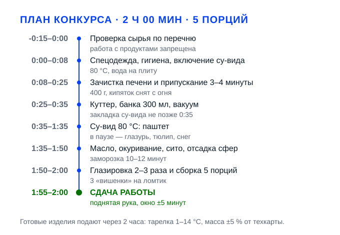
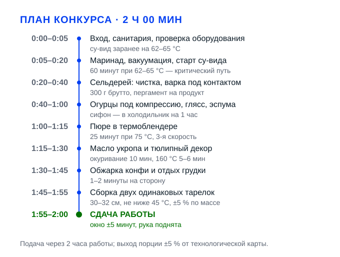
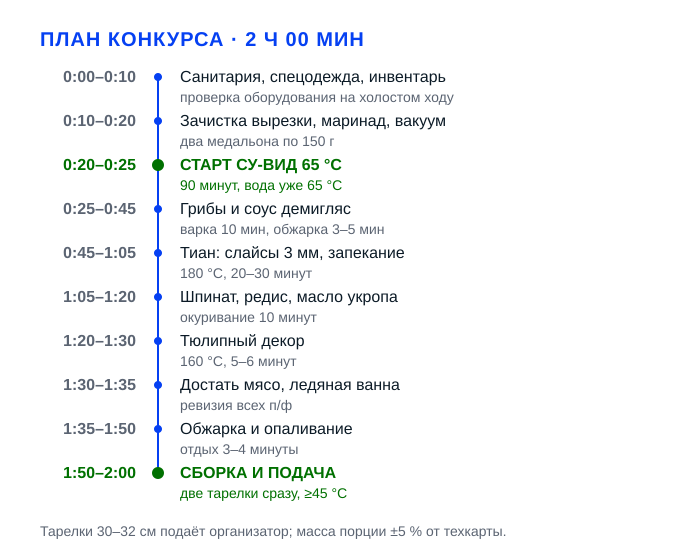

Мастер высокой кухни (Р)
Задания ниже — официальные файлы «Абилимпикс» (источник: abilympics-russia.ru), разложенные по категориям. Решения написаны по тексту задания, регламенту и критериям оценки; в них указано, что именно проверяет эксперт.
Школьник
14–16 лет, базовый уровень заданияВыдержка из официального конкурсного задания: страницы, относящиеся к категории «Школьник» (стр. 5–8 источника).
Пошаговое решение
Задание для школьников — холодная закуска на пять порций: «Паштет из печени индейки «зимняя вишня» на чиабатте со снегом из льняного масла». На всё отводится два часа, и внутри этого времени нужно провести семь техник: 3D-форму, глазировку, су-вид, пюрирование термоблендером, декор из тюлипного теста, окуривание и паширование. Порции должны быть идентичными, масса каждой — по технологической карте с допуском ±5 %, тарелка — круглая белая плоская 30–32 см с температурой от 1 до 14 °С, и никакого декора на самой тарелке. Час паштета в вакууме при 80 °С — это узкое место всей работы, поэтому глазурь, тюлип и снег делаются в паузе, а не после. Пятнадцать минут до старта даются только на проверку сырья, и трогать продукты в это время нельзя.

Задача 1. Подготовить бокс, сырьё и план на 120 минутМодуль А · 120 минут · 5 порций
До первого движения ножом бокс должен стать предсказуемым: чистая спецодежда, проверенное по граммам сырьё, инструмент по зонам, прогретый су-вид и написанный на бумаге план, в котором су-вид стартует не позже 0:35. В задании семь техник — 3D-форма, глазировка, су-вид, пюрирование, тюлипное тесто, окуривание и паширование, — и все они упираются в один час, который паштет проводит в вакууме при 80 °С. Этот час нельзя сократить, зато можно заполнить глазурью и декором, если место и инструмент подготовлены заранее. Остальное делается в первые восемь минут после сигнала.
Действие 1.1. Войти в бокс по санитарным правилам
Шаг 1.1.1
Надеваем полный комплект: белую куртку или фартук, колпак, брюки, закрытую обувь с закрытой пяткой. Куртку застёгиваем на все пуговицы, свисающие завязки убираем, рукава подворачиваем до локтя или застёгиваем у кисти. Колпак садится так, чтобы волосы были убраны и спереди, и на затылке: именно сзади они чаще всего выбиваются и падают на стол. Обувь — на нескользящей подошве, потому что пол у плиты и раковины мокрый.
Строгое соблюдение санитарных норм — отдельное требование конкурсного задания, и проверяется оно не один раз в начале, а всё время работы. Волосы и ткань рукава — самый частый источник посторонних включений в паштетной массе, а паштет после куттера уже не жарится: он только доходит в вакууме при 80 °С, и то, что попало в массу, останется в ней до подачи.
Отойдите к зеркалу или попросите волонтёра посмотреть со спины: волос не видно ни спереди, ни сзади, куртка застёгнута и не топорщится, рукава выше локтя, обувь закрытая и сухая. Проверьте карманы — там не должно быть ни булавок, ни телефона.
Самая частая ошибка — надеть колпак на макушку, оставив затылок открытым: спереди всё выглядит аккуратно, а сзади волосы лежат на воротнике. Вторая — прийти в открытой обуви, рассчитывая надеть куртку потом: время на переодевание уходит из модуля, а нарушение уже зафиксировано.
Эксперт фиксирует спецодежду до старта и возвращается к ней по ходу: пятна от вишнёвого пюре на груди к середине работы тоже считаются нарушением. Отдельно отмечает, остаётся ли куртка чистой к концу модуля.
Шаг 1.1.2
Моем руки с мылом до запястий не меньше двадцати секунд, не забывая большие пальцы, промежутки между пальцами и ногти, вытираем одноразовым полотенцем и сразу выбрасываем его. Снимаем часы, кольца, браслеты, длинные серьги; ногти коротко подстрижены, без лака и наращивания. Мыть руки придётся заново после каждой работы с сырой печенью, после холодильника, после уборки и после того, как поправили колпак.
Печень индейки — сырой продукт, а паштетная масса идёт в дело без финальной обжарки, поэтому всё, что переносится с рук, попадает в готовое блюдо. Нитритная соль в рецептуре работает с цветом и безопасностью фарша, но она не заменяет мытьё рук. На конкурсе это оценивается как соблюдение санитарных норм, и замечание по гигиене стоит дороже, чем любая техника.
Руки сухие, полотенце использованное и уже в мусоре, а не на столе. На запястьях ничего нет. Проверьте себя простым правилом: если вы только что держали печень и тянетесь к соли или к банке — сначала раковина, потом соль.
Вытирать руки о фартук: внешне руки сухие, но фартук становится переносчиком, и это видно. Вторая ошибка — помыть руки один раз на входе и считать вопрос закрытым на весь модуль, хотя оценка идёт по процессу, а не по стартовому кадру.
Эксперт смотрит на руки в течение всей работы, отдельно отмечая, моется ли инвентарь и руки после контакта с сырым продуктом. Ещё один момент, который фиксируют, — мытьё рук после холодильника, где лежит сырая печень.
Шаг 1.1.3
Убираем всё лишнее: сумку и верхнюю одежду — в гардероб, телефон — туда же, на стол не кладём ничего, кроме инвентаря и продуктов по заданию. Технологическую карту с рассчитанным выходом одной порции ставим в файл или на подставку так, чтобы её было видно, но она не лежала в зоне нарезки. Ручку кладём рядом с картой, а не в карман фартука. Стол должен остаться с одним свободным углом под разделочную зону, иначе доска окажется на краю.
Портфолио участника — титульный лист с фамилией, регионом и учебным заведением, технологическая карта с весом одной порции и фотографии готовых изделий — оценивается отдельно от готовки, и техкарта должна быть под рукой в прямом смысле слова. Телефон на площадке запрещён правилами, а техкарта, залитая соком, уже не документ.
На столе только то, что нужно по заданию, техкарта читается целиком, выход одной порции в ней указан числом. Пройдите глазами по столу и уберите всё, чем не будете пользоваться в следующие два часа. Свет на столе ровный, без теней от посуды, и техкарту видно, не вставая с места.
Ошибка — положить техкарту под разделочную доску, чтобы не мешала: к середине работы она размокает, а вес порции приходится вспоминать по памяти. Вторая — оставить телефон в кармане фартука и потерять на этом организационные баллы.
Эксперт оценивает организацию в первые минуты и потом смотрит, лежит ли техкарта на виду в момент сборки, когда участник сверяет выход. Смотрит также, не лежит ли на столе личное полотенце или телефон.
Действие 1.2. Проверить и подтвердить сырьё за 15 минут до старта
Шаг 1.2.1
Берём весы, перечень сырья и пересчитываем всё по позициям: печень индейки 400 г, масло сливочное 82,5 % — 125 г, вишнёвое пюре 200 г, вишнёвый сок 100 г плюс отдельно 20 г в паштет, каппа 4 г, мальтодекстрин 10 г, масло льняное 2 г, яйцо одно, уксус винный красный 12 г, соль 7 г, соль нитритная 7 г, перец белый горошком 1 г, чиабатта на пять ломтей, кресс-салат амаранта. Каждую позицию взвешиваем в своей таре, показания записываем в техкарту рядом с рецептурой.
Пятнадцать минут до старта даются именно на проверку и подтверждение качества и количества, и это единственное время, когда можно спокойно обнаружить недостачу. Всё, что выяснится после сигнала, будет отнимать минуты у модуля: замена продукта, поиск эксперта, повторное взвешивание. Пять идентичных порций и допуск ±5 % от заявленной массы держатся на том, что рецептура собрана точно, а не примерно.
Все позиции взвешены, записаны и совпадают с рецептурой до грамма; особенно проверьте каппу — 4 г на 300 г жидкости, ошибка в один грамм меняет плотность глазури. Чиабатты должно быть ровно на пять порций с запасом на подрезку, кресс — свежий, не вялый.
Самая дорогая ошибка — отвесить всё на глаз: каппы оказывается 2–3 г, и глазурь ложится тонкой водянистой плёнкой, которая не держится на сфере. Вторая — не проверить количество чиабатты и обнаружить в момент сборки, что ломтей четыре на пять порций.
Эксперт подходит к столу в эти пятнадцать минут и подтверждает перечень вместе с участником: важно, чтобы участник сам назвал позиции, а не кивнул на разложенные продукты.
Шаг 1.2.2
Оцениваем качество, не разворачивая продукты полностью: печень — цвет от розово-коричневого до тёмно-бордового, запах свежий, без кислого и горького оттенка, поверхность влажная, но не липкая, после нажатия пальцем ямка восстанавливается. Масло 82,5 % — без посторонних запахов, не крошится. Вишнёвое пюре — плотное, не подтаявшее повторно. Чиабатта — с хрустящей коркой, при сжатии возвращает форму.
Из 400 г печени получается вся партия из пяти порций, поэтому дефект одной позиции не исправляется ни уксусом, ни вишнёвым соком: горький привкус от повреждённого желчного протока останется в паштете и уйдёт прямо в критерий вкуса. Точно так же повторно замороженное пюре даёт крупинки в глазури, а чёрствая чиабатта не впитывает масло и ломается при обжарке.
Печень упругая, без слизи и тёмных сгустков, запах чистый; масло пахнет только сливками; пюре однородное на вид, без кристаллов льда; чиабатта пружинит. Сомневаетесь в одной позиции — покажите её эксперту до старта, а не после.
Взять печень с горьковатым запахом, решив, что вишня и уксус перебьют: паштет горчит, и это чувствуется на каждой из пяти порций. Вторая ошибка — разморозить пюре в тёплом месте и получить расслоение глазури.
Эксперт смотрит, осматривает ли участник продукт или только пересчитывает: осмотр считается частью профессиональной подготовки. Отдельно смотрит, проверяет ли участник сроки на упаковке масла и вишнёвого пюре.
Шаг 1.2.3
Если позиции не хватает или продукт с дефектом — сразу поднимаем руку и говорим эксперту до сигнала, показывая конкретную позицию и вес. В эти пятнадцать минут продукты нельзя чистить, резать, мыть и вообще как-либо обрабатывать: можно только смотреть, взвешивать и считать. Всё, что вы тронули, остаётся в том виде, в каком было. Если эксперт занят, стоим у стола и ждём: сигнал старта общий для всех боксов и объявляется вслух.
Запрет на кулинарную обработку до старта прописан в конкурсном задании прямо, и его нарушение фиксируется как нарушение регламента. При этом недостача, о которой сказали до старта, решается организаторами быстро, а та же недостача в 0:20 решается уже за счёт вашего часа в су-виде.
Вопрос задан и закрыт до сигнала, ничего не почищено и не порезано, руки после осмотра вымыты. Проверьте ножи и доски: они должны лежать так же, как лежали. Проверьте также, что упаковки не вскрыты, а весы стоят на нуле с пустой тарой.
Начать зачищать печень за минуту до старта, чтобы сэкономить время: это нарушение временного регламента, и оно заметно сразу. Вторая ошибка — молча добрать недостающее из чужого бокса: это уже не ошибка, а нарушение правил.
Эксперт следит за границей старта и фиксирует любые действия с продуктами до сигнала. Если участник начал работу до сигнала, эксперт останавливает его и фиксирует нарушение регламента: спорных ситуаций здесь не бывает, время старта известно всем.
Действие 1.3. Разложить бокс по зонам и подписать заготовки
Шаг 1.3.1
Раскладываем доски по цветовой маркировке: жёлтая — под сырую птицу, красная — под сырое мясо, зелёная — под овощи и зелень, белая — под хлеб и гастрономию, коричневая — под готовую продукцию и полуфабрикаты высокой степени готовности. Ножи закрепляем по тому же принципу: отдельный под печень, отдельный под хлеб, отдельный под кресс. Все доски сухие, без сколов по кромке, рукояти ножей плотно насажены.
Цветовая маркировка досок — прямое требование конкурсного задания, и это не формальность: паштетная масса не проходит финальную термическую обработку, поэтому сок сырой печени на доске для хлеба означает, что хлеб получил этот сок. Загрязнение видно на срезе чиабатты, а оценивается оно и по санитарии, и по внешнему виду.
Каждая доска на своём месте, ножи разложены по назначению, поверхности сухие. Проверьте кромки: скол на доске — это место, где скапливаются остатки, и эксперт это отмечает. Проверьте также, что ни одна доска не лежит на мокром столе и не касается сырья.
Резать чиабатту на доске из-под печени, потому что она ближе лежит: хлеб впитывает розовый сок, и на срезе остаётся тёмное пятно, которое уже не срезать. Вторая ошибка — работать мокрой доской: паштетная масса при отсадке «поплывёт» от лишней влаги.
Эксперт смотрит, пользуется ли участник маркировкой по ходу работы или берёт первую попавшуюся доску, и делает вывод о понимании санитарных правил. Отмечает и порядок: доски не свалены в стопку, а разложены по местам.
Шаг 1.3.2
Делим стол на три полосы: слева сырьё и весы, в центре куттер или термоблендер с высокой чашей, справа — зона готовой продукции: сито, кондитерский мешок, силиконовые сферические формы, шпажки, силиконовый коврик, палетка, молд для тюлипа. Под рукой держим бумажные полотенца и сухое полотенце для рук. Всё, что нужно на сборке, ставим до старта, а не ищем в 1:50.
За сто двадцать минут работа проходит пять переходов: печень — куттер — банка — сито — сферы — сборка. Каждый лишний шаг за инструментом в дальний угол стоит секунд, а на последних двадцати минутах, когда глазурь и заморозка идут одновременно, эти секунды складываются в минуты. Кроме того, готовая зона не должна соседствовать с сырой — это вопрос той же санитарии.
Мысленно пройдите маршрут от печени до сборки: ни на одном шаге не нужно возвращаться назад или открывать шкаф. Формы, шпажки и коврик лежат в зоне сборки, сито — на виду, мешок собран с насадкой заранее.
Сито в дальнем углу, формы в холодильнике под чужими контейнерами, мешок без насадки — на поиски уходит пять-семь минут, и именно их потом не хватает на заморозку сфер. Вторая ошибка — поставить готовую зону рядом с сырой и потом ловить крошки печени на глазури.
Эксперт оценивает эргономику и организацию рабочего места как отдельный критерий, и делает это в первые минуты, пока стол ещё не заставлен. Смотрит и на проходы: они должны оставаться свободными от тары и коробок.
Шаг 1.3.3
В холодильнике разводим хранение: сырьё на нижней полке, полуфабрикаты выше, готовые заготовки — на отдельной полке. Всё упаковываем: печень в лоток под плёнку, паштетную массу в банку с плотной крышкой, глазурь в контейнер, сферы в закрытой ёмкости. На каждой упаковке подпись: что внутри и во сколько убрано. Ничего не ставим на полку над сырьём: там только упакованные и подписанные заготовки.
Раздельное хранение сырья и полуфабрикатов и упакованные заготовки — требование конкурсного задания, которое проверяется в середине работы, а не на финише. За два часа открытая сфера из паштета успевает заветриться и покрыться серой кромкой, а глазурь в открытом контейнере тянет запахи холодильника.
Все контейнеры закрыты, подписи читаются, полки не переполнены и ничего не стоит на сырье. Откройте холодильник и посмотрите сверху: если непонятно, где чьё, — переставьте сейчас, потом будет некогда.
Оставить открытую банку с паштетом на полке: заветривание, серый край, и при отсадке крупинки сухой массы попадут в сферу. Вторая ошибка — поставить горячую банку после су-вида рядом с маслом: масло подтает.
Эксперт открывает холодильник в середине модуля и смотрит на упаковку и подписи — это самая быстрая проверка отношения к работе. Подписи проверяет на читаемость и на наличие времени, а не только названия.
Действие 1.4. Запустить оборудование и разложить 120 минут по минутам
Шаг 1.4.1
Включаем су-вид заранее: наливаем воду между нижней и верхней метками, ставим 80 °С, закрываем крышку и даём выйти на режим десять-пятнадцать минут. Температуру проверяем не только по дисплею, но и термощупом в воде: расхождение в два градуса меняет консистенцию паштета. Рядом кладём вакуумный упаковщик и пакеты, чтобы закладка заняла одну минуту. Рядом с ванной кладём щипцы и полотенце, чтобы не искать их в момент выемки.
Час при 80 °С — узкое место всего модуля: именно от этой минуты считается всё остальное. Если заложить паштет в 0:50, он выйдет в 1:50, и на охлаждение, окуривание, отсадку, заморозку, глазировку и сборку пяти порций останется десять минут — этого не хватит физически. Прогрев воды до старта — единственный способ этого избежать.
Дисплей показывает 80 °С, термощуп подтверждает значение с точностью до градуса, вода не выкипает и не уходит ниже метки. Пакеты и упаковщик лежат рядом с ванной. Убедитесь, что ванна стоит ровно и вода не достаёт до края, иначе капли падают на стол.
Включить су-вид после того, как паштетная масса уже готова: пятнадцать минут прогрева съедят четверть часа из самого дефицитного ресурса. Вторая ошибка — налить воду выше метки: пакет всплывает, и часть массы не прогревается.
Эксперт смотрит, запущено ли оборудование до начала работы с сырьём, и фиксирует температуру ванны, если подходит к боксу в первые минуты. Смотрит также, записано ли время старта су-вида на техкарте.
Шаг 1.4.2
Проверяем остальное оборудование на холостом ходу: пароконвектомат ставим на 160 °С и ждём выхода на режим, куттер или высокую чашу термоблендера включаем на пару секунд без продукта, весы обнуляем с тарой, смокинг-ган проверяем одним коротким нажатием — должна пойти ровная струя дыма. Щипцы для шпажек, силиконовый коврик и формы раскладываем в зоне сборки.
Конкурсное задание прямо требует подготовить оборудование и проверить его работу на холостом ходу. Практический смысл в тюлипе: он печётся пять-шесть минут при 160 °С, и в непрогретой камере тесто остаётся сырым по центру, а по краю уже темнеет. Куттер, который не запускается, обнаруженный в 0:30, — это потеря всей партии.
Камера вышла на 160 °С, нож куттера вращается ровно и без стука, весы показывают ноль с тарой, смокинг-ган даёт плотную струю. Всё это проверено до первого продукта, а не в момент, когда уже нужно. Проверьте и подсветку камеры: без света цвет тюлипа не оценить.
Печь тюлип в холодной камере: шесть минут не хватит, элемент получится бледным и гнущимся, а второй заход съест ещё шесть минут. Вторая ошибка — включать куттер с не защёлкнутой крышкой: масса летит на стену, и часть рецептуры потеряна.
Эксперт отмечает проверку оборудования как часть организации работы; отдельно смотрит, прогрет ли пароконвектомат к моменту запекания тюлипа. Отмечает и чистоту камеры перед посадкой: нагар на поду даёт горечь.
Шаг 1.4.3
Записываем план на обратной стороне техкарты крупно, по времени: 0:00–0:08 вход и запуск, 0:08–0:25 зачистка и припускание печени, 0:25–0:35 куттер и банка, 0:35 закладка в су-вид, 0:35–1:35 пауза на глазурь, тюлип, снег и чиабатту, 1:35 стоп и охлаждение, 1:50 глазировка и сборка, 2:00 сдача. Каждые двадцать минут сверяемся с планом одним взглядом на часы.
Пять порций, семь техник и сто двадцать минут складываются только при параллельной работе: пока паштет в вакууме, делается глазурь, печётся тюлип и собирается снег. Последовательное выполнение тех же действий занимает около трёх часов, и никакая скорость рук это не компенсирует. План нужен ещё и потому, что сдача привязана к двум часам, а не к состоянию блюда.
План записан числами, а не словами, и висит на виду. В 1:00 вы должны находиться в блоке декора, а не в блоке паштета. Если отстаёте больше чем на десять минут, сокращайте декор, но не су-вид. План должен быть виден с рабочего места, а не лежать в кармане фартука.
Ждать окончания су-вида, ничего не делая: потом глазурь, тюлип, снег и сборка сваливаются в последние двадцать минут, глазурь не успевает схватиться, и порции получаются разными. Вторая ошибка — планировать заморозку сфер на пять минут: за такой срок сфера не схватится и развалится на шпажке.
Эксперт смотрит на темп: идёт ли работа параллельно, есть ли паузы простоя. Ровный темп без рывков читается как понимание технологии. Отдельно смотрит, не мечется ли участник между зонами без видимой задачи.
Задача 2. Приготовить паштет из печени индейки и отсадить «вишенки»Модуль А · су-вид 80 °С · 1 час
Ядро задания: из 400 г печени индейки получается паштетная масса, которая после куттера уходит в банку на 300 мл и час проводит в вакууме при 80 °С, а потом превращается в пять шаров-«вишенок» по три штуки на порцию. В этой задаче три точки, где теряют результат: печень, припущенная слишком долго и ставшая сухой; масса, перегретая в куттере и расслоившаяся на жир и волокна; и сфера, отсаженная из тёплой массы, которая не держит форму на шпажке. Масло вводится уже после су-вида, окуривание идёт до протирания через сито, и порядок этих двух операций тоже влияет на вкус.
Действие 2.1. Зачистить и припустить печень
Шаг 2.1.1
Кладём печень на жёлтую доску и зачищаем: снимаем тонкую плёнку, вырезаем протоки, крупные сосуды и тёмные сгустки крови. Работаем ножом с тонким лезвием, разрез ведём от центра к краю, а не наоборот, чтобы не вытянуть плёнку в середину куска. На 400 г печени зачистка занимает пять-семь минут, и это нормально: спешка здесь дороже, чем кажется. Работаем в перчатках, которые меняем после сырой печени.
Плёнка и протоки после куттера превращаются в плотные волокна, которые чувствуются на языке и видны в срезе сферы; сгустки крови дают тёмные точки и металлический привкус. От того, насколько чистой уйдёт печень в куттер, зависит и гладкость паштета, и его вкус, а это два разных критерия оценки.
На разрезе нет белых плёнок и тёмных включений, куски одинаковой толщины, доска сухая. Проведите по куску пальцем: поверхность должна быть ровной, без тянущихся плёнок. Осмотрите печень на просвет: тёмных участков и плотных белых тяжей быть не должно.
Оставить печень целыми кусками «куттер всё перемелет»: плёнка не режется ножом куттера, а наматывается на него, и масса получается с волокнами. Вторая ошибка — зачищать на красной доске, предназначенной для сырого мяса.
Эксперт смотрит на зачистку в первые минуты: чистая печень без плёнок читается сразу, и это базовая профессиональная операция. Обращает внимание и на состояние доски после зачистки: она должна остаться сухой.
Шаг 2.1.2
Ставим кастрюлю с водой на сильный огонь, доводим до кипения, опускаем зачищенную печень и сразу снимаем кастрюлю с плиты. Печень остаётся в горячей воде три-четыре минуты, без кипения, при температуре около 90 °С: вода должна быть горячей настолько, чтобы рука не терпела, но на поверхности не должно быть бурных пузырей. Через три минуты проверяем самый крупный кусок на разрезе.
Такое припускание — паширование — нужно, чтобы печень схватилась снаружи, перестала кровить и потеряла часть влаги, но осталась розовой внутри. В кипящей воде она за минуту становится серой и плотной, а после часа в су-виде превращается в сухую массу, которую не спасёт даже 125 г масла.
На разрезе крупного куска центр розово-коричневый, не серый и не красный, сок выделяется светлый, без крови. Кусок пружинит под пальцем, но не разваливается. Вода после припускания должна остаться светлой, слегка розовой.
Оставить печень в кипящей воде на плите: через минуту-две она серая снаружи и плотная по всему объёму, и паштет выйдет крошливым. Вторая ошибка — держать в воде десять минут «чтобы наверняка»: теряется до трети влаги, и масса не пюрируется в гладкую пасту.
Эксперт подходит к плите в этот момент и смотрит, снята ли кастрюля с огня и сколько печень стоит в воде: превышение времени видно по цвету. Отмечает и температуру воды: у поверхности не должно быть бурных пузырей.
Шаг 2.1.3
Откидываем печень на дуршлаг, даём стечь две-три минуты, обсушиваем бумажным полотенцем и перекладываем в холодную тару. Взвешиваем: после припускания от 400 г остаётся примерно 320–340 г, и это нормальные потери. Перед куттером масса должна остыть до комнатной температуры или быть чуть тёплой, но не горячей. Если печень пришла в вакууме, вскрываем упаковку над раковиной, чтобы сок не попал на стол.
Обсушка нужна, чтобы лишняя вода не разбавляла паштет: вода в массе отделяется при заморозке и даёт ледяные кристаллы внутри сферы. Взвешивание после припускания — это способ понять фактический выход и честно записать его в технологическую карту, по которой потом считают допуск ±5 % от заявленной массы.
Печень обсохла, с неё не капает, вес записан и близок к 320–340 г. На ощупь куски тёплые, но не горячие: если держать кусок в ладони неприятно, дайте ещё минуту. Проверьте, что дуршлаг не стоит в воде: иначе печень снова наберёт влагу.
Сразу загрузить горячую печень в куттер: масса нагревается, эмульсия «рвётся», и при заморозке сфера крошится. Вторая ошибка — не взвесить после припускания и потом не сойтись с заявленным выходом в техкарте.
Эксперт сверяет фактический вес с техкартой участника и смотрит, обсушивается ли продукт перед закладкой. Сверяет потери с ожидаемыми и спрашивает, чем объясняется отклонение, если вес заметно меньше.
Действие 2.2. Собрать паштетную массу в куттере
Шаг 2.2.1
Закладываем в холодную чашу куттера печень, соль 7 г, соль нитритную 7 г, перец белый 1 г (горошком — сначала растолочь в ступке), одно яйцо, винный уксус 12 г и вишнёвый сок 20 г. Сначала пробиваем всё без масла до грубой пасты двадцать-тридцать секунд, останавливаемся, снимаем массу со стенок лопаткой и пробиваем ещё столько же до гладкости. Крышку куттера закрываем до щелчка: иначе масса вылетает на стену.
Соль и нитритная соль в этой рецептуре работают в паре: нитритная даёт цвет и защиту при длительном прогреве, обычная — вкус. Уксус и вишнёвый сок подкисляют массу, и это не только вкус: кислая среда помогает эмульсии держаться и делает цвет паштета ровным. Масло на этом этапе не вводится — оно идёт после су-вида, иначе при 80 °С часть жира отойдёт.
Масса однородная, без видимых кусочков, цвет ровный розово-коричневый, на стенках чаши не остаётся непробитых волокон. Попробуйте растереть щепотку между пальцами: не должно быть крупинок. Цвет должен быть ровным по всей массе, без светлых участков у стенок.
Ввести всё масло сразу в куттер до су-вида: при часе на 80 °С жир частично отделится, и после охлаждения на сфере выступят капли. Вторая ошибка — бросить перец горошком целым: в гладкой массе останутся твёрдые точки.
Эксперт смотрит на порядок закладки и на то, взвешены ли соли: на глаз отмерить 7 г нитритной соли невозможно, а её избыток меняет вкус. Обращает внимание на то, взвешены ли соли на весах, а не отмерены на глаз.
Шаг 2.2.2
Пробиваем импульсами по десять-пятнадцать секунд с паузами, чтобы масса не нагревалась выше 12–15 °С. Чашу и нож держим холодными, при перегреве ставим чашу на несколько минут в холодильник. Общее время работы куттера — около полутора-двух минут, до состояния гладкой блестящей пасты, которая держится на лопатке и медленно сползает с неё. Не держим куттер включённым без нужды: каждая лишняя секунда греет массу.
Тепло разрушает эмульсию: белок сворачивается, жир выходит из связанного состояния, и масса становится зернистой. Из такой массы сфера при отсадке рвётся по краю, а после заморозки трескается — это прямые потери по внешнему виду и текстуре. Тёплая масса — это уже потерянная текстура, и вернуть её нельзя.
Температура массы по термощупу не выше 15 °С, паста гладкая, блестящая, без крупинок и без капель жира на поверхности. Лопатка оставляет на массе ровную борозду, которая не заплывает мгновенно. Проверьте также, что чаша снаружи не нагрелась от работы ножа.
Молоть без остановок на высокой скорости: через сорок секунд масса тёплая, и эмульсия уже не собирается обратно. Вторая ошибка — не снимать массу со стенок: внизу паста гладкая, у стенок остаются непробитые куски, которые потом видны в срезе.
Эксперт может попросить показать консистенцию на лопатке: гладкость и блеск — это то, что отличает паштет от рубленой массы. Отмечает, снимает ли участник массу со стенок после каждой остановки куттера.
Шаг 2.2.3
Контролируем массу перед закладкой: набираем ложку, размазываем тонким слоем по холодной белой тарелке и смотрим на просвет. Не должно быть тёмных точек, прожилок и капель жира по краю мазка. Если видно волокно — возвращаем в куттер ещё на десять секунд, а не надеемся, что «в сфере не заметно». Если масса кажется жидкой, не добавляем ни муки, ни крахмала: рецептура не допускает изменений, а нужную густоту даст масло после су-вида.
Это последняя точка, где можно что-то исправить без потерь: после банки и часа в су-виде масса уже не переделывается. Просвет на белой тарелке показывает то, чего не видно в глубокой чаше, и занимает меньше минуты, а пять порций делаются из одной партии — ошибка размножится на все пять.
Мазок ровный, цвет одинаковый по всей длине, тёмных точек и волокон нет, по краю не выступает жир. Масса держит форму горки на ложке. Мазок должен быть одинаковым по толщине: если он рвётся, значит в массе остался комок.
Пропустить этот контроль и заложить массу с волокнами: в разрезе сферы видна полоса, и эксперт отмечает неоднородность текстуры. Вторая ошибка — размазывать пробу на тёплой тарелке: жир выступает сам, и вы уходите в куттер без причины.
Эксперт смотрит на консистенцию и цвет массы, если подходит к боксу до закладки; ровный цвет читается как показатель правильной нитритной соли. Смотрит и на чистоту ложки, которой берут пробу.
Действие 2.3. Завакуумировать и приготовить паштет при 80 °С
Шаг 2.3.1
Перекладываем массу в чистую сухую банку объёмом 300 мл, заполняя её на два сантиметра ниже края: при прогреве масса расширяется, и если залить под горло, крышку выдавит. Стучим банкой о стол через сложенное полотенце, чтобы вышли пузыри, и закрываем крышку плотно, до упора. Если работаем в пакете, разравниваем массу слоем не толще трёх сантиметров и убираем воздух вакууматором.
Плотная крышка и отсутствие воздуха — условия су-вида: без них на поверхности массы образуется серый окисленный слой, а внутри остаются воздушные карманы, которые не дают массе прогреться равномерно. Толщина слоя тоже важна: час рассчитан на определённую толщину, а не на любой объём.
Банка заполнена на две трети или чуть выше, но не под крышку, пузырей на стенках почти нет, крышка затянута. Пакет — без воздушных карманов, масса распределена ровно. Проверьте также, что на резьбе банки нет массы: иначе крышка не затянется до конца.
Залить банку под самую крышку: при 80 °С масса расширяется, крышку срывает, и вода попадает внутрь — партия испорчена, а на переделку нет ни времени, ни печени. Вторая ошибка — оставить воздух в пакете: масса всплывает и прогревается неравномерно.
Эксперт проверяет упаковку перед закладкой: закрыта ли банка, нет ли воздуха в пакете, ровный ли слой. Отмечает, помечена ли банка временем закладки: по этой пометке потом сверяют час.
Шаг 2.3.2
Опускаем банку в ванну так, чтобы вода полностью покрывала её, и фиксируем время: час отсчитывается с момента, когда вода снова вышла на 80 °С после закладки, а не с момента, когда вы закрыли крышку. Ставим таймер на 60 минут и записываем время старта на техкарте. Крышку ванны закрываем и больше не открываем без нужды. Не оставляем ванну без присмотра дольше десяти минут: вода испаряется, и уровень падает.
Восемьдесят градусов и час — режим, при котором белок печени схватывается, а масса остаётся нежной; при 90 °С она становится плотной, при 70 °С не доходит до нужной консистенции. Открытая крышка сбрасывает температуру, и час растягивается, а время сдачи привязано к двум часам работы, а не к состоянию банки.
Термометр в ванне держит 80 °С с точностью до градуса, вода покрывает банку, таймер запущен. Проверьте через десять минут: если температура просела, не поднимайте её резко, дайте выйти на режим. Убедитесь, что ванна стоит на ровной поверхности и не качается.
Считать час от закладки, не дожидаясь возврата на 80 °С: реальное время прогрева окажется на десять-пятнадцать минут меньше, и паштет выйдет недоготовленным. Вторая ошибка — открывать ванну каждые десять минут «посмотреть».
Эксперт фиксирует температуру и время, если подходит к ванне: это ключевая техника модуля — су-вид. Смотрит и на то, закрыта ли крышка ванны и не сбиты ли настройки после чужого подхода.
Шаг 2.3.3
Через час вынимаем банку щипцами, ставим на полотенце и сразу проверяем готовность: термощуп в центре массы должен показать не ниже 72–75 °С, поверхность ровная, без серых пятен, при наклоне банки масса не булькает и не отделяет жидкость. Даём банке остыть до 40–45 °С, не открывая крышку, десять-пятнадцать минут. Крышку открываем только после остывания: иначе пар уносит аромат и на поверхности садится конденсат.
Температура в центре — единственный объективный признак того, что прогрев прошёл по всему объёму, а не только у стенок. Остывание в закрытой банке нужно, чтобы масса не заветрилась и не набрала лишнюю влагу из воздуха: открытая горячая масса активно впитывает запахи соседних продуктов.
Центр не ниже 72 °С, поверхность ровная и однородная по цвету, жидкость не отделилась. Банка тёплая, но не горячая — можно держать в руках. Если банка при наклоне булькает, значит внутри остались пузыри и прогрев неравномерный.
Достать банку раньше часа, потому что «уже пахнет готовым»: центр не дошёл до температуры, и паштет получается рыхлым, а по безопасности такой продукт на оценку выставлять нельзя. Вторая ошибка — открыть крышку сразу и дать массе заветриться.
Эксперт проверяет температуру в центре термощупом, если подходит в момент выемки: это быстрый и однозначный контроль. Отмечает время выемки по часам: час считается от возврата ванны на 80 °С.
Действие 2.4. Ввести масло, окурить, протереть и отсадить сферы
Шаг 2.4.1
Перекладываем остывшую до 40–45 °С массу в куттер, добавляем 125 г сливочного масла 82,5 %, нарезанного кубиками и размягчённого до комнатной температуры, и вымешиваем импульсами до полного соединения. Масло вводим в два приёма: половину, десять секунд, снять со стенок, вторую половину и ещё пятнадцать секунд. Масса должна стать светлее и шелковистее.
Масло вводится после су-вида, а не до него, и это принципиально: при прогреве жир из эмульсии отходит, а в холодную прогретой массе он вбивается и держится. 125 г на 400 г печени — это почти треть объёма, и именно масло даёт ту текстуру, за которую паштет оценивают отдельно от вкуса.
Масса посветлела, стала глянцевой и однородной, на лопатке держится плотно. На языке не должно быть ощущения крупинок жира: если чувствуются, вымешивайте ещё десять секунд. Если масса блестит неравномерно, вмешайте ещё десять секунд и снова снимите со стенок.
Ввести масло в горячую массу: жир растопится и выступит на поверхности после охлаждения, сфера будет «жирной» на вид и на вкус. Вторая ошибка — ввести холодное масло из холодильника: оно не соединится и пойдёт комками.
Эксперт смотрит на блеск и цвет массы после ввода масла: ровный шелковистый блеск — признак правильной эмульсии. Смотрит, не выступил ли жир по краю чаши после вымешивания.
Шаг 2.4.2
Окуриваем паштет смокинг-ганом: перекладываем массу в глубокий контейнер, вводим трубку под слой, даём две-три короткие струи дыма, сразу закрываем крышкой и держим одну-две минуты, чтобы дым осел. Затем протираем массу через сито с ячейкой 1–2 мм, продавливая лопаткой, а не ложкой, и собираем её в чистую ёмкость. Трубку держим под углом, чтобы дым шёл в массу, а не в лицо.
Окуривание даёт тот самый аромат «зимней вишни» с дымком, который отличает блюдо от обычного паштета, а протирание убирает остатки волокон и делает массу пригодной для отсадки через узкую насадку. Порядок важен: если протереть до окуривания, дым ложится на гладкую поверхность и уходит при отсадке неравномерно.
Аромат дымка читается, но не перебивает печень и вишню; после сита на стенках остаются только волокна, а масса гладкая. На белой тарелке мазок ровный, без тёмных точек. Если дым почти не читается, добавьте одну струю, а не три.
Держать трубку над массой и лить дым сверху: аромат остаётся на поверхности и выветривается за десять минут. Вторая ошибка — дать слишком много дыма: паштет горчит, и это уже не исправить ни маслом, ни глазурью.
Эксперт оценивает аромат при дегустации и может спросить, сколько струй дыма было сделано: важно понимать меру, а не «закоптить посильнее». Отмечает и то, не перекурил ли участник паштет: горечь чувствуется сразу.
Шаг 2.4.3
Наполняем кондитерский мешок с круглой насадкой протёртой массой, срезаем кончик так, чтобы получить сферу нужного диаметра, и отсаживаем в силиконовые сферические формы. Заполняем каждую ячейку доверху одним движением, без воздуха внутри, затем снимаем излишки палеткой вровень с краем. Формы ставим в морозильную камеру на десять-пятнадцать минут, до полного схватывания.
Сферы — это техника 3D-формы, заявленная в задании, и именно они дают вид «вишенки». Отсадка одним движением нужна потому, что при двух порциях в ячейке между ними остаётся шов, по которому сфера лопается при извлечении. Заморозка перед глазировкой обязательна: тёплая сфера не держится на шпажке и разваливается в глазури.
Сферы ровные, одинакового диаметра, без пузырей и швов; после морозилки они твёрдые на ощупь и легко выходят из формы при лёгком поддевании. Посчитайте: нужно пятнадцать штук плюс две-три запасные. Отметьте число целых сфер: их должно быть не меньше пятнадцати.
Отсаживать в два приёма с доверху: получается сфера с поясом, которая рвётся по нему при извлечении, и вместо пяти порций по три штуки остаётся четыре. Вторая ошибка — глазировать едва схватившуюся сферу: она плывёт на шпажке и теряет форму.
Эксперт смотрит на геометрию сфер: одинаковый размер и ровная поверхность видны на тарелке сразу, а разнокалиберные «вишенки» ломают идентичность порций.
Задача 3. Сварить глазурь и заглазировать «вишенки»Модуль А · глазировка 2–3 слоя
Глазурь из 200 г вишнёвого пюре, 100 г вишнёвого сока и 4 г каппы — самая капризная часть блюда: каппы мало, и она не держит слой, каппы много или перевар — глазурь становится резиновой и тянется за шпажкой. Варить её нужно в паузе, пока паштет стоит в су-виде, а глазировать — уже по схватившимся холодным сферам, в два-три погружения с паузой, чтобы слой набрал толщину и блеск. Глазировка заявлена в задании отдельной техникой, и именно от неё зависит, будет ли «вишенка» читаться как вишенка, а не как серый шар в тёмной подтёкшей плёнке.
Действие 3.1. Сварить глазурь с каппой
Шаг 3.1.1
Отвешиваем 4 г каппы и смешиваем её с двумя ложками сахара в сухой миске, чтобы крупинки не слипались. В сотейник наливаем 100 г вишнёвого сока и добавляем 200 г вишнёвого пюре, прогреваем до тёплого состояния, затем тонкой струйкой вводим смесь каппы с сахаром, непрерывно размешивая венчиком. После этого пробиваем массу погружным блендером тридцать секунд, чтобы не осталось комков.
Каппа схватывается при контакте с жидкостью мгновенно и, если всыпать её горстью, превращается в желеобразные комки, которые потом не разбиваются ни венчиком, ни блендером. Равномерное распределение — единственное условие ровной глазури, и это тот случай, когда тридцать секунд блендера экономят всю партию.
На поверхности не видно крупинок, масса однородная по цвету, венчик проходит без сопротивления. Проведите ложкой по дну: никаких плотных точек не поднимается. Проверьте также, что на стенках сотейника не осталось сухих крупинок каппы.
Всыпать каппу в холодное пюре горстью и размешать ложкой: в глазури остаются прозрачные сгустки, которые видны на сфере как выпуклые пятна и чувствуются на языке. Вторая ошибка — добавить каппу «на глаз» больше нормы: слой становится резиновым и тянется.
Эксперт смотрит на однородность глазури, если подходит в момент варки: комки заметны сразу, ещё до глазирования. Отмечает, отвешена ли каппа на весах: 4 г — это меньше чайной ложки, на глаз не отмерить.
Шаг 3.1.2
Ставим сотейник на средний огонь и доводим до кипения при постоянном помешивании, снимая пену шумовкой. После закипания увариваем одну-две минуты, пока масса не станет чуть гуще, и сразу снимаем с огня. Кипение должно быть спокойным, а не бурным: сильный нагрев подсушивает каппу по стенкам и даёт тёмные крупинки в готовой глазури. Стенки сотейника держим чистыми, снимая брызги влажной кистью.
Каппа раскрывает свойства именно при нагреве выше 80 °С, поэтому глазурь обязательно доводят до кипения — иначе она останется жидкой и просто стечёт со сферы. При этом длительное кипячение уводит влагу, и глазурь получается слишком плотной, с «корочкой» на поверхности.
Глазурь кипит ровно, пены почти нет, цвет стал глубоким вишнёвым, без потемнений у стенок. На ложке масса держится тонким слоем и стекает непрерывной нитью. Если глазурь стекает струёй, как вода, уварите её ещё полминуты.
Проварить пять-семь минут: вода выпаривается, глазурь густеет настолько, что не затекает в углубления сферы и ложится бугристым слоем. Вторая ошибка — не снимать пену, тогда на поверхности остаются светлые хлопья.
Эксперт оценивает цвет и блеск глазури на сфере, но при варке может отметить аккуратность: чистые стенки сотейника, снятая пена. Смотрит на цвет: тёмный оттенок у стенок говорит о перегреве.
Шаг 3.1.3
Снимаем сотейник с огня и охлаждаем глазурь до 30–35 °С, помешивая, чтобы не образовалась плёнка. Проверяем консистенцию: обмакиваем ложку, и глазурь должна покрыть её ровным слоем, стекая медленно и полностью. Если масса на ложке держится толстым слоем и не стекает — она переварена, разводим ложкой тёплого сока; если стекает как вода — прогреваем ещё минуту.
Рабочая температура глазури — половина успеха: в слишком горячей сфера тает и теряет форму, в слишком холодной слой ложится неровно и тянется нитями. Проверка на ложке повторяет то, что произойдёт со сферой, и занимает пять секунд. Термометр здесь надёжнее руки: на ощупь разница в пять градусов не читается.
Глазурь стекает с ложки ровной непрерывной плёнкой, на поверхности нет плёнки застывшей, комков нет. Температура по термощупу 30–35 °С. Проверьте также, что на поверхности нет плёнки: она появляется, если не помешивать при остывании.
Глазировать горячей глазурью сразу после варки: сфера подтаивает, покрывается неровным слоем, а на шпажке остаётся потёк. Вторая ошибка — оставить глазурь на огне «чтобы не застыла»: она продолжает густеть и через десять минут не покрывает сферу вовсе.
Эксперт проверяет толщину слоя на готовой «вишенке»: ровный полупрозрачный глянец без потёков — признак правильной температуры. Обращает внимание на чистоту венчика и ложки, которыми работали.
Действие 3.2. Подготовить сферы и место глазирования
Шаг 3.2.1
Достаём формы из морозилки и вынимаем сферы: слегка поддеваем край каждой пальцем или ложкой, выворачиваем ячейку и выталкиваем сферу на холодную тарелку. Работаем быстро, чтобы сферы не начали оттаивать: как только поверхность станет влажной, глазурь на ней не удержится. Нужное количество — пятнадцать штук плюс две запасные на случай брака. Пустые формы сразу возвращаем в морозилку, чтобы они оставались холодными.
Сфера должна быть твёрдой: только тогда она держится на шпажке и покрывается ровным слоем. Оттаявшая поверхность выделяет влагу, глазурь соскальзывает и оставляет проплешины — а «вишенка» с проплешиной на белой тарелке видна сразу, и идентичность пяти порций уже нарушена.
Сферы твёрдые, матовые, одинакового диаметра, без трещин по шву. На тарелке не появляется влага. Отберите пятнадцать лучших и сразу верните в морозилку те, что не понадобятся в первую минуту. Считайте сферы вслух, чтобы не искать недостающие в момент сборки.
Оставить сферы на столе «чтобы чуть отошли»: через пять минут они влажные, и глазурь стекает, обнажая паштет. Вторая ошибка — вынимать сферу, потянув за край: на ней остаётся вмятина, которая забухнет под глазурью.
Эксперт смотрит на геометрию после глазирования: вмятина или трещина читается сквозь слой и снимает баллы за оформление. Отмечает и то, одинакова ли температура сфер к началу глазирования.
Шаг 3.2.2
Нанизываем каждую сферу на шпажку строго по центру, вводя её на две трети глубины, и ставим шпажки в подставку или на край контейнера так, чтобы сферы висели над тарелкой и не касались друг друга. Работаем в тонких перчатках или чистыми руками, держа сферу за верхнюю точку, а не за бока, чтобы не оставить следов. Шпажку вводим строго вертикально, чуть поворачивая, чтобы не разорвать сферу у основания.
Центровка нужна для ровного покрытия: при смещённой шпажке сфера наклоняется, и глазурь стекает на одну сторону, образуя каплю-«хвост». Следы пальцев на тающем паштете не затягиваются, а после глазури видны как матовые пятна. Ровная посадка экономит время на каждом следующем слое и не даёт потёков.
Все сферы сидят на шпажке ровно, не вращаются, не наклонены. Под каждой — тарелка или коврик, чтобы капли не пачкали стол. Проверьте каждую сферу на вращение: если она крутится вокруг шпажки, центр сбит.
Нанизывать сферу насквозь: шпажка выходит сверху, и в этом месте глазурь не закрывает прокол. Вторая ошибка — держать сферу тёплой рукой за бок: остаётся вмятина от пальца. Тонкая шпажка проходит сферу насквозь и выходит сверху, оставляя открытый прокол.
Эксперт оценивает чистоту поверхности «вишенки»: отпечатки и проколы видны при осмотре тарелки. Отмечает, держат ли сферы форму к моменту глазирования: подтаявшие видны по влажному боку.
Шаг 3.2.3
Готовим место глазирования: на стол кладём силиконовый коврик, рядом ставим глазурь в глубокой миске, чтобы сфера погружалась целиком, а не наполовину, кладём сухие бумажные полотенца и термометр. Проверяем, что глазури по объёму хватает на пятнадцать погружений в два-три слоя, и что рядом есть свободная плоскость, куда ставить шпажки для просушки.
Глубокая посуда и свободное место — это про скорость: пятнадцать сфер в три слоя занимают десять-двенадцать минут, и каждая лишняя перестановка отнимает время у сборки. Кроме того, на коврике капли собираются и не пачкают столешницу, что важно для оценки санитарного состояния.
Коврик на месте, глазурь налита в глубокую миску, термометр под рукой, шпажки есть куда ставить. Свет падает так, что виден блеск слоя. Проверьте, что рядом есть место под пятнадцать шпажек: сохнуть они должны не касаясь друг друга.
Глазировать над плоской тарелкой без коврика: капли разлетаются, стол липкий, и к концу работы это уже нарушение санитарии. Вторая ошибка — налить глазурь тонким слоем в широкую тарелку: сфера покрывается только до половины.
Эксперт смотрит на организацию зоны глазирования: чистая поверхность и отсутствие потёков вокруг говорят о продуманной работе. Обращает внимание на чистоту коврика перед началом работы.
Действие 3.3. Заглазировать сферы в два-три слоя
Шаг 3.3.1
Берём сферу за шпажку, погружаем в глазурь полностью, на две-три секунды, и вынимаем одним движением вверх, не покачивая. Даём стечь лишнему двумя-тремя лёгкими поворотами шпажки над миской и ставим на силиконовый коврик. Первый слой получается тонким и полупрозрачным — это нормально, он нужен как основа для следующих. Погружаем до шпажки, но не за неё: глазурь не должна попадать на дерево.
Первое погружение задаёт адгезию: тонкий слой схватывается быстро и держит второй. Если сразу пытаться получить толстый слой, глазурь стекает крупной каплей и образует на нижней точке «хвост», который потом приходится срезать, а срезанный след на блестящей поверхности заметен.
Слой ровный, без проплешин, сфера держится на шпажке, лишняя глазурь стекла в миску, на коврике под сферой лишь небольшая капля. Цвет глубокий вишнёвый, без светлых пятен. Слой должен закрывать сферу полностью, включая нижнюю точку.
Крутить сферу в глазури, чтобы покрыть быстрее: на поверхности появляются пузыри и слой ложится неравномерно. Вторая ошибка — вынимать сферу медленно, давая глазури стечь ещё в миске: слой получается слишком тонким, и паштет просвечивает.
Эксперт смотрит на равномерность первого слоя: проплешина не закроется последующими, она станет матовым пятном. Отмечает, нет ли на поверхности пузырей: лопаясь, они оставляют кратеры.
Шаг 3.3.2
Даём первому слою схватиться одну-две минуты и погружаем сферу второй раз, тем же движением, следя, чтобы глазурь оставалась 30–35 °С. Через минуту — третий слой, если сфера выглядит полупрозрачной. Между слоями глазурь помешиваем и при необходимости подогреваем на водяной бане, но не выше 35 °С. Если глазурь начала густеть, добавляем ложку сока и размешиваем, а не греем на огне.
Два-три слоя дают тот ровный глянцевый объём, который читается на тарелке как глазурованная вишня. Пауза между слоями нужна, чтобы глазурь не растворила предыдущий слой и не сползла сама с себя: именно на этом этапе чаще всего получается «лужа» вокруг сферы.
После третьего слоя поверхность закрыта полностью, цвет ровный, блеск зеркальный, на нижней точке нет капли-нароста. Сферы стоят на коврике и не растекаются. Проверьте, что слой не оплывает: поставьте сферу на коврик и посмотрите через минуту.
Глазировать второй слой сразу, без паузы: верхний слой размывает первый, и на поверхности появляются светлые разводы. Вторая ошибка — греть глазурь до 45–50 °С, чтобы «ложилась ровнее»: сфера подтаивает и оседает.
Эксперт проверяет толщину и блеск: на срезе видно, держится ли слой отдельной плёнкой или впитался в паштет. Смотрит на нижнюю точку сферы: там скапливается лишняя глазурь.
Шаг 3.3.3
Снимаем сферы со шпажек: держим за шпажку и аккуратно стягиваем сферу пальцами в перчатке или срезаем шпажку у самой поверхности. Укладываем «вишенки» на силиконовый коврик или на пергамент и убираем в холодильник до сборки, но не дольше десяти-пятнадцати минут, чтобы глазурь не отсырела от конденсата. Снимаем аккуратно, придерживая сферу за бока через перчатку, чтобы не смазать слой.
Снятая со шпажки сфера готова к выкладке; если оставить её на шпажке до сборки, в месте прокола скапливается влага, и на тарелке под «вишенкой» появляется розовое пятно, которое портит вид порции. Холодильник нужен, чтобы слой окончательно схватился, но конденсат опасен: он делает глянец мутным.
Поверхность блестящая и сухая на ощупь, прокол закрыт, «вишенки» одинакового размера. Пятен и разводов нет, при переносе сфера не липнет к пальцам. Проверьте, что глазурь не липнет к пальцам: липкая означает недосохший слой.
Оставить «вишенки» на шпажках до самой сборки: вокруг прокола собирается сок, и на белой тарелке остаётся розовое кольцо. Вторая ошибка — держать их в холодильнике полчаса открытыми: глазурь мутнеет от конденсата.
Эксперт осматривает «вишенки» на тарелке: мутный или потёкший глянец виден сразу, как и розовое пятно под сферой. Отмечает, нет ли на сферах отпечатков и вмятин после снятия со шпажки.
Задача 4. Сделать декор: тюлипное тесто, снег и чиабаттуМодуль А · декор и снег из льняного масла
Три заготовки, без которых блюдо не собрать: хрупкий элемент из тюлипного теста, «снег» из мальтодекстрина и льняного масла и ломтик чиабатты. Всё это делается в паузу, пока паштет стоит в су-виде, и у каждой заготовки свой узкий допуск: тюлип печётся пять-шесть минут при 160 °С и снимается с молда только горячим, снег растирается до состояния крупки и боится тепла, чиабатта жарится по одной-две минуты с каждой стороны и сразу уходит на бумажное полотенце. Декор в этом задании — не украшение ради украшения: он входит в общую композицию, которая должна быть идентичной на всех пяти тарелках.
Действие 4.1. Замешать, растереть и запечь тюлипное тесто
Шаг 4.1.1
Собираем тюлипное тесто по технологической карте в высокой узкой чаше и пробиваем погружным блендером до полностью однородного состояния: поднимаем блендер вверх-вниз по стенкам, чтобы не осталось непромешанной муки у дна. Масса должна стекать с венчика ровной лентой, без комков и без пузырей. Готовое тесто переливаем в удобную ёмкость с носиком и даём постоять пять минут.
Тюлипное тесто тонкое и хрупкое: любой комок муки после выпечки превращается в плотный бугорок, который ломает элемент при снятии с молда. Пузыри, наоборот, оставляют отверстия, и элемент получается кружевным там, где должен быть плотным. От однородности массы зависит, сколько годных элементов вы получите с одного молда.
Тесто однородное по цвету, тянется за венчиком ровной нитью, комков нет. На ладони растёртая капля не оставляет крупинок. Проверьте также, что тесто не тянется за блендером нитями: нити дают комки в выпечке.
Пробить блендером тридцать секунд и остановиться: непромешанная мука остаётся у дна, и первые элементы пойдут с белыми точками. Вторая ошибка — взбивать тесто венчиком, добиваясь пышности: в тюлип воздух не нужен, он делает элемент слишком толстым.
Эксперт смотрит на готовый декор: равномерная толщина и чистая поверхность видны на тарелке, а бугорки и проколы читаются как небрежность. Отмечает чистоту чаши до начала работы: на стенках не должно быть муки.
Шаг 4.1.2
Смазываем молд подсолнечным маслом тонким слоем — кистью или пальцем, снимая излишки: масло должно блестеть, но не стоять лужицей. Наносим тесто на молд и растираем палеткой ровным тонким слоем, двигаясь от центра к краям и прижимая палетку под небольшим углом. Толщина слоя — около миллиметра; просветы и наплывы по краю убираем той же палеткой. Молд держим на ровной поверхности, чтобы тесто не стекало на одну сторону.
Толщина решает всё: слишком толстый слой не пропекается за пять-шесть минут и остаётся мягким, слишком тонкий рвётся при снятии. Ровный слой даёт одинаковый цвет по всей площади, а это и есть критерий внешнего вида. Масло нужно, чтобы элемент сошёл с молда целым, но лишнее масло начинает гореть и даёт тёмные пятна.
Слой просвечивает, границы ровные, у края нет наплыва и нет сухих участков молда. Масла не видно отдельными каплями. Проверьте молд на просвет: свет должен проходить равномерно, без плотных участков. Слой должен быть виден целиком, без пробелов.
Растирать тесто рукой в перчатке: слой получается с полосами, и после выпечки элемент выглядит разрисованным. Вторая ошибка — смазать молд щедро, «чтобы точно не прилипло»: масло вскипает, и края подгорают.
Эксперт оценивает декор по толщине и цвету: тёмные края и бледный центр на одном элементе — признак неровного слоя. Отмечает, смазан ли молд ровно: лужицы масла дают тёмные пятна по краю.
Шаг 4.1.3
Ставим молд в пароконвектомат, разогретый до 160 °С, и запекаем пять-шесть минут, не открывая дверцу в первые четыре минуты. Готовность видна по цвету: от золотистого до светло-коричневого, без тёмных пятен. Снимаем элемент горячим, пока он пластичный, придаём нужную форму и остужаем на ровной поверхности; храним в закрытом контейнере до сборки. Молд ставим в середину камеры, а не у вентилятора.
Пять-шесть минут при 160 °С — режим, при котором тесто успевает схватиться и остаётся хрупким. Снимать нужно горячим: остывший элемент ломается у края и не принимает форму. Закрытый контейнер защищает от влаги: за десять минут на открытом столе тюлип размягчается и обвисает.
Цвет ровный золотистый, элемент держит форму, при лёгком постукивании звенит. Нужно пять целых элементов плюс два запасных — посчитайте их до сборки. Если элемент гнётся, как ткань, верните его в печь ещё на минуту.
Передержать в печи «для прочности»: элемент темнеет и горчит, а горечь в десертном декоре чувствуется сразу. Вторая ошибка — снимать остывший тюлип: он ломается, и запасных элементов уже нет. Тюлип нельзя поправить после остывания: он ломается, а запасной элемент не бесконечен.
Эксперт осматривает декор на тарелке: трещины, сколы и потемнения видны на белом фоне без увеличения. Отмечает, снят ли элемент горячим: у остывшего края всегда скол.
Действие 4.2. Приготовить снег из льняного масла
Шаг 4.2.1
Пересчитываем рецептуру на пять порций: по 10 г мальтодекстрина и 2 г льняного масла на порцию — значит, отвешиваем 50 г мальтодекстрина и 10 г масла, с небольшим запасом на потери при растирании. Мальтодекстрин высыпаем в сухую холодную миску, масло отмеряем отдельно, в маленькой ёмкости. Всё должно быть сухим: ложка, миска, стол. Миску заранее охлаждаем в холодильнике: в тёплой посуде масло быстрее выступает.
Снег — самая простая техника в задании, и именно на ней теряют результат: вода в миске или на ложке превращает крупку в липкую массу, а неточная пропорция даёт либо сухую пыль, либо жирный комок. Пропорция здесь работает как рецепт: пять к одному, и отходить от неё нельзя.
На весах 50 г мальтодекстрина и 10 г масла с точностью до грамма, посуда сухая, масло комнатной температуры. Запишите фактический вес в техкарту. Проверьте, что масло не выступило на стенках миски: это признак избытка.
Отмерить масло ложкой «примерно»: при избытке снег получается влажным и через десять минут оседает на тарелке жирной каплей. Вторая ошибка — взять влажную миску после мытья: крупка слипается в комки. Ложка и миска должны быть сухими, иначе крупа слипается в комок.
Эксперт смотрит на снег в момент выкладки: рассыпчатая структура и отсутствие жирного блеска читаются сразу. Отмечает, отвешены ли компоненты, а не отмерены ложкой.
Шаг 4.2.2
Вливаем льняное масло в мальтодекстрин и растираем вилкой или двумя ложками, двигаясь по всей миске и разбивая образующиеся комки. Трём одну-две минуты, пока масса не станет похожа на влажный снег или крупный песок: каждая крупинка покрыта маслом, отдельные комки рассыпаются от прикосновения. Не мешаем круговыми движениями в одну сторону — именно так масса сбивается в шар.
Приём основан на том, что мальтодекстрин впитывает масло и не растворяется, поэтому при равномерном растирании получается сухая рассыпчатая структура. Это и есть «снег» из задания: он тает на языке и даёт льняной аромат, но при этом не выглядит как лужица масла на тарелке.
Снег рассыпчатый, отдельные крупинки не слипаются в комок, при сжатии в ладони рассыпается обратно. Жирного блеска на поверхности миски нет. Проверьте на ладони: сжатый снег должен рассыпаться, а не слипаться в лепёшку.
Растирать ложкой тридцать секунд и остановиться: остаются комки, которые на тарелке выглядят как творожистые куски. Вторая ошибка — долить масла, «чтобы лучше терлось»: снег становится тяжёлым и оседает.
Эксперт пробует снег вместе с паштетом: важно, чтобы он не был жирным на ощупь и не перебивал вкус печени. Смотрит, не остались ли в миске сухие участки мальтодекстрина.
Шаг 4.2.3
Перекладываем снег в закрытый контейнер и держим в прохладном месте до сборки, не в тепле и не рядом с плитой. Перед выкладкой разделяем на пять равных щепоток — удобно отмерить пятью порциями на маленькой доске или в формочках. Если снег за время работы подсох и стал пылью, добавляем буквально каплю масла и растираем снова. Не храним снег рядом с глазурью: конденсат испортит обе заготовки.
Снег чувствителен к теплу: у плиты масло выступает, и крупка слипается. Порционное деление заранее нужно для идентичности: на пяти тарелках должно лежать одинаковое количество снега, а на глаз щепотки получаются разными, и это видно при сравнении порций.
Контейнер закрыт, снег сухой и рассыпчатый, пять порций отмерены одинаково по объёму. При переносе на тарелку снег не оставляет жирного следа. Проверьте, что снег не пахнет только маслом: аромат должен быть мягким, льняным.
Оставить снег открытым на столе у пароконвектомата: через десять минут он осядет и превратится в масляную кашу. Вторая ошибка — выкладывать снег ложкой с горкой: на тарелке получается бесформенный холмик.
Эксперт оценивает снег как элемент оформления: он должен быть заметен, но не превращаться в пятно. Отмечает количество снега на тарелке: слишком много — блюдо выглядит жирным.
Действие 4.3. Подготовить чиабатту и кресс-салат
Шаг 4.3.1
Разрезаем чиабатту на пять ломтей одинаковой толщины, примерно по полтора сантиметра: сначала отрезаем горбушку, потом отмеряем остальные по первому ломтю, а не на глаз. Нож — с зубчатым лезвием, движения пилящие, без нажима, чтобы не смять мякиш. Ломти подравниваем по размеру: они должны быть одинаковыми, потому что на них держится вся композиция порции.
Идентичность оформления — требование задания, и ломоть хлеба здесь самая заметная деталь: разница в толщине в полсантиметра видна на пяти тарелках сразу. Пилящее движение сохраняет воздушную структуру мякиша, а смятый мякиш при обжарке впитывает слишком много масла и становится тяжёлым.
Пять ломтей одинаковой толщины и площади, мякиш не смят, корка целая. Приложите ломти друг к другу: разница не должна читаться на глаз. Проверьте, что мякиш не смят: при сжатии ломоть должен возвращать форму.
Резать тёплым ножом или с сильным нажимом: мякиш сминается, ломти получаются разной толщины, а при обжарке один подгорает, другой остаётся бледным. Вторая ошибка — оставить горбушку в дело: она не прожаривается равномерно.
Эксперт сравнивает ломти на пяти тарелках: разнокалиберный хлеб — первое, что бросается в глаза при оценке идентичности. Отмечает, ровно ли лежат ломти на всех пяти тарелках.
Шаг 4.3.2
Разогреваем сковороду на среднем огне, кладём сливочное масло и даём ему распуститься и вспениться, но не потемнеть. Обжариваем ломти с двух сторон по одной-две минуты до золотистой корочки, прижимая лопаткой первые секунды, чтобы поверхность соприкасалась с маслом целиком. Сразу перекладываем на бумажное полотенце и держим в тёплом месте до сборки.
Одна-две минуты с каждой стороны — это время, за которое мякиш прогревается, а корка становится хрустящей. Недожаренный ломоть впитывает масло и остывает тяжёлым; пережаренный горчит и крошится под «вишенками». Бумажное полотенце убирает лишний жир, иначе на белой тарелке под хлебом остаётся масляное пятно.
Корочка золотистая с двух сторон, при нажатии ломоть хрустит и пружинит, на полотенце остаётся заметный жирный след — значит, лишнее масло ушло. Пять ломтей одинакового цвета. Проверьте, что масло не горит: тёмные точки на корочке недопустимы.
Жарить на сильном огне «быстрее»: снаружи тёмная корочка, внутри мякиш сырой и тяжёлый. Вторая ошибка — выложить ломти на тарелку без полотенца: масло стекает на блюдо и оставляет пятно, а блюдо декорировать нельзя.
Эксперт смотрит на цвет и на пятно под хлебом: жирный след на белой тарелке считается неаккуратностью подачи. Отмечает, не осталось ли на хлебе лишнего жира: он даёт пятно на блюде.
Шаг 4.3.3
Промываем кресс-салат амаранта в холодной воде, стряхиваем и раскладываем на бумажном полотенце подсушиться; отбираем пять одинаковых веточек, одинаковых по длине и плотности, остальное убираем. Держим кресс в закрытом контейнере в холодильнике до самой сборки, достаём в последний момент. Мокрые веточки на тарелку не кладём. Кресс не режем: веточка должна остаться целой, иначе она вянет на срезе.
Кресс — единственный зелёный элемент на тарелке, и он первым выдаёт разницу между порциями: веточка вдвое длиннее или пожелтевший лист видны сразу. Вода на листьях стекает на паштет и размывает глазурь, оставляя мутные дорожки, поэтому обсушка обязательна.
Пять веточек одной длины, листья свежие, тёмно-зелёные, без желтизны; на полотенце не остаётся воды после переноса. Веточек ровно пять, запас не нужен. Проверьте, что стебли одинаковой длины: разница видна на белой тарелке.
Взять кресс из общей упаковки, не отбирая: веточки разного размера, и композиция на пяти тарелках получается разной. Вторая ошибка — положить кресс заранее, за двадцать минут до подачи: он вянет и обвисает.
Эксперт оценивает свежесть зелени и её одинаковое положение на всех порциях. Отмечает свежесть зелени и то, не поникли ли листья к подаче: увядший кресс читается как небрежность.
Задача 5. Собрать пять порций, проверить и сдать работуМодуль А · 5 порций · масса ±5 %
Финальная задача — превратить заготовки в пять одинаковых тарелок и сдать их вовремя. Условия жёсткие и все измеримые: пять порций, идентичных по приготовлению и оформлению; масса порции по технологической карте с допуском ±5 %; температура тарелки от 1 до 14 °С; круглые белые плоские блюда диаметром 30–32 см; на тарелке только съедобные элементы, сама тарелка не декорируется, аксессуары и вспомогательный инвентарь не допускаются. Готовое блюдо подают через два часа работы, а сигнал о готовности — поднятая рука. Здесь уже ничего не исправляется приготовлением: только аккуратностью и сверкой.
Действие 5.1. Подготовить тарелки и основу композиции
Шаг 5.1.1
Отбираем пять круглых белых плоских блюд диаметром 30–32 см, проверяем, что на них нет сколов и потёртостей, и ставим в холодильник охлаждаться на десять-пятнадцать минут. Перед выкладкой протираем каждую насухо со стороны подачи, держим за край, а не за центр. Температура тарелки перед сборкой должна быть в пределах 1–14 °С, поэтому из холодильника достаём по одной, а не все сразу.
Температура подачи от 1 до 14 °С — отдельное требование задания, и проверяется оно по тарелке, а не по воздуху в боксе. Холодная тарелка держит паштет и глазурь: на тёплой глазурь мутнеет и оплывает за минуту. Скол на кромке или капля воды в центре при белом фоне видны как дефект подачи.
Тара охлаждена, на ощупь холодная, сухая, без сколов и разводов. Диаметр у всех пяти одинаковый — проверьте линейкой, если блюда из разных стопок. Проверьте также, что тарелки не пахнут моющим средством после мытья.
Выкладывать на тарелки комнатной температуры: паштет размягчается, глазурь теряет блеск, и порция «плывёт» ещё до выноса. Вторая ошибка — протирать тарелку полотенцем с ворсом: на белом остаются волоски.
Эксперт проверяет температуру тарелки и чистоту кромки: это два первых показателя, которые смотрят при подаче. Отмечает и одинаковость блюд: разные по диаметру тарелки ломают серию.
Шаг 5.1.2
Продумываем композицию один раз и повторяем её на всех пяти тарелках: ломоть чиабатты кладём не строго по центру, а со смещением, три «вишенки» ставим треугольником на ломоть, снег — небольшой щепоткой рядом с одной из «вишенок», тюлипный элемент — вертикально за паштетом, кресс — рядом с декором. Тарелку не декорируем вообще: ни соусом, ни крошкой, ни пудрой.
Требование «на тарелки выкладываются только изделия, сама тарелка не декорируется» — прямое и однозначное: любые капли, разводы и посыпки по белому полю считаются нарушением. Схема композиции, придуманная до выкладки, а не в процессе, — единственный способ сделать пять порций идентичными: импровизация на каждой тарелке даёт пять разных блюд.
Схема описана словами или набросана на техкарте: где ломоть, где три «вишенки», где снег, где декор и кресс. На пяти пробных пустых тарелках раскладка получается одинаковой. Проверьте, что ни один элемент не выходит за пределы круга тарелки.
Начать выкладывать без схемы: первая тарелка получается удачной, а четвёртая и пятая уже другие, и идентичность нарушена. Вторая ошибка — украсить тарелку вишнёвым соусом «для красоты»: это запрещено условиями.
Эксперт сравнивает пять тарелок между собой: схема композиции видна именно в сравнении. Отмечает, повторяется ли схема на всех тарелках без отклонений: одна сбитая позиция видна сразу.
Шаг 5.1.3
На каждую охлаждённую тарелку кладём обжаренный ломоть чиабатты в одно и то же место — например, со смещением влево от центра, коркой к себе. Ломоть должен лежать ровно, не качаться и не свисать с края; если он подсох и стал жёстким, используем запасной. Пять тарелок ставим в ряд на холодную поверхность и накрываем не будем — держим в прохладе до минуты выкладки паштета.
Одинаковое положение хлеба задаёт систему координат для всего остального: если ломоть лежит по-разному, дальше композиция расходится сама. Свисающий с края ломоть — это и неаккуратно, и риск, что он соскользнёт при переносе тарелки, а ронять элементы на подаче нельзя.
Ломти лежат на всех пяти тарелках одинаково, не качаются, не свисают, корочка сухая и хрустящая. Пятен масла на белом поле нет. Проверьте, что ломти не впитали влагу от тарелки: на холодной поверхности это заметно.
Класть ломоть по центру «так ровнее»: тогда композиция получается симметричной и плоской, а «вишенки» теряются на белом поле. Вторая ошибка — положить хлеб и уйти к другим делам: он остынет и станет резиновым.
Эксперт оценивает читаемость композиции с расстояния вытянутой руки: блюдо должно читаться без объяснений. Отмечает и то, что край тарелки остаётся чистым при переносе.
Действие 5.2. Выложить паштет, снег и декор одинаково
Шаг 5.2.1
Ставим на каждый ломоть по три «вишенки» паштета — ровно три, как в рецептуре на одну порцию, — располагая их треугольником: две ближе к краю, одна выше, с равным расстоянием между центрами. Сферы берём за верхнюю точку, не сминая глазурь, и ставим мягко, без нажима. Если сфера треснула или потёк глянец, заменяем её запасной, а не «замазываем» место.
Три «вишенки» — это рецептурное количество на порцию, и оно же главный признак идентичности: четыре штуки на одной тарелке мгновенно выделяют её из ряда. Треугольник даёт устойчивую композицию, в которой все три сферы видны и ни одна не перекрывает другую. Нажим разрушает глазурь, и на блестящей поверхности остаётся матовое пятно от пальца.
На каждой тарелке три целые сферы с ровным блеском, расстояние между ними одинаковое на всех пяти порциях. Сферы не качаются, паштет из-под глазури не выступил. Проверьте, что сферы не соприкасаются между собой: иначе глазурь слипается.
Поставить четыре «вишенки», потому что «так пышнее»: порция отличается от остальных, и идентичность нарушена по всему блоку. Вторая ошибка — брать сферу за бок: остаётся вмятина, глазурь трескается, и на белой тарелке это заметно.
Эксперт пересчитывает сферы на каждой тарелке: количество и размер — самая быстрая проверка идентичности. Отмечает, одинаковы ли сферы по размеру: разнокалиберные читаются сразу.
Шаг 5.2.2
Рядом с «вишенками» выкладываем снег из льняного масла — одну щепотку одинакового объёма на каждую тарелку, чуть в стороне от сфер, чтобы он не впитался в глазурь. Снег берём кончиками пальцев или маленькой ложкой и ставим горкой, а не размазываем по хлебу. Пять щепоток отмерены заранее, поэтому объём не приходится угадывать. Снег не должен касаться кресса: зелень впитает масло и потемнеет.
Снег — отдельный элемент рецептуры на порцию, и он тает и впитывается быстро: если положить его на глазурь, через минуту останется жирное пятно вместо «снега». Одинаковый объём нужен для того же, что и всё остальное, — для идентичности: на пяти тарелках щепотки разного размера читаются как небрежность.
Снег лежит отдельной горкой, не касается глазури, крупинки рассыпчатые, без жирного блеска. На всех пяти тарелках объём одинаковый на глаз. Проверьте, что снег не тает: влажный блеск означает, что его положили слишком рано.
Насыпать снег поверх «вишенок» «для снежного эффекта»: глазурь мутнеет, и вместо снега получается масляное пятно. Вторая ошибка — сыпать снег щедро: блюдо становится жирным на вкус, и паштет теряется.
Эксперт пробует блюдо целиком и смотрит, не перебивает ли снег основной вкус. Отмечает количество снега и его положение: снег на глазури сразу выдаёт спешку при сборке.
Шаг 5.2.3
Ставим элемент из тюлипного теста вертикально за «вишенками», слегка под углом и в одном направлении на всех тарелках, втыкая основание в мякиш хлеба, а не в паштет. Рядом кладём веточку кресс-салата амаранта, ориентируя её одинаково — например, стеблем к краю тарелки. После выкладки проверяем белое поле и убираем крошки и капли уголком сухого полотенца.
Декор из тюлипа заявлен в задании отдельной техникой, и его задача — дать вертикаль и хрупкость в композиции, где всё остальное округлое. Одинаковое направление элементов превращает пять тарелок в серию, а не в пять разных работ. Крошки и капли на белом поле — прямое нарушение условия «тарелка не декорируется».
Тюлип стоит вертикально и не падает, кресс ориентирован одинаково, на белом поле нет крошек, капель и отпечатков. Кромка тарелки чистая по всему кругу. Проверьте тарелку на свету под углом: так видны жирные разводы и пыль.
Воткнуть тюлип в паштет: сфера трескается, глазурь осыпается, и декор стоит криво. Вторая ошибка — протереть край рукой: на белом остаётся жирный след, который виден на свету. Тюлип, воткнутый слишком глубоко, ломается у основания и оседает на паштет.
Эксперт осматривает тарелку по кругу, включая кромку: именно там чаще всего находят следы и капли. Отмечает направление декора: на пяти тарелках оно должно совпадать.
Действие 5.3. Проверить, сдать и убрать рабочее место
Шаг 5.3.1
Взвешиваем одну порцию на весах, поставив тарелку на весы и обнулив тару: полученный вес сверяем с выходом, записанным в технологической карте. Допуск — ±5 % от заявленной массы, поэтому заранее считаем границы и записываем их на техкарте. Температуру тарелки проверяем термощупом или пирометром: она должна быть в пределах 1–14 °С. Весы ставим на ровную поверхность, иначе показания плывут.
Масса и температура — два измеримых условия задания, и оба проверяются до подачи, а не после. Если вес вышел за пределы ±5 %, порцию нужно пересобрать сразу: дополнять или убирать элементы на глазах у эксперта после сигнала нельзя. Температура выше 14 °С означает, что тарелка слишком долго стояла в тепле, и паштет уже начал размягчаться.
Вес одной порции в границах ±5 % от техкарты, температура тарелки в диапазоне 1–14 °С. Проверьте две-три тарелки: если они собраны по схеме, вес совпадает с точностью до нескольких граммов. Запишите фактический вес в техкарту рядом с расчётным.
Считать вес «на глаз» и надеяться на допуск: разница в размере сфер и ломтей хлеба легко даёт десять-пятнадцать граммов, а это уже выход за ±5 %. Вторая ошибка — взвешивать порцию после того, как тарелка постояла в тепле.
Эксперт проверяет массу и температуру при подаче: это объективные критерии, по которым спор невозможен. Отмечает, назван ли вес вслух: участник должен знать свой выход.
Шаг 5.3.2
Ставим пять тарелок в ряд и сравниваем между собой по трём признакам: количество элементов, размер и положение. Смотрим на просвет вдоль стола — так видно разницу в высоте и наклоне декора. Протираем кромки насухо по кругу и проверяем, что на белом поле нет ни крошки, ни капли, ни волоска от полотенца. Смотрим на тарелки и с расстояния шага: так видны различия в композиции.
Идентичность оформления — требование задания, и оценивается она именно сравнением: эксперт смотрит пять тарелок рядом, а не каждую отдельно. Сверка в ряд занимает меньше минуты и ловит те расхождения, которые не видны, когда смотришь на одну порцию. Чистая кромка — это ещё и признак аккуратной работы.
Пять тарелок выглядят как серия: одинаковое количество сфер, одинаковое положение хлеба, декора и кресса, одинаковый объём снега. Кромки чистые, поле белое, без следов. Проверьте, что все пять тарелок одинаково ориентированы по отношению к краю стола.
Сверить только две тарелки из пяти: расхождение обычно прячется в четвёртой-пятой, которую собирали последней и в спешке. Вторая ошибка — тереть кромку влажной тряпкой: разводы на белом видны сильнее, чем крошка.
Эксперт ставит тарелки рядом и сравнивает: любая тарелка, выбивающаяся из ряда, снижает оценку за оформление. Отмечает, не осталось ли на поле следов от переноса сфер.
Шаг 5.3.3
К моменту двух часов работы подаём блюдо: ставим пять тарелок на выдачу одновременно и поднимаем руку — это официальный сигнал о готовности, после которого эксперты начинают оценку. Затем убираем бокс: чистую посуду складываем на стеллаж, стол протираем насухо, доски моем и ставим сушиться вертикально, инвентарь возвращаем на места. Технологическую карту с фактическим выходом оставляем на виду.
Готовые изделия подают через два часа работы, и время фиксируется по факту: опоздание к сдаче — это потерянные баллы за тайминг, а в худшем случае работа не принимается. Поднятая рука нужна, чтобы эксперты оценивали блюдо в нужном температурном состоянии, а не нашли его остывшим. Уборка входит в оценку организации: бокс осматривают после подачи.
Пять тарелок на выдаче, рука поднята до того, как истекли два часа, стол пустой и сухой, посуда на стеллаже, доски сушатся вертикально. Техкарта на месте, вес порции в ней совпадает с фактическим. Проверьте, что рука поднята до истечения двух часов, а не после.
Додерживать блюдо «до идеала» после сигнала: температура уходит, глазурь мутнеет, и работа сдаётся с опозданием. Вторая ошибка — подать тарелки по одной: оценивают их как одну работу, и разрыв во времени заметен.
Эксперт фиксирует время подачи и осматривает бокс после сдачи: порядок и чистота входят в общую оценку работы. Отмечает и то, как участник держится при подаче: спокойствие читается.
Студент
учащиеся колледжей и техникумовВыдержка из официального конкурсного задания: страницы, относящиеся к категории «Студент» (стр. 5–10 источника).
Пошаговое решение
Студенческая категория — одно горячее блюдо, две порции, сто двадцать минут и десять заявленных техник. Готовим «Куриную грудку су-вид с пюре из корня сельдерея, компрессионными огурцами, сырной эспумой и гляссом из вишни»: грудка 350 г уходит в су-вид при 60–65 °C на час, корень сельдерея 300 г брутто варится под контактом пергамента с опаленным чесноком и пробивается в термоблендере 25 минут при 75 °C, огурец 100 г брутто идёт под компрессию с эстрагоном, эспума зреет в сифоне час, глясс дегляссируется за 10–15 минут. Дальше масло копчёного укропа с окуриванием, тюлипный декор при 160 °C и обжарка конфи. Оценивают санитарию, технологии, вкус и текстуру, идентичность двух порций и подачу: тарелки 30–32 см, температура не ниже 45 °C, выход ±5 % от техкарты. Главный риск — время: су-вид занимает половину модуля, и решение построено как расписание.

Задача 1. Собрать бокс и запустить курицу в су-видМодуль А · 120 минут на всё задание
Этот этап выглядит подготовительным, но он решает, успеете ли вы к сдаче. Грудка готовится в су-виде 60 минут при 60–65 °C, и отсчёт идёт не с того момента, когда вы вспомните про пакет, а с выхода воды на режим. Значит, первые двадцать минут конкурса — самые дорогие: войти в бокс, принять сырьё, разложить зоны, замариновать и ваккумировать грудку, опустить её в воду. Дальше су-вид работает сам, и освобождается час на пюре, огурцы, глясс, эспуму, масло укропа и тюлип. Уйдёт грудка в воду на двадцатой минуте — всё сложится спокойно; на сороковой — будете догонять график до подачи.
Действие 1.1. Войти в бокс по санитарным правилам
Шаг 1.1.1
Надеваем полный комплект: куртку или фартук поверх чистой одежды, головной убор, закрытую обувь на нескользящей подошве. Колпак или косынку сажаем так, чтобы волосы были убраны полностью — и спереди, и на затылке, потому что именно затылок чаще всего остаётся открытым. Куртку застёгиваем на все пуговицы, рукава подворачиваем выше локтя: длинный рукав касается продуктов, цепляется за ручки сотейников и тянется к открытому огню. Обувь должна быть сухой: пол в боксе после первой же мойки становится скользким.
Опрятная спецодежда — отдельный критерий в блоке санитарии, и эксперт проверяет его по конкретным признакам, а не «в целом»: чистая ли куртка, застёгнута ли, убраны ли волосы. Формально выглядывающая прядь — нарушение санитарных требований, и балл снижается независимо от того, как вкусно получилось блюдо. Кроме того, аккуратный вид с первой минуты показывает эксперту, что участник понимает, где он находится, а это влияет на всю дальнейшую оценку.
Отойдите к зеркалу или попросите волонтёра посмотреть со спины. Проверьте три вещи: волос не видно ни спереди, ни сзади; куртка застёгнута и не топорщится на груди; обувь закрытая и сухая. Рукава не спускаются ниже локтя — иначе у плиты они повиснут над сковородой.
Самая частая ошибка — посадить колпак «на макушку» и оставить затылок открытым: спереди всё выглядит нормально, а сзади волосы выбиваются. Вторая — прийти в футболке и открытых сандалиях, рассчитывая надеть куртку «потом»: время на переодевание уйдёт из модуля, а балл за спецодежду уже снят.
Эксперт фиксирует спецодежду до старта, а потом следит, остаётся ли она чистой по ходу: пятна от масла и мука на груди к середине конкурса тоже считаются нарушением.
Шаг 1.1.2
Моем руки с мылом до запястий, не меньше двадцати секунд, не забывая большие пальцы и промежутки между пальцами — там остаётся больше всего загрязнений. Вытираем одноразовым полотенцем и выбрасываем его сразу, а не кладём на стол. Повторяем мытьё после каждой операции с сырым продуктом, после уборки, после того как поправили волосы или лицо, и после выхода из рабочей зоны. Дальше работаем по правилу «сырое — отдельно, готовое — отдельно»: взяли сырую грудку, помыли руки, только потом берёмся за зелень и хлеб.
Личная гигиена — весомый пункт санитарного блока, и логика здесь простая: сырая птица несёт бактерии, и если после неё взяться за кресс-салат, который пойдёт на тарелку без тепловой обработки, готовое блюдо станет опасным. На чемпионате оценивают не только вкус, но и соблюдение норм, поэтому испорченное блюдо — это не «минус балл», а риск очень серьёзного разговора с главным экспертом.
Руки сухие, полотенце использованное и выброшенное. Проверить себя легко: если вы только что трогали грудку и собираетесь брать зелень — руки надо мыть, даже когда внешне они кажутся чистыми. Это и есть весь чек-лист.
Классическая ошибка — протереть руки о фартук: визуально они сухие, но фартук становится переносчиком, и эксперт это видит. Вторая — помыть руки один раз в начале и считать вопрос закрытым, тогда как оценивается процесс, а не стартовое состояние.
Эксперт смотрит на руки в течение всего конкурса, а не только на входе. Отдельно он отмечает, моется ли инвентарь после сырой птицы и меняются ли полотенца, потому что именно по этим деталям видно, работает человек по правилам или по привычке.
Шаг 1.1.3
Снимаем часы, кольца, браслеты, длинные серьги; ногти коротко подстрижены, без лака и покрытия. Длинные волосы дополнительно закалываем под колпак — одного колпака иногда мало, и это нормально. Сразу же проверяем рабочую поверхность: стол протёрт насухо, раковина свободна, полотенца для рук и для посуды висят раздельно, мусорное ведро открыто и пустое.
Под украшениями остаются загрязнения, которые обычным мытьём рук не снимаются, а камень из кольца или звено браслета могут оказаться в пюре. Для блюда, которое будут пробовать эксперты, это не мелочь: посторонний предмет в тарелке обнуляет модуль независимо от качества остальной работы. Сухая поверхность стола нужна ещё и потому, что на мокром столе скользит доска, а нож в такой момент идёт не туда, куда вы его направили.
Руки осмотрены: украшений нет, ногти короткие, покрытия нет. Стол сухой, раковина пустая, полотенца разделены по назначению. Если кольцо снимается тяжело — снимайте заранее, дома, а не в боксе за минуту до старта.
Оставить обручальное кольцо «оно же не мешает» — самое частое нарушение, и объяснение «я привык» не принимается. Вторая ошибка — начать с готовки, оставив на столе грязную посуду от предыдущей смены: место оценивают в том числе по исходному состоянию.
Проверка рук, ногтей и украшений входит в санитарный чек-лист, который эксперт проходит до старта и выборочно в процессе. Чистота стола на входе тоже фиксируется: именно с неё начинается оценка организации рабочего места.
Действие 1.2. Принять и проверить сырьё за 15 минут
Шаг 1.2.1
Берём перечень сырья и проходим по нему с весами, отмечая карандашом каждую строку. Сверяем то, что влияет на раскладку: грудка 350 г, корень сельдерея 300 г брутто, огурец 100 г брутто, сливки 33 % — 150 г на эспуму и отдельно 60 г на пюре, молоко 50 г, пармезан 25 г, ксантан 2 г, вишнёвый сок 100 г, бальзамик 15 г, тростниковый сахар 20 г, укроп 50 г, подсолнечное масло 150 г на масло укропа плюс 10 г в маринад и 20 г в тюлип, сливочное масло 10 г и 60 г, мука 80 г, белок 80 г, чеснок по 5 г в каждую заготовку, эстрагон 3 г, розмарин 2 г, перец в мельнице.
Приёмка — единственный момент, когда недостающее ещё можно получить. После старта замена идёт только через главного эксперта и только если он признает причину уважительной. Пятнадцати минут хватает, чтобы спокойно пройти по списку с весами, но не хватает, чтобы сначала начать готовить, а потом спохватиться, что сливок на эспуму не хватает. Рецептуры в задании даны на две порции, поэтому арифметику лучше проверить сразу.
Все строки списка отмечены, расхождения записаны: чего нет, сколько нет, в каком виде. Сомневаетесь в весе — взвесьте сразу, весы стоят рядом. Отдельно проверьте, что сливки и масло не одни и те же на две разные заготовки: их легко перепутать, когда всё стоит на одном подносе.
Начать с готовки, не сверив список: через полчаса выясняется, что ксантана нет вовсе, и эспуму уже нечем стабилизировать. Вторая ошибка — увидеть, что продукта меньше, и промолчать «обойдусь»: уменьшив закладку, вы гарантированно уйдёте из допуска по выходу ±5 %.
Умение работать по списку относится к организационным навыкам, и эксперт по ходу конкурса видит, сверялся участник с перечнем или импровизировал. Отмеченный карандашом список читается как профессиональная привычка.
Шаг 1.2.2
Проверяем качество каждой позиции. Грудка — холодная, температура не выше +4 °C, поверхность упругая, запах свежий, цвет ровный розовый без серых пятен. Сливки и молоко — целая упаковка, не вздутая, срок в порядке, при открытии запах чистый. Пармезан — сухой, без плесени на срезе. Сельдерей — плотный, без пустот и гнили, срез светлый. Огурец — упругий, без вялых боков. Укроп, эстрагон, розмарин, кресс — свежие, без жёлтых листьев. Яйцо проверяем на овоскопе или просто в стакане воды: свежее тонет.
Из испорченного продукта безопасное блюдо не получается ни при какой технике, а на чемпионате дополнительно оценивают соблюдение санитарных норм. Важнее другое: вкус пармезана и свежесть сливок слышны в эспуме сразу, потому что она не проходит тепловую обработку после сборки. Если продукт вызывает сомнение, его нужно заменить до старта — после старта его просто не будет.
По каждому скоропортящемуся продукту проверяем три вещи: холод на ощупь, чистый запах, нормальный внешний вид. Сомневаетесь — откладываете в сторону и идёте к эксперту, а не «перерабатываете» сомнительное в блюдо.
Самая опасная ошибка — взять тёплые сливки или грудку «на вид нормальные»: внешне они выглядят хорошо, но температурный режим уже нарушен. Вторая — выбросить испорченный продукт молча: его не заменят, и вы останетесь без компонента, а в техкарте он заявлен.
Эксперт проверяет, осматривался ли продукт вообще: на приёмке это видно по тому, разложены ли позиции по контейнерам, отложено ли сомнительное в сторону и остались ли на столе весы, с которыми сверялись.
Шаг 1.2.3
Если чего-то не хватает, продукт испорчен или качество не соответствует заявленному, идём к главному эксперту или его заместителю — не позже чем за пятнадцать минут до старта. Говорим коротко и по делу: что именно, сколько, в чём проблема. Не «у меня всё плохо», а «грудка 300 граммов вместо 350 и сливок на эспуму не хватает». Дальше ждём решения и не начинаем самовольно ничего заменять.
Позже претензию не примут: считается, что участник согласился с набором. Кроме того, спокойное точное обращение — часть оценки коммуникации: эксперт видит, умеет ли участник формулировать проблему, а не паниковать. Это же качество понадобится на подаче, когда нужно будет объяснить своё блюдо.
Факт обращения зафиксирован, и вы получили ответ: замену, дополнение или объяснение, почему так и должно быть. Дальше действуете по полученному ответу, а не по своим догадкам. Если замену не дали, сразу перестраиваете технологическую карту под то, что есть, и проговариваете это вслух.
Тянуть до последнего, а потом просить замену за минуту до старта. Или наоборот — начать спорить и требовать, вместо того чтобы просто объяснить ситуацию: время уходит, а решение всё равно принимает главный эксперт.
Наблюдает за коммуникацией и за тем, насколько участник владеет ситуацией: точный вопрос всегда заметнее растерянности. Формулировка «грудка 300 граммов вместо 350» эксперт запоминает, а «у меня всё плохо» — нет.
Действие 1.3. Разложить зоны, доски и оборудование
Шаг 1.3.1
Разбираем доски по цветовой маркировке, принятой на чемпионатах: жёлтая — сырая птица, зелёная — сырые овощи и фрукты, белая — гастрономия и хлеб, коричневая — готовая продукция и полуфабрикаты высокой готовности. Под грудку берём жёлтую, под сельдерей и огурец зелёную, пармезан натираем на белой или сразу на мелкой тёрке над сотейником, готовую грудку после обжарки режем только на коричневой. Доски ставим вертикально у рабочего места так, чтобы брать их было удобно одной рукой.
Цветовая маркировка — прямое требование задания, а не рекомендация, и нарушение фиксируется как санитарное. Практическая сторона тоже важна: перепутали доску — и на зелёной, где резался огурец, остались следы сырой птицы, а огурец идёт в тарелку без обработки. Эксперт видит маркировку издалека, она не требует проверки документов.
Три доски на столе, каждая на своём месте и не под чужими продуктами. Проверьте: под грудку не лежит зелёная, а на белой нет следов сока птицы. Ножи тоже разделены — отдельный для сырой птицы, отдельный для овощей, и ручки не перепутаны. Мысленно пройдите по всей работе: где вы будете резать готовую грудку.
Резать всё на одной доске «потому что она под рукой»: маркировка нарушена, и балл за санитарию уходит независимо от вкуса. Вторая ошибка — положить доску для готовой продукции под сырую птицу, а потом мыть её «потом».
Эксперт проверяет маркировку на входе и дальше смотрит, не смешиваются ли зоны по ходу работы. Перепутанная доска видна ему в тот момент, когда участник берёт её в руки, и объяснений уже не требуется.
Шаг 1.3.2
Проверяем оборудование на холостом ходу. Су-вид: наливаем воду до метки, ставим 62–65 °C, ждём выхода на режим и смотрим, держит ли температура. Термоблендер: включаем на 3-й скорости, потом на высокой — слышим, как ведёт себя мотор. Пароконвектомат ставим на 160 °C, потому что декор из тюлипного теста печётся 5–6 минут именно при этой температуре. Сифон собираем сухим, проверяем прокладку и баллон. Вакууматор прогоняем на пустом режиме, коптильный пистолет — на щепке, чтобы понять тягу.
Половина потерь времени на таких конкурсах — это оборудование, которое «не работает» в момент, когда оно понадобилось. Су-вид, не вышедший на режим, съедает десять минут из и без того плотного графика; непрогретый пароконвектомат даёт бледный, сырой внутри тюлип. Проверка на холостом ходу занимает три минуты и снимает весь этот риск.
Вода в су-виде на 62–65 °C и стоит стабильно, без скачков; пароконвектомат показывает 160 °C; термоблендер крутит без скрежета; сифон собран и не травит; вакууматор тянет, коптильный пистолет даёт дым. Всё это до того, как в оборудование попал продукт.
Включить су-вид вместе с опусканием пакета: вода ещё не вышла на режим, таймер пошёл, а грудка первые десять минут греется медленно, и к концу часа внутри не то, что нужно. Вторая — собрать сифон на мокрых деталях.
Эксперт отмечает, работает ли участник на исправном оборудовании и не тратит ли конкурсное время на поиск неисправностей. Проверка на холостом ходу в первые минуты читается как опыт, а не как потеря времени.
Шаг 1.3.3
Организуем холодильник: сырьё, полуфабрикаты и готовые элементы лежат раздельно, всё упаковано и подписано. Грудку — в пакете на нижнюю полку, чтобы сок не капал на остальное. Эспуму после заправки в сифон — в холодильник на час, сифон ставим так, чтобы баллон был сверху и не упирался. Компрессионные огурцы и глясс — отдельными контейнерами с крышкой. Заготовки на раздаче — на подносе, накрытые, с бирками: без бирки через час уже не вспомнить, где сливки на пюре, а где на эспуму.
Раздельное хранение сырья и полуфабрикатов с упаковкой всех заготовок — требование задания, которое проверяют отдельно. Практический смысл простой: два вида сливок в одинаковых контейнерах легко перепутать, а эспума с лишними 90 граммами сливок не соберётся в устойчивую пену. Бирки стоят секунды и экономят минуты.
Открыли холодильник и сразу видно, что где: сырое внизу, готовое выше, всё закрыто, бирки читаются. Ничего не стоит открытым, ничто не касается друг друга, сифон вертикально, баллон сверху. Полка не забита так, чтобы что-то выпадало при закрывании.
Сложить всё в холодильник «как получится», открытыми контейнерами: эксперт фиксирует нарушение, а перепутанные сливки испортят эспуму. Вторая ошибка — поставить сифон горизонтально: содержимое подтекает в клапан.
Порядок в холодильнике эксперт смотрит в любой момент конкурса, не предупреждая: это одна из самых быстрых проверок санитарии. Открытые контейнеры и отсутствие бирок фиксируются сразу.
Действие 1.4. Замариновать, ваккумировать и запустить су-вид
Шаг 1.4.1
Достаём грудку из упаковки, промываем под проточной холодной водой и обсушиваем насухо бумажным полотенцем — поверхность должна быть сухой, иначе маринад будет стекать, а не держаться. Снимаем плёнку с внутренней стороны, подрезаем хрящ и лишний жир, но не срезаем мясо: 350 граммов даны на две порции с запасом на усушку. Если грудка неровная по толщине, подрезаем толстую часть так, чтобы пласт был примерно одинаковым — тогда он прогреется равномерно и не будет сухим с одного края.
Первичная обработка — обязательный пункт задания и первый шанс показать технику. Ровный по толщине пласт в су-виде прогревается равномерно: тонкий край не пересушивается, пока середина догоняет. Плёнка и хрящ при 60–65 °C не размягчаются, а остаются в готовом куске и портят и текстуру, и впечатление на разрезе.
Грудка сухая на ощупь, плёнки и хряща нет, толщина по всей длине примерно одинаковая, вес после обработки — около 340–350 г. Полотенце, которым обсушивали, сразу выброшено, а не лежит рядом с мясом. На доске нет лишних кусков, которые потом некуда деть.
Оставить грудку мокрой: в пакете образуется лишняя жидкость, и мясо будет вариться в ней, теряя вкус. Вторая ошибка — срезать «лишнее» мясо, чтобы получился ровный пласт: вы уходите из допуска по выходу ±5 %.
Эксперт смотрит на обработку в момент разделки: чистота движения ножа, отсутствие плёнки, ровность пласта. По этим трём признакам видно, работал участник с птицей раньше или держит нож второй раз.
Шаг 1.4.2
Маринуем: 10 г сливочного масла комнатной мягкости и 10 г подсолнечного, чеснок 5 г через мелкую тёрку или пресс, соль морская мелкая и перец из мельницы. Солим по вкусу, но помните, что в су-виде соль работает сильнее: в закрытом пакете она не испаряется и не теряется, поэтому лучше чуть недосолить, чем пересолить. Маслом с чесноком обмазываем пласт со всех сторон, включая торцы, и оставляем на 10–15 минут при комнатной температуре, пока занимаемся сельдереем.
Маринад из двух масел даёт аромат и защищает поверхность от пересыхания при обжарке, а чеснок при 60–65 °C отдаёт горечь только если его перегреть — здесь он как раз раскрывается мягко. Недосол исправить на финише легко, пересол — нельзя, а вкус оценивают отдельно и он один из главных критериев.
Пласт равномерно покрыт маслом, чеснок распределён, на поверхности нет сухих участков. Попробуйте пальцем край: соль слышна, но не «соли́т». До 15 минут на столе — не дольше, иначе мясо начнёт отдавать влагу.
Щедро посолить «как обычно»: в вакууме концентрация соли выше, и готовая грудка окажется пересоленной, а вкус — единственное, что нельзя поправить после подачи. Вторая ошибка — мариновать в холодильнике час, съедая время из модуля.
Эксперт обращает внимание на работу со специями и на то, не сыплются ли они «на глаз» в неумеренном количестве. Отдельно он отмечает, взвешивался ли чеснок и масло или закладывалось по ощущению.
Шаг 1.4.3
Ваккумируем: кладём грудку в пакет для су-вида, разравниваем, чтобы мясо лежало одним слоем и не загибалось, и запаиваем. Режим — влажный продукт, полная вакуумация; если вакууматор с ручной остановкой, останавливаем сразу, как только сок подошёл к краю, но не даём жидкости затянуться в шов. Проверяем шов на просвет, проглаживаем его пальцем. Второй пакет не нужен, если шов ровный, но при сомнении лучше двойной: разгерметизация в воде — это потеря всей грудки.
Вакуумация входит в перечень техник задания, и оценивается именно качество упаковки. В пакете не должно оставаться воздуха: воздух — изолятор, он не даёт теплу подойти к мясу равномерно, и в месте воздушного кармана грудка останется бледной и недоготовленной. Жидкость в шве — самая частая причина, по которой пакет расходится через двадцать минут.
Пакет обтягивает мясо, воздушных карманов нет, шов ровный и сухой, пакет не травит при нажатии. Опустите на секунду в воду и посмотрите: пузырьков быть не должно. Мясо лежит одним слоем, без заломов, которые потом видно на готовом куске.
Запаять пакет с соком в шве: через полчаса в воде он расходится, и вода попадает внутрь. Вторая ошибка — оставить большой воздушный карман и «прижать» его грузом: мясо всплывает, часть пласта над водой.
Приём вакуумации эксперт смотрит в процессе: аккуратность шва и отсутствие воздуха видны сразу. Разгерметизировавшийся пакет он замечает по мутной воде или по всплывшему мясу.
Шаг 1.4.4
Опускаем пакет в воду, заранее вышедшую на 62–65 °C (при такой температуре грудка получается сочной и безопасной), и фиксируем время: 60 минут. Пакет должен быть полностью под водой — если всплывает, придавливаем решёткой или зажимаем край крышкой. Ставим таймер на 60 минут и, чтобы не держать время в голове, записываем на бумаге время окончания: 12:20, 13:05 — как удобно, лишь бы цифра была перед глазами. Крышку закрываем: без неё вода испаряется и температура плывёт.
Су-вид — самая длинная операция задания, и весь график дальше строится от неё. Если грудка войдёт в воду к двадцатой минуте модуля, к восьмидесятой она будет готова, и останется сорок минут на финиш без спешки. Температуру выше 65 °C не поднимаем: мясо станет сухим, а ниже 60 °C при часовой выдержке не гарантирует безопасность.
Термометр в воде показывает 62–65 °C стабильно, пакет полностью погружён, таймер стоит, время окончания записано. Через десять минут проверьте ещё раз: температура не ушла ниже 60 °C, крышка закрыта, вода не выкипает. Запишите, во сколько грудка вышла на режим.
Поставить су-вид на 70 °C «чтобы быстрее»: грудка станет сухой и волокнистой, а текстура — один из критериев вкуса. Вторая ошибка — не закрыть крышку и потерять температуру, заметив это только к концу часа.
Эксперт подходит к су-виду и смотрит показания: температура и время фиксируются, потому что это заявленная технология, а не вольная импровизация. Отклонение от 60–65 °C он отмечает как нарушение режима.
Задача 2. Сделать пюре из корня сельдерея и компрессионные огурцыМодуль А · гарнир и холодный компонент
Пока грудка стоит в су-виде, бокс работает на два фронта: на плите варится сельдерей, на столе ваккумируются огурцы. Совмещать удобно: оба процесса почти не требуют внимания. Экономить здесь нельзя на двух вещах. Пюре должно быть идеально гладким — в него смотрят и ложкой, и глазом, а комочки читаются как небрежность. Компрессионный огурец должен остаться хрустящим и полупрозрачным, а не превратиться в солёную кашу. Оба компонента идут на две порции, поэтому остатки сразу планируйте на дегустацию.
Действие 2.1. Отварить корень сельдерея под контактом
Шаг 2.1.1
Чистим корень сельдерея от кожуры — срезаем её толстым слоем, потому что верхний слой у сельдерея жёсткий и волокнистый. Нарезаем произвольно, но одинаково: кусками примерно 3–4 см, чтобы они приготовились одновременно. Взвешиваем очищенный сельдерей и держим в голове цифру: из 300 г брутто после чистки останется около 220–240 г, и это нормально, потому что выход порции вы определяете сами по технологической карте. Складываем нарезку в сотейник, заливаем холодной подсоленной водой так, чтобы она едва покрывала куски.
Равномерная нарезка — это не эстетика, а расчёт времени: крупный кусок останется твёрдым, пока мелкий уже разварится в кашу, и пюре получится с крупинками. Толстая счистка нужна потому, что волокна кожуры не пробьются даже мощным блендером и останутся в пюре жёсткими волосками. Холодная вода и едва покрывающий уровень — чтобы не вываривать вкус в бульон, который потом частично пойдёт в пюре.
Куски примерно одного размера, кожура снята полностью, вода покрывает сельдерей на палец и она солёная на вкус, как чуть пересоленный бульон. Очистки сразу в мусор, а не на столе. Отдельно проверьте, не осталось ли под кожурой жёстких волокон у основания.
Нарезать мелко «чтобы быстрее сварилось»: мелкие куски теряют вкус в воде и развариваются раньше крупных. Вторая ошибка — не почистить корень как следует: волокна останутся в пюре, и никакой блендер их не пробьёт.
Эксперт смотрит на первичную обработку овощей и на то, насколько рационально участник использует корень. Толстая счистка кожуры — признак понимания, что волокна не пробьются блендером.
Шаг 2.1.2
Кладём в сотейник к сельдерею опаленный чеснок (5 г, раздавленный плоской стороной ножа и подпалённый на сухой сковороде до тёмных точек) и розмарин 2 г. Накрываем поверхность кружком пергамента — прямо на продукт, так называемый контакт, — и варим на среднем огне. Пергамент должен касаться сельдерея: он удерживает аромат под собой и не даёт кускам всплывать и обсыхать над водой.
Опаленный чеснок даёт сладковатую, слегка дымную ноту вместо резкой горечи сырого, а розмарин в таком количестве работает как фон, а не как основной аромат. Контакт пергамента — приём, который прямо назван в задании, и он же решает практическую задачу: без него верхние куски сельдерея остаются полусырыми, потому что варятся в паре, а не в воде.
Пергамент лежит на продукте, кипение спокойное, вода не бурлит ключом. Чеснок и розмарин видны в сотейнике, но не разварились в труху. Через десять минут кусок прокалывается ножом с небольшим усилием.
Бросить чеснок сырым: он даст резкий вкус и горечь, которая в пюре читается сильнее, чем в соусе. Вторая ошибка — накрыть сотейник крышкой вместо пергамента: пар конденсируется и стекает, вода разбавляет вкус, а розмарин отдаёт горечь.
Приёмы тепловой обработки оцениваются отдельно, и контакт пергамента эксперт замечает именно как технику, а не как случайность. Опаленный чеснок он тоже отмечает: это разница между глубоким вкусом и резкой горечью.
Шаг 2.1.3
Варим до полной готовности: кусок должен прокалываться ножом без усилия и легко разламываться при нажатии ложкой. Ориентировочно это 15–20 минут с момента закипания, но ориентир — не приговор: молодой корень доходит быстрее, зимний — дольше. Снимаем пробу именно на текстуру, а не на вкус: недоваренный сельдерей не пробьётся в гладкое пюре, переваренный потеряет вкус и станет водянистым.
Гладкость пюре целиком зависит от этой минуты: недоваренный корень даёт крупинки, которые видны на тарелке, а в критериях есть и текстура, и внешний вид. Переваренный теряет вкус, потому что уходит в воду, и пюре приходится вытягивать сливками. Поэтому проверяем ножом каждые три-четыре минуты, начиная с десятой.
Нож входит без сопротивления, кусок разламывается, внутри нет белой точки. На разрезе цвет ровный, без серого ободка — серый говорит о том, что корень уже переварен. Проверяйте не один кусок, а три: у края, в середине и самый крупный.
Ориентироваться только на таймер и варить двадцать пять минут «на всякий случай»: сельдерей разварится, и пюре придётся густить, теряя вкус. Обратная ошибка — снять с огня при первом «почти готово»: крупинки останутся.
Эксперт может попробовать сельдерей прямо из сотейника или посмотреть на пюре на тарелке — комочки видны. Готовность он проверяет ножом, а не на слух, поэтому разваренный корень заметит сразу.
Шаг 2.1.4
Сливаем бульон, но не выливаем его в раковину: 10 г пойдут в пюре по рецептуре, а ещё 30–50 г нужно оставить про запас, чтобы регулировать густоту. Отставляем сотейник с бульоном в сторону, вынимаем розмарин и чеснок — они уже отдали аромат, а в блендере превратятся в тёмные точки. Сельдерей перекладываем в чашу термоблендера, стараясь не тащить с собой лишнюю воду.
Бульон из-под сельдерея — это концентрированный вкус самого корня, и в пюре он работает лучше, чем вода или лишние сливки. Если бульона не останется, придётся разбавлять сливками, а это утяжелит пюре и собьёт баланс. Розмарин и чеснок, пробитые в пюре, дают горькие тёмные вкрапления — их видно на белой тарелке.
Бульон отлит в отдельную ёмкость, специи вынуты, сельдерей в чаше блендера и не плавает в воде. На чаше примерно 250–300 г продукта — этого достаточно на две порции плюс дегустация. Бульона осталось не меньше 50 г, и он стоит рядом, а не в раковине.
Вылить бульон в раковину «он всё равно не нужен»: потом окажется, что пюре слишком густое, а разбавлять придётся сливками. Вторая ошибка — оставить розмарин в блендере: пюре получится с зелёными волокнами.
Эксперт смотрит, насколько осознанно участник работает с бульоном: сохранённый бульон — признак понимания процесса. Вылитый бульон означает, что густоту придётся возвращать сливками и терять вкус.
Действие 2.2. Пробить пюре в термоблендере
Шаг 2.2.1
В чашу к сельдерею добавляем горячие сливки 33 % — 60 г по рецептуре — и бульон 10 г. Сливки подогреваем заранее, в сотейнике или в микроволновке, до 70–80 °C: холодные в горячую чашу дают перепад и провоцируют расслоение. Солим и перчим сразу, но умеренно: доводить вкус будем после пробивки, когда пюре станет однородным, и добавленное перемешается равномерно.
Горячие сливки связываются с крахмалом сельдерея и дают ту шелковистую текстуру, из-за которой пюре и называют ресторанным. Холодные сливки в горячей массе — классическая причина того, что пюре «село» и стало зернистым. Соль на этом этапе нужна для равномерности: если солить только в конце, крупинки распределятся хуже.
Сливки горячие на ощупь, добавлены в чашу до включения блендера, сельдерей полностью покрыт жидкостью примерно на треть. Вкус слегка недосоленный — это норма, доведём позже. На стенках чаши нет сухих кусков.
Влить холодные сливки прямо из холодильника: масса расслоится, и вернуть гладкость будет трудно. Вторая ошибка — сразу влить все сливки: пюре может выйти жидким, а густоту потом придётся возвращать выпариванием.
Эксперт смотрит на температуру добавляемых компонентов, если подходит к зоне в этот момент: работа с горячим — признак техники. Холодные сливки он отметит по расслоившемуся пюре позже.
Шаг 2.2.2
Ставим чашу на термоблендер, включаем 3-ю скорость, температуру выставляем 75 °C и готовим 25 минут — именно столько указано в задании. Крышку закрываем, но колпачок в центре оставляем приоткрытым для выхода пара, иначе давление выбьет содержимое. Следим, чтобы нож не оголялся: если масса поднимается на стенки, останавливаем и сдвигаем её спатулой вниз.
Режим 75 °C на 3-й скорости — это не «примерно», а параметр из конкурсного задания, и он даёт нужный результат: крахмал сельдерея клейстеризуется полностью, масса становится однородной, а сливки не расслаиваются. Двадцать пять минут кажутся долгими, но за это время вкус раскрывается, а текстура переходит из «пюре картофельного» в гладкий крем.
Термоблендер держит 75 °C, масса однородная, на стенках нет сухих участков, пар выходит свободно. Через десять минут попробуйте: вкус должен стать сливочным, без резкой остроты сельдерея. Крышка закрыта, колпачок приоткрыт, брызг на столе нет.
Выставить 90 °C «чтобы быстрее»: сливки свернутся, пюре пойдёт хлопьями, и вернуть гладкость уже не получится. Вторая ошибка — пробить пять минут вместо двадцати пяти и решить, что готово: крупинки останутся, а вкус будет водянистым, и текстура на тарелке выдаст это сразу.
Технология пюрирования в термоблендере — отдельный пункт в перечне техник задания, и параметры режима эксперт сверяет с заданием. Он смотрит на дисплей и на часы: 75 °C и 25 минут должны быть видны, а не заявлены на словах.
Шаг 2.2.3
После 25 минут поднимаем обороты на максимальные и пробиваем ещё 5 минут — так, как написано в задании. Если термоблендер позволяет, в это время температуру не поднимаем выше 75 °C. Готовое пюре проверяем на ложке: оно должно стекать медленно, оставляя на ложке бархатный слой, а не падать куском и не литься струёй. Комочков быть не должно вообще — ни одного.
Пять минут на высоких оборотах — это то, что превращает просто измельчённый сельдерей в гладкий крем: нож успевает разбить волокна, а не только порубить их. Консистенция важнее густоты: слишком плотное пюре не отсадить кнелью, слишком жидкое расползётся по тарелке и смешается с эспумой.
Пюре гладкое, без крупинок на языке, с ложки стекает медленно и тянется. Проведите пальцем по тарелке с пробой: след должен заплывать за пару секунд, а не стоять сухим. На просвет в тонком слое не должно быть видно тёмных волокон.
Пробить две минуты и остановиться: структура останется зернистой, и на тарелке это видно как «манка», а текстура — отдельный критерий. Вторая ошибка — долить бульона и получить суп вместо пюре, которое потом расползётся под кнелей.
Текстура пюре — первое, что эксперт пробует ложкой: гладкость оценивается сразу и запоминается. Комочки он находит языком даже в маленькой пробе, поэтому «пробить побыстрее» здесь не проходит.
Шаг 2.2.4
Доводим вкус: соль морская мелкая, перец из мельницы, при необходимости пара граммов горячего бульона для густоты. Если пюре кажется тяжёлым, добавьте чайную ложку горячих сливок, но не больше. Готовое пюре протираем через сито с мелкой сеткой — это убирает случайные волокна — и перекладываем в кондитерский мешок с насадкой или в тёплый сотейник под плёнку в контакт, чтобы не образовалась корочка.
Протирание через сито — страховка от тех волокон, которые блендер не разбил: на белом пюре они видны как тёмные штрихи, и внешний вид сразу проседает. Плёнка в контакт нужна потому, что пюре будет ждать сборки: без неё поверхность заветрится и покроется плёнкой, которую потом видно кнелью. Мешок удобнее сотейника: кнели отсаживаются одинаковыми и быстро.
Пюре гладкое, вкус сбалансирован — соль, сливочность, лёгкая сладость сельдерея. В мешке нет воздуха у насадки, при отсадке пюре идёт ровной колбаской и не рвётся. До сборки держим в тёплом месте, но не на открытом огне.
Оставить пюре в чаше блендера «до сборки»: оно остынет, заветрится и станет плотным, а кнеля не отсадится. Вторая ошибка — досолить в самом конце и не перемешать: соль останется в одном месте и попадёт ровно в одну порцию.
Эксперт пробует пюре отдельно: соль, сливочность и отсутствие комочков — три вещи, которые он отмечает. Если пюре уже остыло, это видно и по виду, и по тому, как оно держит форму.
Действие 2.3. Сделать компрессионные огурцы
Шаг 2.3.1
Берём огурец длинноплодный 100 г брутто, моем, обсушиваем и режем. Форму выбираем под композицию: тонкие кружки 2–3 мм или короткие брусочки длиной 3–4 см и толщиной 1 см. Кожуру не счищаем, если она тонкая и не горчит: она держит форму. Если огурец горчит или кожура грубая, снимаем её полосками, оставляя «зебру» — так огурец сохранит цвет. Семена из крупного огурца выбираем ложкой: в вакууме они дают лишнюю воду.
Компрессия работает за счёт давления: сок из огурца выходит, а маринад заходит внутрь, поэтому огурец становится полупрозрачным и плотным. Для этого нужна одинаковая толщина — тонкий край просолится в труху, пока толстый останется пресным. Вода из семян разбавит маринад, и вкус получится неровным.
Кружки или брусочки одинаковой толщины, кожура без горечи, семена удалены. Обрезки не выбрасываем в мусор сразу — из них удобно снять пробу после компрессии. Проверьте толщину на двух-трёх кусках линейкой или на глаз: разброс не больше миллиметра.
Нарезать огурец крупно «чтобы был вкус»: за пятнадцать минут компрессии крупный кусок не просолится внутри, и на разрезе будет видно светлую середину. Вторая ошибка — оставить семена: они дадут воду, и в пакете получится рассол, а огурец поплывёт.
Эксперт смотрит на нарезку: ровность и толщина говорят о владении ножом. Кривые куски разной толщины он видит и на доске, и потом на тарелке, где они лежат рядом.
Шаг 2.3.2
Складываем огурец в пакет для вакуумации, добавляем эстрагон 3 г (листочки, без жёстких стеблей), чеснок 5 г мелко натёртый, подсолнечное масло 10 г, соль и перец. Перемешиваем прямо в пакете, разравниваем одним слоем и ваккумируем на полной мощности. Держим под давлением 15–20 минут при комнатной температуре, а если бокс позволяет — в холодильнике, там вкус чище.
Компрессия — одна из заявленных техник задания, и её смысл в том, чтобы огурец пропитался маринадом за минуты, а не за сутки. Масло нужно как носитель аромата эстрагона и чеснока: без жира травы отдадут вкус неровно, а с маслом аромат распределится по всей поверхности. Один слой — чтобы давление распределилось равномерно.
Пакет обтянут, воздух удалён, огурец лежит одним слоем, маринад распределён. Через пятнадцать минут огурец должен стать чуть полупрозрачным по краям. Проверьте шов: он сухой, потому что соль уже вытянула сок, и пакет не травит.
Оставить воздух в пакете: давление не сработает, и огурец просто полежит в масле, оставшись пресным внутри. Вторая ошибка — передержать сорок минут: огурец станет мягким и потеряет хруст, который и есть его смысл в этом блюде.
Эксперт смотрит на пакет в процессе: компрессия должна быть видна как операция, а не как «полежало рядом». Отсутствие вакуума он определяет по тому, что маринад не обжал огурец со всех сторон.
Шаг 2.3.3
Через 15–20 минут вскрываем пакет и проверяем: огурец упругий, но гибкий, полупрозрачный по краю, вкус солёный с ароматом эстрагона и чеснока, без горечи. Сливаем выделившийся сок — он разбавит соус и потечёт по тарелке. Огурцы перекладываем на бумажное полотенце на минуту, чтобы убрать лишнее масло с поверхности, иначе на тарелке останутся жирные пятна.
Полупрозрачность — визуальный признак того, что компрессия удалась: маринад ушёл внутрь. Слитый сок нужен, чтобы блюдо не «поплыло»: на горячей тарелке сок мгновенно растечётся и смешается с гляссом в мутное пятно. Лишнее масло на поверхности огурца даёт блеск, который на фото читается как жир.
Огурец хрустит при надкусывании, внутри просолен равномерно, на полотенце не остаётся лужи. Сок слит, огурцы обсохли и лежат в один слой. На разрезе цвет ровный от края к центру — это и есть признак удавшейся компрессии.
Подать огурец прямо из пакета, вместе с соком: на горячей тарелке сок мгновенно растечётся и смешается с гляссом в мутное пятно. Вторая ошибка — передержать и получить мягкий, «пластилиновый» огурец без хруста.
Эксперт пробует огурец отдельно и смотрит на срез: полупрозрачность и упругость — два признака, по которым всё видно. Мягкий огурец он отмечает как потерю текстуры, даже если вкус правильный.
Шаг 2.3.4
До подачи держим огурцы в закрытом контейнере в холодильнике, но не дольше часа и не в масле целиком: масло вытянет хруст. За десять минут до сборки достаём, чтобы они не были ледяными — на горячей тарелке холодный огурец даёт конденсат и лужицу. Если огурцы полежали и обмякли, не спасаем их заново вакуумом: лучше отложить на дегустацию, а на тарелку положить более упругие.
Компрессионный огурец — единственный холодный компонент в горячем блюде, и он должен дать контраст, а не холод. Конденсат на тарелке — это не только лужа, но и падение температуры блюда, а температура от 45 °C проверяется пирометром. Закрытый контейнер защищает от посторонних запахов в холодильнике, где рядом лежит рыба или копчёности.
Контейнер закрыт и подписан, огурцы не плавают в масле, к моменту сборки они комнатной температуры. На ощупь упругие, не скользкие. Если на дне снова появился сок — слейте его перед подачей, иначе он окажется на тарелке.
Оставить огурцы открытыми в холодильнике: они впитают чужие запахи, а в боксе рядом стоит много всего, включая копчёности. Вторая ошибка — достать их в самом начале и держать на столе два часа: они обмякнут и нагреются.
Эксперт может попробовать огурец уже на тарелке: если он холодный и мокрый, это видно и по вкусу, и по лужице рядом с пюре. Конденсат он отличает от масла по цвету.
Задача 3. Сделать глясс, эспуму, масло укропа и тюлипный декорМодуль А · соусы и ароматические компоненты
Эта задача — про четыре маленьких заготовки, каждая занимает на тарелке пятачок, а в оценке весит не меньше грудки. Глясс из вишни работает как соус, поэтому его консистенция важнее количества. Эспума отвечает за солёный сливочный акцент, но живёт недолго: сифон заправляют минимум за час до подачи, иначе пена не встанет. Масло копчёного укропа — ароматная точка, ради которой в задании названо окуривание. Тюлипное тесто печётся 5–6 минут при 160 °C, то есть в последнюю минуту его не сделать.
Действие 3.1. Уварить вишнёвый глясс
Шаг 3.1.1
Собираем глясс в сотейнике с толстым дном: вишнёвый сок 100 г, бальзамический уксус 15 г, тростниковый сахар 20 г, щепотка соли. Ставим на средний огонь и размешиваем, пока сахар не разойдётся полностью — до этого момента не отходим, потому что сахар на дне легко пригорает и даёт горький привкус, который потом ничем не убрать. Сотейник берём небольшой: в широкой посуде жидкость уваривается неравномерно по краям.
Соотношение здесь работает как рецепт соуса: сахар даёт тело и глянец, бальзамик — кислотность и глубину, сок — фруктовую основу. Тростниковый сахар выбран не случайно: он темнее и даёт карамельную ноту, которая держится рядом с курицей лучше, чем чистый белый. Узкий сотейник нужен, чтобы уровень жидкости был выше и уваривание шло равномерно.
Сахар разошёлся полностью, на дне ничего не осело, жидкость однородная и тёмно-бордовая. Попробуйте на кончике ложки: кисло-сладкий баланс, соль почти не слышна. Пена снята, поверхность чистая, без серых хлопьев.
Всыпать сахар в холодный сок и включить сильный огонь: сахар осядет на дно и пригорит, пока сок греется, и горечь останется в соусе навсегда. Вторая ошибка — взять большой сотейник: тонкий слой жидкости горит по краям, а цвет уходит в тёмный.
Эксперт смотрит на работу с соусом как на отдельную технику: дегляссирование в задании названо прямо. Его интересует порядок закладки и то, снималась ли пена.
Шаг 3.1.2
Увариваем на среднем огне 10–15 минут, как указано в задании, постоянно помешивая и снимая пену шумовкой или ложкой. Пена — это свернувшийся белок из сока, и если её не снимать, она осядет хлопьями и глясс станет мутным. Готовность определяем не только по времени: капля на холодной тарелке должна держать форму. Огонь держим так, чтобы кипение было спокойным, а не бурным.
Дегляссирование — это не просто «поварить», а получить концентрированный соус с блеском и телом. Пятнадцать минут дают примерно вдвое меньший объём, и именно эта концентрация нужна: жидкий глясс растечётся по тарелке и смешается с маслом укропа в некрасивую лужу. Пена, оставленная в соусе, — самая частая причина мутного вида.
Капля на холодной тарелке держит форму, глясс блестит и не мутный, на ложке остаётся тонкий след. Вкус концентрированный: кислота вишни впереди, сладость в конце. Объём уменьшился примерно вдвое от исходного.
Уваривать на сильном огне без помешивания: сахар карамелизуется, и глясс становится горьким, а горечь в соусе не маскируется ничем. Вторая ошибка — не снимать пену и получить мутный соус с серым налётом на поверхности.
Цвет и блеск глясса эксперт видит на тарелке сразу: мутный соус читается как ошибка техники. По консистенции он понимает, уваривался соус или просто подогревался.
Шаг 3.1.3
Проверяем глясс на «поведение на тарелке»: капните немного на белую тарелку, которую вы потом протрёте, и наклоните её. Глясс должен стекать медленно, оставляя за собой ровный след, а не разбегаться сразу. Если слишком густой и тянется как сироп — добавьте ложку воды и верните на огонь на минуту. Если слишком жидкий — проварите ещё три-четыре минуты и проверьте снова.
Консистенция соуса — часть критерия «вкус и текстура». На горячей тарелке глясс будет вести себя иначе, чем на холодной: он разжижится, поэтому лучше сделать его чуть плотнее, чем кажется нужным. Это тот случай, когда «чуть гуще» безопаснее, чем «чуть жиже»: густой глясс можно разбавить на тарелке каплей масла, жидкий уже не исправить.
След на тарелке ровный, капля не расползается за три-четыре секунды, цвет насыщенный. На пальцах глясс слегка липнет, а не стекает. Если капля разбежалась сразу — верните сотейник на огонь ещё на три минуты.
Оставить глясс жидким «он же соус»: на тарелке он разольётся лужей, смешается с маслом укропа и испортит композицию, а на фото будет выглядеть как грязное пятно. Вторая ошибка — уварить до состояния желе: его невозможно нанести линией.
Эксперт смотрит, как соус лежит на тарелке: пятно, линия или капля — всё это читается мгновенно. Он наклоняет тарелку и видит, держит ли глясс место, куда его поставили.
Шаг 3.1.4
Снимаем сотейник с огня, даём гляссу остыть до тёплого состояния, не накрывая крышкой — под крышкой конденсат стечёт обратно и разбавит соус. Переливаем в соусник с узким носиком или в небольшой флакон с дозатором, чтобы наносить каплю точно. Если на поверхности при остывании образовалась плёнка, снимаем её ложкой, а не размешиваем: размешанная плёнка даст хлопья по всему объёму.
Тёплый глясс лучше держит форму при нанесении, а плёнка на поверхности — это свернувшийся белок, который при размешивании пойдёт хлопьями, и соус потеряет глянец. Узкий носик или дозатор нужен для точного нанесения: капля глясса должна стоять там, куда вы её поставили, а не растекаться под струёй.
Глясс в соуснике, поверхность чистая и блестящая, без плёнки и пузырей. Попробуйте ложкой: вкус яркий, кислота не режет, сладость на месте. Носик не забит, капля выходит по вашей команде, а не сама. Соус тёплый, но не горячий.
Накрыть горячий соус крышкой и убрать в холодильник: конденсат разбавит, а холодный глясс потом придётся греть, теряя время на финише. Вторая ошибка — перелить в широкую пиалу, откуда невозможно нанести аккуратную каплю.
Посуда для соуса тоже оценивается: соусник с носиком вместо миски показывает, что участник думает о подаче заранее. Плёнку на поверхности эксперт замечает, если заглядывает в соусник.
Действие 3.2. Заправить сырную эспуму в сифон
Шаг 3.2.1
В сотейник наливаем сливки 33 % — 150 г и молоко 3,2 % — 50 г, добавляем натёртый пармезан 25 г. Ставим на слабый огонь и греем, помешивая, до 80–85 °C, не доводя до кипения: как только появился первый признак бурления по краям, снимаем. Сыр должен полностью разойтись, а масса стать однородной, без крупинок. Солим осторожно: пармезан уже солёный, и пересол в эспуме чувствуется сильнее, чем в соусе.
Кипение свернёт сливки и сыр в хлопья, и эспума не встанет ни при каком давлении — это самая частая поломка на этом этапе. Температура 80–85 °C достаточна, чтобы сыр расплавился, но недостаточна, чтобы белок сливок денатурировал. Соль добавляем после пробы, потому что солёность пармезана у разных производителей отличается в разы.
Масса однородная, ложка покрыта ровным слоем, на поверхности нет жировых капель и крупинок сыра. Вкус сливочный, солёный ровно настолько, чтобы не перебивать курицу. Пармезан разошёлся полностью, дно сотейника чистое.
Довести до кипения «чтобы сыр точно растворился»: сливки свернутся, и эспума пойдёт хлопьями, а спасти её уже нельзя. Вторая ошибка — посолить сразу: с учётом пармезана получится пересол, который чувствуется в пене сильнее, чем в соусе.
Эксперт смотрит на температуру при работе с молочными продуктами: аккуратность здесь оценивается как техника. Свернувшиеся сливки он видит по хлопьям ещё в сотейнике.
Шаг 3.2.2
Снимаем с огня, всыпаем ксантан 2 г — тонкой струйкой, постоянно помешивая венчиком, — и пробиваем погружным блендером 30–40 секунд, держа нож полностью под поверхностью, чтобы не загнать воздух. Затем процеживаем через мелкое сито в чистую ёмкость, прижимая сырные частицы ложкой. Ксантан — загуститель, и его точное количество критично: два грамма на 200 граммов жидкости дают нужную вязкость.
Ксантан удерживает пузырьки газа в пене: без него сифон даст крупные нестойкие пузыри, которые оседают за минуту. Просеивание убирает неразошедшиеся частицы сыра, которые забивают клапан сифона — а забитый клапан означает, что эспумы на тарелке не будет вообще. Блендер без воздуха — потому что лишний воздух в массе даёт крупные пузыри.
Масса гладкая, стекает с ложки тонкой струёй, на сите остались только мелкие частицы. Попробуйте: текстура чуть вязкая, вкус чистый, без комков. Ксантан разошёлся полностью — на стенках чаши нет липких комочков.
Сыпать ксантан горстью: он мгновенно схватывается комками, которые не разбиваются блендером, и в пене потом видны крупинки. Вторая ошибка — не процедить и потом удивляться, что сифон «плюётся» и не даёт пены.
Работа с загустителем точной навески — признак техники: эксперт видит, взвешивался ли ксантан или сыпался на глаз. Забитый клапан сифона он тоже свяжет с этим этапом.
Шаг 3.2.3
Остужаем массу до 40–50 °C — тёплую заливать в сифон нельзя, давление выдавит её фонтаном. Переливаем в сифон через воронку, не заполняя выше максимальной отметки: на 200 граммов жидкости стандартного литрового сифона это примерно половина. Закручиваем головку плотно, вставляем баллон с газом, взбалтываем два-три раза энергично, вертикально, и убираем в холодильник.
Горячая жидкость в сифоне — риск ожога при первом же нажатии, и это нарушение безопасности, которое эксперт фиксирует. Пустое место в баллоне нужно газу: если залить до края, давление не распределится и пена выйдет неровно. Встряхивание распределяет газ по всей массе, а холод нужен, чтобы пена держала форму: тёплая эспума оседает за секунды.
Сифон собран без перекосов, баллон закручен до упора, при встряхивании не слышно утечки. Через десять минут попробуйте выпустить немного в ложку: пена плотная, держит форму, не стекает. Головка сухая, следов массы на резьбе нет.
Залить горячую массу: сифон может выстрелить при открытии, это ожог и нарушение безопасности, которое фиксируется отдельно. Вторая ошибка — не встряхнуть и потом получить из носика жидкость вместо пены, а времени на перезарядку уже нет.
Обращение с сифоном — отдельная техника из перечня задания, и эксперт наблюдает за заправкой, а не только за результатом. Он смотрит, остужена ли масса и закручен ли баллон до упора.
Шаг 3.2.4
Убираем сифон в холодильник на 1 час — так указано в задании. Ставим вертикально, головкой вверх, чтобы жидкость не подтекала в клапан. Перед сборкой энергично встряхиваем два-три раза и делаем пробный выпуск в ложку: он сбрасывает избыточное давление и показывает, как ведёт себя пена. Если пена жидкая, сифон ещё раз встряхиваем и охлаждаем — иногда достаточно пяти минут.
Часовой отдых в холоде — это время, за которое газ растворяется в массе и пена становится стабильной. Пробы перед подачей нужны, чтобы не выпустить первую порцию на тарелку: первый «плевок» часто бывает жидким. Час кажется долгим, но он проходит параллельно с другими заготовками, если сифон заправлен вовремя.
На пробном выпуске пена плотная, держится в ложке и не оседает за минуту. Сифон холодный, клапан чистый, при нажатии идёт ровная струя пены. Час в холоде выдержан по часам, а не «примерно». Баллон закручен до конца.
Заправить сифон в последние пятнадцать минут: пена не успеет стабилизироваться и осядет на тарелке раньше, чем эксперт дойдёт до неё. Вторая ошибка — держать сифон в тепле у плиты, где он быстро теряет газ.
Эксперт смотрит на тарелку: осевшая эспума читается как жидкое пятно и снижает оценку внешнего вида. Плотную пену он отмечает и на фото, и на вкус — она должна быть воздушной, не жирной.
Действие 3.3. Приготовить масло копчёного укропа
Шаг 3.3.1
Укроп 50 г перебираем: отбираем листочки и тонкие стебли, жёсткие выбрасываем. Ошпариваем в подсоленном кипятке 10–15 секунд, сразу перекладываем в ледяную воду на полминуты, затем отжимаем от влаги руками, а потом на полотенце — как можно суше. Влаги в масле быть не должно: вода даёт мутность и сокращает жизнь заготовки. Кипяток должен быть бурным, иначе укроп не успеет зафиксировать цвет.
Бланширование фиксирует цвет: без него укроп в масле за час потемнеет и станет бурым. Ледяная вода останавливает процесс, чтобы зелень не разварилась. Отжим — не формальность: несколько граммов воды превратят прозрачное зелёное масло в мутную эмульсию, а на горячей курице это будет выглядеть как грязный след.
Укроп ярко-зелёный, сухой на ощупь, полотенце после отжима влажное, а сам укроп уже нет. Объём после бланширования уменьшился примерно вдвое. На листьях нет бурых пятен — они признак перевара, а не сорта.
Пропустить бланширование: масло получится тёмным и с травянистой горечью, а цвет на тарелке будет оливковым. Вторая ошибка — не отжать воду, и масло потом мутнеет, а на горячей сковороде ещё и стреляет.
Работа с зеленью оценивается в блоке технологий: цвет и чистота масла скажут сами. Эксперт замечает и полотенце, на котором отжимали, — оно должно быть под рукой.
Шаг 3.3.2
Складываем укроп в стакан блендера, добавляем подсолнечное масло 150 г и щепотку соли. Пробиваем 5–7 минут, как указано в задании. Важно не перегреть: если стакан блендера стал горячим на ощупь, останавливаемся и даём массе остыть — при температуре выше 55–60 °C хлорофилл разрушается и масло теряет цвет. Работаем импульсами по 30–40 секунд с паузами, если блендер греется.
Длительное пробивание нужно, чтобы масло забрало максимум аромата и цвета из волокон укропа. Но здесь тонкая грань: чуть перегрели — и вместо ярко-зелёного масла получается оливково-бурое, что на белой тарелке читается как грязное пятно. Импульсный режим даёт тот же результат без перегрева.
Масло ярко-зелёное, температура массы не выше 55 °C (проверьте пальцем через стенку стакана), на дне видна плотная зелень. Запах резкий, свежий, без варёной ноты. Цвет не потемнел за время пробивания.
Пробивать десять минут без пауз: масса нагреется, цвет уйдёт в бурый, а вкус станет варёным — и на белой тарелке это будет выглядеть как грязное пятно. Вторая ошибка — пробить слишком мало, и тогда масло выйдет бледным и водянистым.
Цвет масла — главный визуальный признак: эксперт замечает его на тарелке раньше, чем пробует. По оттенку он понимает, соблюдался ли температурный предел 55 °C.
Шаг 3.3.3
Процеживаем масло через мелкое сито, застеленное марлей или бумажным фильтром, не выжимая зелень: отжатая даёт горькие ноты и муть. Переливаем в узкую ёмкость, накрываем и убираем в холод. Затем окуриваем: ставим ёмкость в глубокий контейнер, вводим трубку коптильного пистолета под крышку, наполняем дымом и держим 10 минут, как сказано в задании. Дым не должен уходить — контейнер закрываем плотно или затягиваем плёнкой.
Окуривание — обязательная техника этого задания, и её результат слышен: дым даёт лёгкую копчёную ноту, которая связывает курицу и вишнёвый глясс. Десять минут — оптимум: меньше не даёт аромата, больше делает масло горьким и пепельным. Процеживание без отжима сохраняет прозрачность.
Масло прозрачное, зелёное, с отчётливым копчёным запахом, но без горечи. Плёнка дыма в контейнере осела, при открытии запах не бьёт в нос. На дне фильтра нет мути, а в масле нет взвешенных частиц и капель воды.
Выжать зелень через марлю «чтобы не пропадало»: масло станет горьким и мутным, а горечь в этом блюде особенно заметна рядом с вишнёвым гляссом. Вторая ошибка — окуривать открытую ёмкость: дым уходит, аромата нет.
Копчёный аромат эксперт ловит на подходе к тарелке — это одна из тех нот, которые сразу заметны. Перекопчённое масло он отметит как горечь, а не как «дымность».
Действие 3.4. Испечь тюлипный декор
Шаг 3.4.1
Готовим тюлипное тесто: сливочное масло 82,5 % — 60 г, мука 80 г, яичный белок 80 г, подсолнечное масло 20 г, щепотка соли. Масло должно быть мягким, но не растопленным; белок — без капли желтка, иначе тесто будет тяжелее и хуже растекаться. Смешиваем всё погружным блендером до полностью однородного состояния, затем даём тесту постоять 10–15 минут, чтобы мука набухла и ушли пузыри.
Однородность теста напрямую влияет на декор: комочки муки при раскатке палеткой дадут бугры, и тонкий элемент получится с утолщениями, которые не пропекутся. Отдых теста убирает пузыри воздуха — они при 160 °C лопаются и оставляют дырки в декоре. Желток в белке добавляет жир, и тесто перестаёт быть хрупким.
Тесто гладкое, стекает с венчика ровной лентой, пузырей на поверхности нет. На вкус слегка солёное, масляное, без мучного привкуса. После отдыха тесто не расслоилось и не загустело до состояния пасты.
Растопить масло полностью: тесто станет жидким и при раскатке будет стекать с молда, а декор выйдет с рваными краями. Вторая ошибка — не дать тесту отдохнуть и печь сразу: пузыри лопнут, и элемент получится в дырках.
Техника декора из тюлипного теста названа в задании отдельно, и эксперт смотрит, получился ли элемент целым и хрупким. Неоднородное тесто он видит по буграм на готовом декоре.
Шаг 3.4.2
Молд смазываем подсолнечным маслом тонко, без луж: лишнее масло даст дым и пригар. Выкладываем тесто на молд и растираем палеткой ровным тонким слоем — без проплешин и наплывов по краям. Пароконвектомат разогрет до 160 °C; печём 5–6 минут, не открывая дверцу первые пять минут, чтобы элемент не осел. Если делаете несколько элементов, ставьте их одновременно.
Толщина слоя определяет результат: где толще — там тесто не пропечётся и будет мягким, где тоньше — подгорит. Пять-шесть минут при 160 °C — параметр из задания, и он рассчитан на тонкий слой. Раннее открытие дверцы сбрасывает температуру и декор оседает, теряя форму.
Декор золотисто-коричневый по краям, ровный, легко отходит от молда, приподнимается за край и держит форму. На изломе хрустит, а не гнётся. Толщина одинаковая по всей площади, без тёмных пятен и вздутий.
Печь при 180–200 °C «чтобы быстрее»: края сгорят, а середина останется сырой и мягкой. Вторая ошибка — намазать молд толстым слоем масла, и тогда декор прилипает вместе с пригаром и снимается кусками.
Эксперт оценивает декор и на вид, и на вкус: тонкий, хрустящий, без горечи — так и должно быть. Тёмные края он читает как перегрев, даже если элемент целый.
Шаг 3.4.3
Снимаем декор с молда сразу, пока горячий: остыв, он крошится и ломается. Действуем тонкой лопаткой или ножом, поддерживая элемент снизу. Готовые элементы укладываем на пергамент в один слой, в сухое место, подальше от пара и раковины. До подачи их лучше не трогать руками — тонкий элемент ломается от любого нажима. Планируйте на два-три элемента больше, чем нужно на тарелки.
Тюлипное тесто хрупкое по своей природе: пока оно горячее, оно пластично, а остыв, становится как стекло. Влажный воздух делает его мягким и вязким, поэтому рядом с плитой и раковиной декор держать нельзя. Планируйте с запасом: испеките на два-три элемента больше, чем нужно, потому что ломаются они легко.
Элементы целые, одинакового цвета, лежат на пергаменте не касаясь друг друга. При подъёме за край держат форму, не прогибаются. На каждом нет трещин и сколотых краёв — на тарелку идёт только целый декор.
Снимать остывший декор: он раскрошится, и на тарелку пойдут обломки, что сразу видно на белом фоне. Вторая ошибка — оставить декор на столе у плиты, где пар размягчит его за десять минут и элемент потеряет форму.
Количество и целостность элементов эксперт видит при подаче: два одинаковых декора на двух тарелках — обязательное условие идентичности. Сколотый край он замечает даже на фото.
Задача 4. Обжарить грудку, собрать и подать две порцииМодуль А · подача в конце 120 минут
Финиш — самая плотная часть конкурса: за последние тридцать минут нужно достать грудку из су-вида, обжарить её до румяной корочки, не пересушив, собрать две одинаковые тарелки, проверить вес, температуру и чистоту края и вынести всё в окно подачи. Здесь уже ничего не готовится заново: всё, что можно было исправить, вы исправили раньше. Задача — не потерять наработанное. Порции совпадают по массе с точностью до пяти процентов от заявленной в техкарте, тарелки белые, круглые, плоские, 30–32 см, температура блюда не ниже 45 °C.
Действие 4.1. Обжарить грудку в стиле конфи
Шаг 4.1.1
Достаём пакет из су-вида за десять минут до конца таймера, разрезаем и выкладываем грудку на бумажное полотенце. Промокаем поверхность сверху и снизу — она должна быть сухой, без масла и сока. Сок из пакета не выливаем сразу: пара ложек пригодится, чтобы сбрызнуть готовую грудку перед сборкой. Проверяем готовность на самом тонком крае: мясо должно быть белым по всей толщине, без розового центра и без волокнистости.
Мокрая поверхность мяса не даст корочки: вместо обжарки получится варка в собственном соке, и грудка посереет. Промокание салфеткой — приём, который прямо назван в задании, и он же отвечает за то, чтобы масло на сковороде не вспенивалось и не горело. Сок из пакета — концентрированный бульон с чесноком, он пригодится на финише.
Грудка сухая, на разрезе белая и сочная, волокна держат форму, сок прозрачный. Полотенце под ней влажное, а поверхность мяса уже нет. На самом тонком крае нет розового — иначе вернуть его в су-вид уже не выйдет.
Достать пакет и сразу на сковороду, не обсушив: мясо будет тушиться в собственном соку, корочки не будет, а на тарелке окажется бледный кусок. Вторая ошибка — передержать в су-виде и получить сухую грудку без сока.
Готовность грудки проверяют на разрезе: цвет, сочность и отсутствие розового центра — три признака, которые эксперт смотрит сразу. Салфетку рядом с доской он тоже отмечает как порядок.
Шаг 4.1.2
Ставим сковороду на средний огонь, хорошо разогреваем и наливаем смесь масел: подсолнечное и сливочное 82,5 %. Сливочное масло не должно гореть — как только оно начало темнеть, огонь уменьшаем. Выкладываем грудку и обжариваем по 1–2 минуты с каждой стороны, не переворачивая и не прижимая лопаткой. Сковороду не накрываем: под крышкой корочка отсыреет.
Смесь масел — это и вкус, и температура: подсолнечное держит нагрев, сливочное даёт ореховую ноту и цвет. Прижимать мясо лопаткой нельзя: выйдет сок, и грудка станет сухой. Одна-две минуты на сторону достаточно, потому что мясо уже готово внутри — вы создаёте только корочку.
Корочка золотистая и ровная по всей поверхности, мясо не прилипает к сковороде и легко отходит. Масло на сковороде прозрачное, не тёмное. При нажатии ложкой грудка пружинит, а сок на поверхности прозрачный.
Жарить на максимальном огне: сливочное масло горит, корочка становится чёрной и горькой, а внутри мясо остаётся холодным. Вторая ошибка — переворачивать каждые двадцать секунд, отчего корочка не успевает схватиться.
Обжарка в стиле конфи — отдельная техника из перечня задания, и эксперт смотрит именно на манеру: аккуратные обороты, нежное обращение, ровный цвет корочки.
Шаг 4.1.3
В конце обжарки добавляем на сковороду кусочек сливочного масла, раздавленный зубчик чеснока и, если есть, веточку розмарина. Наклоняем сковороду и поливаем грудку пенящимся маслом ложкой 30–60 секунд — это и есть приём конфи: мясо доходит в ароматном жире, оставаясь сочным. Следим, чтобы масло не потемнело: тёмное масло даёт горечь. Сковороду держим за ручку, а не за борт.
Поливание горячим маслом даёт равномерную корочку со всех сторон и аромат чеснока, не пережигая его на сухой сковороде. Тридцать-шестьдесят секунд — достаточно: дольше держать нельзя, мясо начнёт отдавать сок и станет сухим. Это ровно тот приём, за который дают баллы в блоке технологий.
Масло пенится и остаётся золотистым, чеснок не почернел, корочка блестит. Надавите ложкой на грудку: пружинит, сок выходит прозрачный. На дне сковороды нет чёрных точек, а на мясе нет горелых пятен — они дают горечь.
Держать на огне три-четыре минуты «для верности»: грудка высохнет, и на разрезе будут видны сухие волокна. Вторая ошибка — сжечь чеснок, и тогда масло станет горьким, а вместе с ним и корочка, и вся тарелка.
Эксперт видит приём конфи в процессе: поливание ложкой и наклон сковороды — узнаваемое движение, которое оценивают. По цвету масла он понимает, держался ли температурный режим.
Шаг 4.1.4
Снимаем грудку на доску для готовой продукции и даём отдохнуть 2–3 минуты, не накрывая крышкой и не заворачивая в фольгу, иначе корочка отсыреет. Затем режем: либо оставляем целым куском, либо нарезаем на ломтики толщиной около 1,5 см поперёк волокна. Решение фиксируем одинаковым для обеих порций, потому что оформление должно быть идентичным. Кусок, который пойдёт на тарелку, взвешиваем.
Отдых позволяет соку распределиться обратно по волокнам: если резать сразу, сок вытечет на доску, и мясо будет сухим. Нарезка поперёк волокна делает кусок мягче на вкус, а одинаковая толщина ломтиков — это уже часть идентичности оформления, за которую начисляют баллы.
На разрезе мясо сочное, сок светлый, волокна ровные, корочка держится. Ломтики одинаковой толщины, вес порции в пределах допуска ±5 % от заявленного в техкарте. Если режете на ломтики, их число на обеих тарелках одинаковое.
Резать сразу после сковороды: сок вытечет на доску, и на тарелке будет сухое мясо с лужицей. Вторая ошибка — нарезать по-разному на две тарелки: оформление перестаёт быть идентичным, а это отдельный критерий.
Ровность ломтиков и сочность на разрезе эксперт проверяет при подаче, разрезая или пробуя мясо. Разная толщина читается и на глаз, и на вкус, а сухие волокна он замечает сразу.
Действие 4.2. Собрать две одинаковые тарелки
Шаг 4.2.1
Берём две круглые белые плоские тарелки диаметром 30–32 сантиметра — те, что выдал организатор. Прогреваем их: ставим на минуту в пароконвектомат при 80 °C или обдаём горячей водой и насухо протираем. Тарелка должна быть горячей на ощупь, но не обжигающей, и абсолютно сухой: капли воды под пюре дадут мокрое пятно. Протираем край и дно, чтобы не осталось отпечатков.
Температура блюда по тарелке должна быть не ниже 45 °C, и холодная тарелка отнимает эти градусы за минуту — при том, что блюдо подаётся сразу после сборки. Диаметр и цвет заданы жёстко, потому что блюдо подаётся на посуде организатора, и отклонение фиксируется как нарушение условий подачи. Сухая тарелка — это ещё и чистота края, которую оценивают отдельно.
Тарелка горячая на ощупь, сухая, край чистый, диаметр 30–32 см, цвет белый без рисунка. Проверьте обе — они должны быть одинаковыми, без сколов и потёртостей. Под тарелкой не должно быть капли, иначе она останется на столе.
Собирать на холодной тарелке: блюдо остынет раньше, чем его попробуют, и температура уйдёт из нормы 45 °C. Вторая ошибка — взять первую попавшуюся тарелку из стопки, не сверив диаметр: отклонение от 30–32 см фиксируется.
Температуру тарелки эксперт измеряет пирометром в момент подачи — это один из самых быстрых и объективных замеров. Сухость и чистоту края он проверяет глазами и салфеткой.
Шаг 4.2.2
Начинаем с основания. Отсаживаем пюре из корня сельдерея из мешка двумя-тремя кнелями в одной зоне тарелки, слегка приминая ложкой, чтобы получить «каплю» с естественным движением. Рядом, на расстоянии двух-трёх сантиметров, ставим компрессионные огурцы — 3–4 элемента, уложенных веером или небольшой горкой. Затем выпускаем сырную эспуму: короткое нажатие сифона, одна плотная «шапка» рядом с пюре. Глясс наносим тремя каплями разного размера или короткой линией по свободному полю.
Порядок важен: пюре — самое тяжёлое, оно держит композицию, а эспума и глясс ставятся последними, потому что пена быстро оседает. Расстояние между элементами даёт читаемость: если всё свалено в кучу, эксперт не понимает композицию, а это критерий внешнего вида. Три капли глясса вместо лужи — это приём ресторанной подачи, который на белой тарелке выглядит аккуратно.
На тарелке читаются четыре зоны: пюре, огурец, эспума, глясс. Пюре не растеклось, эспума держит форму, глясс лежит каплями, а не лужей. Свободного поля примерно половина тарелки, край не задет. Сравните с второй тарелкой — расположение должно совпадать.
Залить всё гляссом «чтобы было видно соус»: тарелка выглядит небрежно, а пюре и эспума теряют вид. Вторая ошибка — поставить эспуму первой и потом наблюдать, как она оседает, пока вы выкладываете остальное.
Композиция — то, что эксперт видит первым: читаемость, чистота и баланс элементов оцениваются до того, как он возьмёт ложку. Он смотрит на тарелку сверху и чуть сбоку.
Шаг 4.2.3
Укладываем грудку: целым куском или ломтиками веером, в центре или со смещением, но одинаково на обеих тарелках. Поливаем маслом копчёного укропа — буквально чайной ложкой, тонкой струёй по грудке и рядом, чтобы на тарелке остался зелёный след. Сверху ставим элемент из тюлипного теста, рядом — кресс-салат красной горчицы, два-три листика. Всё это делаем быстро: с этого момента блюдо живёт минуты.
Масло укропа — ароматная точка, ради которой делалось окуривание; но его избыток делает блюдо жирным и «тяжёлым» на вид. Тюлип и кресс — единственный разрешённый декор: на тарелку выкладываются только съедобные изделия, без аксессуаров и вспомогательного инвентаря. Тонкая струя масла выглядит как след, а не как лужа.
Грудка лежит устойчиво, масло блестит, но не течёт по тарелке, тюлип целый, кресс свежий и не вянет. На обеих тарелках элементы стоят в одном порядке. Под грудкой не должно быть лужицы — она размочит корочку.
Вылить масло ложкой сверху щедро: оно стечёт на пюре и в глясс и смешается в мутное пятно, а корочка размокнет. Вторая ошибка — положить кресс раньше и дать ему завянуть под горячей грудкой: зелень теряет вид за минуту.
Аккуратность финальных движений эксперт видит вблизи: пятна масла и увядшая зелень читаются как небрежность. Тюлип он трогает пальцем — проверяет, не отсырел ли.
Шаг 4.2.4
Сравниваем две тарелки глазами: поверните их рядом и посмотрите сверху. Одинаковое количество элементов, одинаковая ориентация грудки, одинаковое число капель глясса, одинаковый размер кнелей. Протираем край тарелки насухо — сначала влажной, потом сухой салфеткой, не задевая композицию. Убираем с поля всё, что не задумано: крошки, капли, случайный листик.
Идентичность оформления — прямое требование задания, и оно оценивается сравнением двух тарелок: разница в размере кнели или числе капель видна сразу. Чистый край — отдельный критерий подачи, и он стоит дешевле всего в исполнении и дороже всего в потере баллов. Крошки на белой тарелке заметны даже на фотографии.
Тарелки стоят рядом и выглядят как копии: те же элементы, тот же порядок, тот же размер. Край чистый по всему диаметру, на поле нет лишнего. Кнели одного размера, капель глясса одинаковое число, декор целый.
Собирать «на глаз», не сравнивая тарелки: одна кнеля больше, глясса больше — и оформление уже не идентичное, а это прямое требование задания. Вторая ошибка — тереть край, задевая соус, и размазывать его по тарелке.
Эксперт ставит тарелки рядом и сравнивает: идентичность — один из главных критериев именно в этой категории. Разницу в два-три миллиметра он ещё прощает, разницу в размере кнели — нет.
Действие 4.3. Проверить и подать
Шаг 4.3.1
Взвешиваем каждую порцию до финального нанесения соуса: тарелку ставим на весы, фиксируем вес, вычитаем тару. Масса порции должна быть в пределах ±5 % от той, что вы заявили в технологической карте. Если вы заявили 280 г, то допустимый разброс — от 266 до 294 г. Если одна порция вышла тяжелее, снимаем лишнее с пюре, а не с грудки: грудка — главный элемент, её вес должен быть одинаковым.
Выход порции с допуском ±5 % от заявленной — требование задания, и оно проверяется взвешиванием. Разница между тарелками в двадцать-тридцать граммов видна и на глаз, и на весах, а одинаковость — часть оценки оформления. Убирать лишнее с пюре логичнее, потому что пюре — гарнир, а грудка задаёт порцию.
Обе тарелки в допуске ±5 %, разница между ними не больше десяти граммов. Вес записан, чтобы при вопросе эксперта назвать цифру сразу. Если в техкарте заявлено 280 г, обе порции должны лежать между 266 и 294 г.
Не взвешивать вовсе, положившись на глаз: на глаз разница в тридцать граммов не видна, а на весах она сразу выводит из допуска. Вторая ошибка — заявить в техкарте вес, который не совпадает с реальным выходом.
Эксперт может взвесить порцию сам: заявленная масса в техкарте и фактическая должны совпадать в пределах допуска. Расхождение он отмечает как несоответствие технологической карте.
Шаг 4.3.2
Проверяем температуру пирометром или щупом: поверхность блюда и тарелка должны быть не ниже 45 °C. Если тарелка остыла, пока вы собирали, — прогревайте по одной перед выкладкой или собирайте быстрее; если блюдо остыло, подавайте немедленно, не доводя до идеала. Одновременно смотрим на чистоту: край, дно, отсутствие капель под тарелкой. Проверяем, что на тарелке нет несъедобных элементов и аксессуаров — это прямо запрещено условиями.
Температура от 45 °C по тарелке — условие задания, и она измеряется объективно, поэтому здесь нет места субъективной оценке. Проверка чистоты перед выносом занимает пятнадцать секунд и сохраняет баллы за подачу: капля под тарелкой останется на столе эксперта. Запрет на несъедобные аксессуары означает, что шпажки, бумага и держатели на тарелке недопустимы.
Пирометр показывает не ниже 45 °C, край и дно чистые, на поле только еда. Тарелки держатся за край, а не за центр, чтобы не оставить отпечатков. На тарелке нет шпажек, бумаги и других несъедобных аксессуаров.
Проверять температуру «на ощупь» и решить, что нормально: рука не чувствует разницу между 40 и 48 градусами, а прибор чувствует. Вторая ошибка — вынести тарелку с каплей соуса на краю или с несъедобной шпажкой.
Температурный режим — один из немногих критериев, который эксперт проверяет прибором, а не глазом. Он замеряет и блюдо, и тарелку, и фиксирует цифру в протоколе.
Шаг 4.3.3
Подаём обе тарелки одновременно, в пределах конкурсного времени: готовые изделия подаются через 2 часа работы. Перед выносом поднимаем руку — это сигнал экспертам, что блюдо готово к оценке. Тарелки несём на подносе или в две руки, держа за край, ставим перед экспертами рядом, называя блюдо так, как оно записано в задании: куриная грудка су-вид с пюре из корня сельдерея, компрессионными огурцами, сырной эспумой и гляссом из вишни.
Одновременная подача нужна потому, что две порции оцениваются как одна работа: тарелка, вынесенная на пять минут позже, остывает и выглядит иначе. Поднятая рука — обязательный элемент коммуникации, о котором прямо сказано в задании: без сигнала эксперты могут не подойти вовремя. Точное название блюда показывает, что участник понимает, что приготовил.
Обе тарелки вынесены в пределах двух часов, стоят рядом, рука поднята до того, как вы начали движение. Название произнесено полностью, без запинки. Эксперт подошёл к вашей зоне, пока блюдо ещё горячее.
Выносить тарелки по одной «сначала эту, потом ту»: вторая остынет и будет выглядеть иначе. Вторая ошибка — дорабатывать декор после сигнала, из-за чего подача сдвигается и время фиксируется с опозданием.
Время подачи фиксируется по факту, и опоздание даже на несколько минут снимает баллы. Сигнал рукой эксперт тоже отмечает: без него он может не подойти вовремя.
Действие 4.4. Убрать бокс и объяснить работу
Шаг 4.4.1
После подачи убираем рабочее место: посуду в мойку, инвентарь на стеллаж, доски моем и ставим сушиться вертикально, ножи на магнит или в подставку, мусор в раздельные контейнеры. Стол протираем насухо, пол подсушиваем, если что-то пролилось. Сифон разбираем, промываем клапан и головку, баллон снимаем. Остатки сырья упаковываем и убираем в холодильник, заготовки — подписанными.
Состояние рабочего места входит в оценку организации и санитарии, и его видно без всяких измерений. Вертикальная сушка досок — требование санитарии: на горизонтальной поверхности под доской остаётся вода и размножаются бактерии. Разобранный сифон — это ещё и забота о следующем участнике, что на чемпионате считается нормой профессионального поведения.
Стол пустой или с минимальным набором, пол сухой, доски сушатся вертикально, ножи убраны, мусор разделён, раковина свободна. Пройдите по боксу глазами эксперта и спросите себя, что бы вы отметили сами. Сифон разобран и вымыт.
Вымыть посуду и оставить её в раковине — это не «убрано», а неубранное рабочее место. Вторая ошибка — свалить инвентарь в кучу «потом разберут»: баллы за организацию снимаются сразу и восстановить их нечем.
Эксперт проходит по боксу после подачи: порядок и санитария — быстрая и объективная проверка. Мокрый пол и грязные тряпки он отмечает отдельно, как нарушение безопасности.
Шаг 4.4.2
Готовимся к короткому разговору с экспертом: называем техники, которые применили, — су-вид при 62–65 °C в течение часа, компрессия огурцов, пюрирование в термоблендере при 75 °C, эспума в сифоне, дегляссирование глясса, ароматное масло с окуриванием, обжарка в стиле конфи, декор из тюлипного теста. Показываем технологическую карту с указанием веса одной порции и, если требуется, фотографии. Отвечаем коротко и по делу, без оправданий: если что-то не получилось — говорим прямо, что именно и почему.
Портфолио с технологической картой и весом порции — обязательное требование задания, и его наличие проверяют. Понимание собственных техник отличает осознанную работу от «сделал, потому что так написано»: эксперт задаёт один-два вопроса и по ответу видит глубину. Честный ответ про неудачу ценится выше, чем попытка объяснить её случайностью.
Технологическая карта под рукой, вес порции в ней совпадает с фактическим, название блюда и техники участник называет без подглядывания. На вопросы отвечает по существу, не растекаясь. Фотографии готовых изделий, если требуются, распечатаны и не мятые.
Не иметь технологической карты с весом порции — прямое нарушение требований портфолио. Вторая ошибка — начать оправдываться и объяснять, почему что-то не вышло, вместо того чтобы назвать, что именно сделано.
Вопросы о технологиях эксперт задаёт выборочно, и ответ показывает, работал участник осознанно или по памяти повторял последовательность. Отсутствие технологической карты с весом порции он фиксирует как нарушение портфолио.
Специалист
работающие профессионалыВыдержка из официального конкурсного задания: страницы, относящиеся к категории «Специалист» (стр. 5–7, 10–12 источника).
Пошаговое решение
Разбор задания «Абилимпикс» 2026, «Мастер высокой кухни (Р)», категория «Специалисты». На всё отведено 2 часа — 120 минут одного модуля А, внутри которого нужно подать две идентичные порции горячего блюда: филе миньон с припущенным шпинатом, соусом «Грибной демигляс» и тианом из картофеля в стиле гратен. Блоки оценки: организация и управление работой — 49 баллов, презентация и подача — 31, региональный компонент — 20. Подача жёсткая: масса в пределах плюс-минус 5 % от техкарты, тарелка не холоднее 45 °С, круглое белое блюдо 30–32 см, оформление идентичное, без аксессуаров. Держится задание на су-виде при 65 °С 90 минут, запекании при 180 °С, компрессии редиса, окуривании масла укропа и декоре из тюлипного теста. Ключ — не «коронное» движение, а ритм: мясо уходит в ванну первым, гарнир занимает печь, соус варится в промежутке, последние десять минут — сборка двух одинаковых тарелок.

Задача 1. Организовать бокс и принять сырьёМодуль А · организация и управление работой · 49 баллов
Модуль А длится 120 минут, и первые десять из них не дают ни одного грамма готового блюда, зато определяют, чем закончится конкурс. Компетенция оценивает три блока: организацию и управление работой — 49 баллов, презентацию и подачу — 31 балл и региональный компонент — 20 баллов. Внутри первого блока лежит всё, что делается до ножа: спецодежда, гигиена, проверенный инвентарь, принятое по списку сырьё, раздельное хранение заготовок и цветовая маркировка досок. Отдельно даются 15 минут до старта — на сверку продуктов, и в это время их кулинарная обработка запрещена. Работаем так, чтобы к 0:10 у вас была готова площадка, а не начатая зачистка вырезки.
Действие 1.1. Войти в бокс по правилам
Шаг 1.1.1
Надеваем белый китель, брюки, белый фартук и белый колпак; обувь — профессиональная, с фиксированной пяткой, потому что в перечне спецодежды компетенции она прописана отдельной строкой и обычные кроссовки её не заменяют. Колпак садится так, чтобы волосы были убраны полностью и спереди, и на затылке; длинные волосы дополнительно скалываем под колпак, но не булавками и не заколками — они прямо запрещены. Рукава подворачиваем выше локтя, фартук завязываем так, чтобы он не сползал при наклоне к пароконвектомату и не цеплялся за ручки гастроемкостей.
Внешний вид — первая строка блока «Организация и управление работой», который весит 49 баллов из 100. Проверяют не общее впечатление, а конкретные признаки: белый колпак, застёгнутый китель, фартук, закрытая профессиональная обувь, убранные волосы. Из этой же логики растут запреты: украшения, острые колющие предметы в спецодежде, булавки и брошки. Всё это фиксируется до старта, когда исправить ещё можно за минуту.
Попросите волонтёра посмотреть на вас со спины — затылок остаётся самым частым местом, где выбиваются волосы, а спереди всё выглядит безупречно. Проверьте, что китель застёгнут на все застёжки, фартук держится при наклоне, обувь сухая и закрытая, рукава не спускаются ниже локтя и не касаются столешницы.
Самая частая ошибка — колпак «на макушку»: спереди аккуратно, сзади открытые волосы, и блок организации начинается с замечания. Вторая — прийти в удобных кроссовках, рассчитывая, что «обувь не смотрят»: её смотрят на входе, а переобуваться в боксе уже поздно, потому что отсчёт времени пойдёт независимо от вашей готовности.
Эксперт фиксирует комплект на входе и отдельно отмечает, остаётся ли китель чистым к моменту подачи: пятна от соуса демигляс и мука на груди читаются как небрежность.
Шаг 1.1.2
Моем руки с мылом до запястий не меньше двадцати секунд, не забывая большие пальцы и промежутки между пальцами, вытираем одноразовым полотенцем и выбрасываем его сразу. Снимаем всё, что нельзя носить на площадке: серьги, кольца, цепи, браслеты, часы. Ногти короткие, без лака и покрытия. Повторяем мытьё после каждого контакта с сырым мясом, после работы с вакууматором, после уборки и каждый раз, когда выходили из рабочей зоны.
Гигиена — часть блока организации и одновременно условие допуска: посторонний предмет в тарелке обнуляет впечатление от любого, даже идеально приготовленного блюда. Логика «сырое — готовое» здесь работает буквально: после вырезки нельзя браться за шпинат или за уже собранную тарелку, иначе сок сырого мяса попадёт туда, что едят эксперты. Требование мыть руки после каждой технологической операции прописано в задании прямым текстом.
Руки сухие, полотенце ушло в отходы, а не лежит на столе. Проверить себя просто: если вы только что поправляли пакет с мясом и собираетесь резать шпинат — руки мыть надо, даже если визуально они чистые. Перед сборкой тарелок мытьё обязательно, это последняя точка, где можно всё испортить.
Классическая ошибка — протереть руки о фартук: руки вроде сухие, но фартук стал переносчиком, и это видно по следам. Вторая — помыть руки один раз в начале и считать вопрос закрытым; оценивается процесс целиком, а не стартовое состояние, и замечание в середине работы стоит дороже, чем минута у раковины.
Эксперт смотрит на руки в течение всего модуля и отдельно отмечает, меняются ли перчатки и моется ли инвентарь после сырого продукта. Смена перчаток после сырого мяса фиксируется отдельной строкой.
Шаг 1.1.3
Проходим по оборудованию на холостом ходу: включаем пароконвектомат и выставляем 180 °С — ему нужно выйти на режим заранее, проверяем вакууматор на пустом пакете, запускаем термоблендер, ставим воду в су-вид и греем её до 65 °С, проверяем индукционную плиту, коптильный пистолет и газовую горелку. Зонд-термометр калибруем в кипятке и в ледяной воде: если врёт на два градуса, вы будете готовить мясо не при 65, а при 67 °С и не узнаете об этом.
Проверка на холостом ходу — прямая обязанность по заданию и самый дешёвый способ не потерять время. Вода в су-видных ваннах набирает 65 °С не мгновенно, а пароконвектомат после загрузки просаживается по температуре; если включать всё в момент, когда понадобилось, из 120 минут уйдут драгоценные 10–15. Эти потери потом не отыгрываются, потому что су-вид идёт 90 минут и его нельзя ускорить.
Вода в ванне показывает 65 °С по зонду, а не по шкале прибора; конвектомат вышел на 180 °С; вакууматор тянет вакуум и запаивает шов без складок; горелка даёт ровное синее пламя, а не жёлтое. Всё, что не работает, меняем до старта через эксперта, а не в процессе.
Самая дорогая ошибка — запустить су-вид, не проверив, что вода действительно 65 °С: мясо уйдёт в 58-градусную ванну и за 90 минут останется полусырым, а времени на второй заход уже не будет. Вторая — обнаружить, что горелка не зажигается, в момент опаливания, когда мясо уже обжарено и ждёт корочки.
Эксперт видит, подготовлено ли оборудование к старту, и отмечает, сколько времени ушло на разворот бокса: это читаемая часть блока организации. Отмечает и время выхода оборудования на рабочий режим.
Действие 1.2. Принять и разместить сырьё
Шаг 1.2.1
Берём перечень сырья и идём по нему построчно, отмечая карандашом каждую позицию: вырезка говяжья зачищенная — 300 г, белые грибы — 120 г, картофель — 300 г, молоко 3,2 % — 400 мл, шпинат листовой — 100 г, редис красный — 50 г, укроп — 50 г, моццарелла — 60 г, сухой демиглас — 10 г, сливочное масло 82,5 % — 60 г, мука — 80 г, яичный белок — 80 г. Сомнительные по весу позиции взвешиваем сразу: весы стоят рядом, а на приёмку даётся 15 минут до старта.
Пятнадцать минут приёмки — единственное окно, когда недостающее ещё можно получить: после старта замена идёт только через главного эксперта и только при уважительной причине. При этом в эти 15 минут нельзя ничего чистить, резать и мариновать — кулинарная обработка сырья до старта запрещена, и за неё можно получить замечание раньше, чем прозвучит сигнал. Значит, окно надо использовать именно на сверку, а не на забег по крупам.
Все строки перечня отмечены, расхождения записаны точно: чего нет, сколько нет, в каком виде. Если вес кажется меньше заявленного — фиксируем на бумаге и показываем эксперту, а не надеемся «растянуть» порцию: масса порции потом проверяется с допуском плюс-минус 5 % от вашей же техкарты.
Начать с готовки, не сверив список, и в середине модуля обнаружить, что нет половины моццареллы или что грибы пришли не те. Вторая ошибка — заметить недостачу и промолчать: потом её не компенсируют, а блюдо соберётся не по заданию.
Эксперт отмечает, работал ли участник по перечню и насколько спокойно вёл приёмку: это прямая иллюстрация организационных навыков. Смотрит, записана ли недостача на бумаге или держится в памяти.
Шаг 1.2.2
Оцениваем качество по каждому скоропортящемуся продукту. Вырезка: поверхность упругая, след от нажатия восстанавливается, цвет ровный тёмно-красный, запах свежий, температура не выше 4 °С. Грибы: у свежих — плотная шляпка и чистый срез ножки, у замороженных — без следов повторной заморозки и жёлтых подтёков. Шпинат перебираем глазами: жёлтые и вялые листья не годятся, они дадут горечь и серый цвет. Картофель берём ровный, без зелени и ростков, иначе слайс 3 мм пойдёт пятнами.
Региональный компонент весит 20 баллов, и в этой категории он звучит конкретно: белые грибы свежие или замороженные. Если гриб пришёл с дефектом, соус потеряет не только вкус, но и право называться выполненным по заданию. С вырезкой ещё жёстче: из мяса с нарушенной температурой хранения безопасное блюдо не делается ни при какой технике, а на чемпионате проверяют и санитарные нормы.
Проверяем три вещи по каждому продукту: температура на ощупь, запах, внешний вид. Сомнительную позицию откладываем в сторону и идём к эксперту до старта, а не пытаемся «переработать» её в маринад. Отдельно смотрим упаковку: вздутая или подтёкшая — сразу на замену.
Самая опасная ошибка — взять тёплую вырезку «на вид нормальную»: внешне она может быть безупречной, а температура уже нарушена. Вторая — выбросить сомнительный продукт молча: его не заменят, и вы останетесь без компонента, потому что претензия принимается только до старта.
Эксперт проходит по боксам во время приёмки и видит, осматривал ли участник продукты или просто перекладывал их в холодильник. Отмечает, брал ли участник мясо руками без перчаток.
Шаг 1.2.3
Раскладываем сырьё по зонам и убираем в холодильник раздельно: мясо — на нижнюю полку в закрытой гастроемкости, грибы и зелень — отдельно, молоко и сливочное масло — на полку холоднее, готовые полуфабрикаты — выше сырья и обязательно упакованными. Каждую заготовку подписываем: что это, во сколько сделано. Пакеты с су-видом укладываем плоско, чтобы мясо не деформировалось под собственным весом.
Раздельное хранение сырья и полуфабрикатов и упакованные заготовки прописаны в задании как требование к процессу, а не как пожелание. Практическая сторона не менее важна: неподписанный пакет в общем холодильнике через сорок минут превращается в загадку, а открытая гастроемкость с грибами тянет запахи и влагу из соседних продуктов.
В холодильнике видно разделение зон: мясо внизу и закрыто, готовое наверху, зелень не соприкасается с сырым. На каждой заготовке есть надпись. Пакет с мясом лежит плоско, без складок, через которые мог бы пройти воздух.
Сложить всё в одну гастроемкость «чтобы быстрее»: сок сырого мяса попадёт на шпинат, и это уже нарушение товарного соседства, за которое снимают баллы. Вторая ошибка — оставить заготовки открытыми: они заветриваются, а мясо теряет влагу и на выходе будет сухим.
Эксперт может открыть холодильник в любой момент модуля и смотрит именно на разделение зон и наличие упаковки. Проверяет подписи на заготовках и плотность упаковки.
Действие 1.3. Развести рабочие зоны и спланировать 120 минут
Шаг 1.3.1
Разводим доски по цветам, как требует задание: красная — сырое мясо, зелёная — овощи, редис и зелень, белая — гастрономия и хлеб, коричневая — готовые полуфабрикаты и продукция высокой степени готовности. Ножи закрепляем по зонам и не переносим с доски на доску без мытья. Отдельно ставим ёмкости для отходов: очистки картофеля и грибов, обрезки мяса, бумага — раздельно, а не в одну кастрюлю под столом.
Цветовая маркировка досок — правило чемпионатов, прописанное в задании, и один из самых быстрых способов потерять баллы в блоке организации. Смысл не в формальности: на красной доске остаются бактерии с сырого мяса, и шпинат, порезанный на ней, становится переносчиком. Разделение отходов оценивается отдельно — это часть культуры рабочего места.
На столе одновременно не больше одной доски каждого цвета, и на каждой лежит только то, для чего она предназначена. Ножи не лежат поперёк продуктов. Ведро для отходов открыто и стоит так, чтобы в него попадать, не обходя бокс.
Резать зелень на красной доске, потому что она ближе лежала: это нарушение маркировки, которое эксперт фиксирует сразу. Вторая ошибка — бросать очистки на столешницу «потом уберу»: к середине модуля стол занят мусором, и на нормальную работу места не остаётся.
Эксперт смотрит на доски и ножи в течение всего модуля, а не только на старте, и отдельно отмечает, как организованы отходы. Отмечает, меняется ли доска при переходе на другой продукт.
Шаг 1.3.2
Строим план на 120 минут, отталкиваясь от самого длинного процесса: су-вид идёт 90 минут, значит, стартовать он должен не позже 0:25, а лучше в 0:20. Дальше пишем цепочку: грибы и соус — 15–20 минут, тиан — слайсы, молоко, сборка и запекание 20–30 минут, шпинат, редис и масло укропа — 15 минут, тюлипный декор — 5–6 минут в конвектомате при 160 °С, обжарка и опаливание мяса — 10–15 минут, сборка и подача — последние 10 минут.
Сто двадцать минут на одну композицию — это много только на бумаге. Печь занята тианом почти полчаса, конвектомат нужен и для декора, су-вид не ускоряется, а соус требует постоянного помешивания. Всё, что делается параллельно, надо привязать к оборудованию заранее, иначе получится классическая картина: мясо готово, гарнир ещё в печи, а соус остыл.
План записан или удерживается в голове по опорным точкам: 0:20 — мясо в ванне, 0:45 — тиан в печи, 1:20 — декор, 1:50 — сборка. Проверьте, что ни один процесс не требует вашего присутствия одновременно с другим: су-вид и запекание идут сами, а вот обжарка и уваривание соуса — нет.
Планировать «по ходу»: тогда су-вид стартует в 0:40, а к 1:50 мясо ещё в пакете, и вы подаёте то, что успело приготовиться. Вторая ошибка — поставить в один интервал обжарку мяса и снятие кольца с тиана: одно из двух обязательно пострадает.
Эксперт оценивает ритм: у участника с планом к 1:30 все компоненты готовы и он спокоен, у участника без плана к 1:50 горит плита и не собрана ни одна тарелка.
Шаг 1.3.3
Готовим посуду и инструмент под каждый компонент заранее: сотейник под демигляс, сковорода под шпинат и под обжарку мяса, кольцо 8 см и гастроемкость с пергаментом под тиан, блендер-стакан под масло укропа, силиконовый молд под тюлипное тесто, палетка, две тарелки 30–32 см, соусник, полотенца. Всё лишнее убираем в ящик: личный инвентарь по правилам хранится в ящике 0,7 на 0,7 метра объёмом до 0,3 кубометра.
Подготовленная посуда — это скорость без суеты: в момент, когда соус готов, не должно быть поиска сотейника. Правило про ящик 0,7 на 0,7 и 0,3 кубометра существует не для формальности: загромождённый бокс — это риск опрокинуть кипящее молоко на себя или на соседний стол, а за безопасность и организацию дают баллы в том же блоке на 49.
На столе остаётся только то, что понадобится в ближайшие 20 минут. Тарелки стоят чистыми и вверх дном, полотенца — отдельно от продуктов, мусор — в ведре. Проверьте свободную площадь: вам нужно место, куда поставить горячую гастроемкость, не переставляя пять предметов.
Заставить стол всем, что может понадобиться: в тесноте обязательно что-то опрокинется, и чаще всего это молоко для тиана или соус. Вторая ошибка — держать тарелки рядом с плитой: брызги жира на белой тарелке видны сразу, а оттереть их в момент подачи некогда.
Эксперт оценивает организацию пространства и безопасность: свободные проходы, устойчиво стоящая посуда, отсутствие лишнего на столе. Смотрит, свободен ли проход, когда бокс работает в полную силу.
Задача 2. Приготовить филе миньон су-видМодуль А · технологический процесс · ядро блюда
Филе миньон — центральный элемент композиции, и по нему видно всё: зачищена ли вырезка, ровные ли медальоны, выдержана ли температура, есть ли корочка и какая прожарка на срезе. Задание задаёт жёсткие рамки: маринад с тимьяном, чесноком, сливочным и оливковым маслом, вакуумирование, су-вид при 65 °С в течение 90 минут, затем обжарка на маслах с поливанием ложкой и опаливание горелкой. Дальше мясо отдыхает на бумажном полотенце и режется поперёк волокон на две части — так, как описано в сборке. На всё про всё у вас полтора часа машинного времени и десяток минут ручной работы, поэтому мясо ставится первым.
Действие 2.1. Зачистить вырезку и замариновать
Шаг 2.1.1
Достаём вырезку из холодильника и работаем на красной доске. Снимаем серебристую плёнку и поверхностный жир, подрезая ножом под углом к волокну, а не сдирая руками: плёнка тянется и уводит за собой мясо. Убираем соединительную ткань с боков и мелкие плёнчатые участки, которые при су-виде не размягчаются, а остаются резиновыми. Зачищенный кусок должен быть однородным по толщине, без «хвостов».
Из зачищенной вырезки получаются два одинаковых медальона — а идентичность двух порций проверяется и по массе, и по внешнему виду. Плёнка и жилки при 65 °С не растворяются: на разрезе они дают белые тяжи, портят текстуру и читаются экспертом как небрежная первичная обработка. Кроме того, при зачистке видно реальное количество мяса, и вы вовремя понимаете, хватает ли его на две порции.
Кусок просушен салфеткой, плёнки нет, поверхность ровная, на доске не осталось лоскутов соединительной ткани. Проведите пальцем по всей поверхности: если чувствуется скользкий слой — это остаток плёнки, его надо снять.
Оставить серебристую плёнку, потому что «она тонкая»: после су-вида она стягивает медальон и деформирует форму, а на срезе видна как серый тяж. Вторая ошибка — срезать слишком много мяса вместе с плёнкой: из 300 г останется 220, и порции выйдут меньше заявленной массы.
Эксперт смотрит на зачистку и на то, сколько мяса ушло в отходы: расточительность считается отдельно. Отдельно фиксирует объём отходов при зачистке: мяса должно уйти минимум.
Шаг 2.1.2
Делим вырезку на два медальона примерно по 150 г, подравнивая торцы так, чтобы получился ровный цилиндр. Массу проверяем на весах и добиваемся разницы не больше нескольких граммов, потому что допуск по порции — плюс-минус 5 % от вашей техкарты. Форму держим одинаковой: если один медальон толще, он приготовится иначе, и две тарелки перестанут быть идентичными. Обрезки не выбрасываем — из них можно подстраховаться, если один медальон вышел меньше.
Два одинаковых по массе и форме медальона — это база идентичности, за которую в блоке презентации и подачи стоит 31 балл. Разная толщина означает разную скорость прогрева: тонкий дойдёт до medium за те же 90 минут, что толстый останется ближе к rare, и на разрезе это будет видно двум экспертам сразу.
Медальоны на весах дают разницу до 5 г, торцы ровные, диаметр одинаковый. Поставьте их рядом и посмотрите сбоку: они должны выглядеть как близнецы, а не как «большой и маленький». Сравните диаметр штангенциркулем, если он есть на площадке.
Нарезать «на глаз»: разница в 30–40 г даёт разную прожарку и разный выход, а масса порции проверяется с допуском 5 %, так что одна тарелка может выйти за границу. Вторая ошибка — оставить медальон с конусным торцом: при обжарке он ляжет криво и корочка будет пятнами.
Эксперт сравнивает две порции на тарелках: одинаковый диаметр и толщина видны без линейки. Отмечает, не пошёл ли один медальон бочкой после обжарки на сковороде.
Шаг 2.1.3
Собираем маринад по прописи: тимьян свежий — 2 г, чеснок — 15 г, сливочное масло 82,5 % — 10 г, оливковое — 10 г, перец чёрный из мельницы и соль морская мелкая по вкусу. Чеснок режем тонкими пластинами, а не давим: давленый даёт резкую горечь при долгом контакте. Масла размягчаем до комнатного состояния, но не топим. Обваливаем медальоны со всех сторон, втираем травы, укладываем в один слой и выдерживаем 15–20 минут в холоде.
Маринад в этом задании — не вкусовая фантазия, а прописанный состав, и отступление от него читается как невыполнение технологического процесса. Пятнадцати-двадцати минут достаточно, чтобы соль подтянула влагу на поверхность и масла связали ароматы: дольше держать нельзя, потому что соль начнёт вытягивать сок и мясо потеряет сочность ещё до пакета.
Медальоны покрыты маринадом со всех сторон, пластины чеснока и листики тимьяна распределены равномерно, а не лежат комом на одной стороне. На ощупь мясо прохладное и влажное от маринада, но не плавает в луже.
Мариновать час и больше «для насыщенности»: мясо отдаст сок, и в пакете получится варёный, а не сочный медальон. Вторая ошибка — толовый чеснок и перец «на глаз» в промышленных количествах: перец при 65 °С становится горьким, а чеснок даёт неприятную остроту.
Эксперт оценивает вкус и аромат готового блюда, но следы маринада видны и на поверхности мяса до обжарки. Проверяет, нет ли подсохших следов маринада перед загрузкой в пакет.
Действие 2.2. Вакуумировать и готовить су-вид 90 минут
Шаг 2.2.1
Перекладываем медальоны в вакуумный пакет так, чтобы они не соприкасались друг с другом: между ними прокладываем веточку тимьяна, чтобы мясо не слиплось. Пакет расправляем, края держим ровно, загружаем в вакууматор швом вверх и запаиваем. Проверяем шов на просвет и на ощупь: он должен быть сплошным, без складок и вкраплений маринада, иначе вакуум уйдёт в воде.
Вакуумирование убирает воздух, который при 65 °С работает как изолятор: в пакете с воздушным карманом мясо прогревается неравномерно и в этом месте остаётся бледным и недоготовленным. Плотный контакт пакета с мясом и с водой — это и есть весь смысл технологии, за которую в задании отвечает отдельная строка «вакуумирование».
Пакет обтягивает мясо, воздуха в нём нет, шов ровный и герметичный. Положите пакет на стол и проведите рукой: под плёнкой не должно быть подвижных пузырей. Опустите пакет в воду на несколько секунд перед загрузкой — если пошли пузыри из шва, перепаковывайте.
Оставить пакет с воздушным карманом у шва: в воде он всплывает, верх медальона готовится в воздухе и остаётся сырым. Вторая ошибка — загрузить в пакет мокрое мясо с лужицей маринада: жидкость не даёт запаять шов начисто, и пакет разойдётся в середине процесса.
Эксперт проверяет пакет до загрузки и может посмотреть, как участник реагирует на дефект шва: переупаковка занимает две минуты, а не две порции. Отмечает, остаётся ли мясо плоским в пакете: смятый пакет виден на срезе.
Шаг 2.2.2
Ставим пакет в ванну су-вид, полностью погружаем, прижимаем решёткой или грузом, чтобы он не всплывал, и включаем таймер на 90 минут при 65 °С. Температуру проверяем зондом в воде, а не только по дисплею: расхождение в два градуса меняет прожарку. Крышку закрываем, чтобы не терять тепло, и фиксируем время старта на бумаге рядом с боксом. Пакет не должен лежать на дне ванны: там нагреватель.
Девяносто минут при 65 °С — цифры из задания, и они не обсуждаются: при этой температуре белок сворачивается постепенно, мясо остаётся розовым в центре и сочным по всей толщине. Именно поэтому су-вид нельзя прервать на середине и нельзя ускорить повышением температуры — 75 °С дадут серый медальон за те же 90 минут, и это уже другая прожарка.
Вода в ванне держит 65 °С с точностью до градуса, пакет полностью под водой, таймер запущен и записан. Проверьте через пять минут: если пакет всплыл или вода ушла ниже уровня — исправляйте сразу, а не через полчаса.
Поставить пакет, не прижав его: он всплывает, верхняя часть медальона готовится в воздухе, и на срезе видна чёткая граница между розовым и серым. Вторая ошибка — выставить 65 °С «примерно» по шкале прибора: реальные 62 °С дают фактически сырое мясо.
Эксперт смотрит на показания термометра и на журнал времени: су-вид — единственный процесс, где видно, соблюдена ли технология, без разрезания мяса. Отмечает, прижат ли пакет грузом: всплывший видно по уровню воды.
Шаг 2.2.3
За пять минут до конца готовим ледяную ванну: ёмкость с водой и льдом. Вынимаем пакет, сразу погружаем в лёд на 5–10 минут, чтобы остановить нагрев и не переварить мясо в остаточном тепле. Просушиваем пакет, подписываем время и убираем в холодильник до обжарки. Из пакета мясо достаём только перед обжаркой, сок сохраняем отдельно — он пойдёт в соус.
Остановка нагрева — часть технологии, о которой забывают чаще всего. Медальон толщиной 4–5 см после выхода из ванны продолжает греться изнутри, и десять минут на столе переводят его из medium в medium well. Ледяная ванна стоит пять минут и сохраняет ту прожарку, которую вы выстраивали полтора часа.
Пакет холодный на ощупь, мясо плотное, но при нажатии пружинит. Проверьте температуру в центре зондом: после ванны она должна быть в районе 20–25 °С, а не 55–60 °С. Сок в пакете прозрачный, без хлопьев.
Оставить пакет остывать на столе: мясо дойдёт до 70 °С внутри и станет серым. Вторая ошибка — вылить сок из пакета: это концентрированный бульон, который делает демигляс насыщеннее и связывает его с основным продуктом.
Эксперт обращает внимание на температуру мяса в момент обжарки: слишком холодное мясо отдаёт тепло и не даёт корочку, слишком горячее — переваривается.
Действие 2.3. Обжарить, опалить и подготовить к сборке
Шаг 2.3.1
Достаём медальоны из пакета и тщательно промакиваем бумажным полотенцем со всех сторон, особенно торцы: поверхность должна быть сухой, почти матовой. Сок сливаем в сотейник с демиглясом. Сковороду ставим на сильный огонь и даём ей прогреться до появления лёгкой дымки, только после этого наливаем масла — смесь сливочного и подсолнечного, чтобы сливочное не горело.
Мокрая поверхность — главный враг корочки: влага сначала испаряется, температура падает, и вместо карамелизации получается варёное мясо с серым оттенком. В задании прямо сказано, что мясо обжаривают, предварительно пропитав салфеткой, и это не мелочь: корочка — это вкус и внешний вид, обе строки оцениваются.
Мясо матовое, полотенце влажное, на сковороде масло блестит и не дымит. Проверьте рукой над сковородой: жар должен чувствоваться сразу, но масло не должно чадить. Если дым пошёл — снимите сковороду и дайте остыть до рабочей температуры.
Класть мясо прямо из пакета, с каплями сока: масло начнёт плескаться, а корочка не образуется. Вторая ошибка — налить масло в холодную сковороду: оно впитается в мясо, и медальон будет жирным снаружи и бледным.
Эксперт видит корочку на поверхности и на срезе: она должна быть тонкой и карамельного цвета, а не чёрной коркой. Смотрит на блеск масла: сухое мясо даёт ровную корочку без брызг.
Шаг 2.3.2
Обжариваем медальоны по 40–60 секунд с каждой стороны, включая торцы, постоянно поливая ложкой горячее масло сверху: так прогрев идёт равномерно по всей высоте. Не переворачиваем чаще одного раза за минуту — корочке нужно время схватиться. Мясо не прижимаем лопаткой: сок остаётся внутри, а не вытекает на сковороду. Масло для поливания собираем у борта сковороды, а не черпаем из центра.
Поливание маслом — приём из задания, и он решает задачу, которую не решает простая обжарка: медальон высокий, и верхняя часть без поливания остаётся бледной. Корочка формируется за счёт реакции Майяра, а она идёт только на сухой и горячей поверхности, поэтому каждая сторона получает свой прямой контакт с металлом.
Корочка ровная по всей окружности и торцам, цвет карамельный, без чёрных пятен. При нажатии мясо пружинит, сок на сковороде не горит. Если корочка бледная с одной стороны — переверните и дайте ещё 20 секунд, но не увеличивайте огонь до максимума.
Жарить по три минуты с каждой стороны: мясо прогреется до серого по всему сечению, и су-вид окажется напрасным. Вторая ошибка — обжаривать четыре медальона в тесной сковороде: температура падает, мясо тушится в собственном соку.
Эксперт оценивает и корочку, и сохранность сочности: на разрезе не должно быть сухого серого кольца толщиной в сантиметр. Следит за поведением масла: дымящееся масло означает сбитую температуру.
Шаг 2.3.3
Снимаем сковороду и проходим по поверхности мяса газовой горелкой короткими проходами пламени: 2–3 секунды на участок, не задерживая на одной точке. Держим горелку на расстоянии 8–10 см и двигаемся вдоль медальона, добиваясь ровного карамельного оттенка на торцах и по бокам. Работаем в вытяжке или под включённой вентиляцией. Перед опаливанием убираем со стола полотенца, пакеты и бумагу.
Опаливание прописано в перечне техник задания и нужно для того, чтобы убрать остатки волосков, выровнять цвет и добавить лёгкий аромат жареного. Одновременно это самая опасная операция модуля: пламя рядом с жиром, бумажными полотенцами и спецодеждой, поэтому короткие проходы — это ещё и техника безопасности, которая входит в блок организации и управления работой.
Цвет ровный по всей поверхности, без чёрных подпалин и без запаха газа. Проверьте торцы: именно там чаще всего остаются светлые пятна. Если появился резкий запах — вы держали пламя слишком близко, срежьте подпалённый участок ножом.
Держать горелку в одной точке: поверхность обугливается, даёт горечь, и этот привкус уже не убрать ни соусом, ни гарниром. Вторая ошибка — опаливать мясо рядом с бумажными полотенцами и пакетами: это реальный риск возгорания, за который снимают работу с конкурса.
Эксперт смотрит на технику безопасности во время опаливания отдельно: положение горелки, отсутствие легковоспламеняющихся предметов рядом, работа в вытяжке.
Шаг 2.3.4
Перекладываем медальоны на бумажное полотенце и даём отдохнуть 3–4 минуты в тёплом месте, не под крышкой. Затем режем поперёк волокон на две части — так, как описано в сборке, — одним движением длинного ножа, без пиления. Срез должен быть ровным: по нему эксперт читает прожарку. Проверяем температуру в центре зондом. Нож ведём строго вертикально, от себя, одним движением.
Отдых нужен, чтобы сок перераспределился по волокнам: если резать сразу, он вытечет на доску, и мясо на тарелке будет сухим. Нарезка поперёк волокон делает медальон мягким без усилия — это прямо влияет на оценку текстуры и на дегустацию. И ровный срез, и прожарка medium — то, что эксперт проверяет первым, когда берёт нож и вилку.
Центр розовый, без серого кольца, сок на разрезе прозрачный, температура в центре 55–58 °С. Полотенце под мясом влажное, но не залито соком. Срез ровный, волокна читаются поперёк, а не вдоль. Посмотрите на срез сбоку: розовый центр должен читаться без прищуривания.
Резать вдоль волокон: мясо будет жеваться, как резина, и никакая прожарка это не исправит. Вторая ошибка — нарезать заранее и оставить лежать: срез заветривается, темнеет по краям, и порция теряет вид.
Эксперт режет и пробует сам: смотрит на цвет в центре, на ровность среза и на то, насколько легко нож проходит через волокна. Отмечает, не вытек ли сок на тарелку при нарезке.
Задача 3. Сварить соус «Грибной демигляс»Модуль А · региональный компонент · 20 баллов
Соус — самая короткая по времени и самая уязвимая часть композиции: он готовится из 120 г белых грибов, 100 г воды, 10 г сухого демигласа, 30 г подсолнечного масла, лаврового листа и 1 г тимьяна. Именно здесь лежит региональный компонент, который весит 20 баллов из 100: для специалистов он сформулирован как «белые грибы свежие или замороженные». Технология простая на вид — сварить грибы 10 минут, нарезать мелким кубиком, обжарить 3–5 минут и соединить с разведённым 1 к 10 демигласом, — но ошибки в ней видны на тарелке сразу: мутный соус, плавающие куски, горечь от подпалённого гриба. Готовим его на 0:25–0:45, пока тиан ещё не в печи, и держим горячим до подачи.
Действие 3.1. Подготовить и обжарить белые грибы
Шаг 3.1.1
Белые грибы (120 г) перебираем и чистим: снимаем плёнку с ножки, соскабливаем загрязнения ножом, шляпку протираем влажной салфеткой. Долго не мочим — белый гриб как губка тянет воду, а потом отдаёт её на сковороду вместо того, чтобы жариться. Замороженные грибы не размораживаем полностью: даём отойти до состояния, когда их можно резать, и сразу пускаем в дело, иначе они потеряют сок и станут резиновыми.
Чистка напрямую влияет на цвет соуса: песок и тёмные участки дают мутный, серый демигляс, который на белой тарелке выглядит грязно. Региональный компонент в этой категории — именно белые грибы, поэтому эксперт смотрит и на то, сохранён ли их аромат: вымоченный гриб пахнет водой, а не лесом.
Шляпки чистые, без песка в пластинках, ножки светлые, срез ровный. Проведите пальцем по шляпке: если остаётся тёмный след или песок — чистите ещё. Грибы на доске сухие, без лужицы. Проверьте срез ножки: он белый, без потемнений и песка.
Залить грибы водой «чтобы отмокли»: они наберут влагу и будут не обжариваться, а вариться в собственном соку, а соус получится водянистым. Вторая ошибка — полностью разморозить замороженные грибы и слить сок: уходит весь аромат, ради которого компонент и включён в задание.
Эксперт оценивает вкус и аромат соуса на дегустации, а чистку видит в процессе: это часть технологической дисциплины. Отмечает, сохранён ли лесной аромат гриба после чистки.
Шаг 3.1.2
Доводим до кипения подсоленную воду, кладём лавровый лист и 1 г тимьяна, загружаем грибы и варим 10 минут. Затем откидываем на дуршлаг, даём стечь и обязательно обсушиваем на полотенце: мокрый гриб на сковороде начнёт тушиться. Отвар не выливаем — две-три ложки пригодятся, чтобы развести демиглас до нужной консистенции, если вода покажется пустой. Варим под контактом пергамента, чтобы грибы не всплывали.
Десять минут с лавром и тимьяном — это пропись задания, и она даёт грибу первичную ароматическую базу: специи уходят в мякоть, а не остаются в соусе отдельными нотами. Обсушивание после варки критично: вода на поверхности гриба мешает обжарке, и вместо карамельной корочки получается бледный, скользкий кубик.
Грибы мягкие, но держат форму, не разваливаются при нажатии. На полотенце не остаётся лужицы. Лавровый лист вынут и не пойдёт в соус — он горчит при долгом кипячении. Тимьян можно оставить, но веточки потом вынимаем.
Варить 20 минут «чтобы точно готово»: гриб разваривается, теряет текстуру и превращается в кашу, а соус становится мутным. Вторая ошибка — бросить грибы в холодную воду: они отдадут сок в отвар, и вкус уйдёт туда, а не останется в продукте.
Эксперт проверяет консистенцию соуса ложкой: кубик гриба должен читаться в соусе, а не растворяться в нём. Смотрит, держат ли грибы форму: разваренный кубик виден в соусе.
Шаг 3.1.3
Остывшие грибы нарезаем мелким кубиком 3–4 мм: сначала пластинами, потом полосками, потом кубиком, на зелёной доске отдельным ножом. Кубик должен быть одинаковым — это вопрос и текстуры, и вида: разные по размеру куски по-разному отдают вкус и по-разному смотрятся на тарелке. Обрезки и крошку собираем отдельно, они пойдут в соус для вкуса. Нож держим вертикально: косой срез даёт куски разной формы.
Мелкий кубик — требование прописи, но у него есть и практический смысл: в соусе, который отсаживают на тарелку, крупный кусок не проходит через носик соусника и ложится комом. Одинаковый размер даёт ровную текстуру и предсказуемое распределение вкуса в каждой порции — а порции должны быть идентичными.
Кубик 3–4 мм, все куски примерно одного размера, нож режет, а не рвёт: срез блестящий, без рваных волокон. Проверьте горсть на ладони — разброс размеров не должен бросаться в глаза. Сожмите щепотку кубиков: они мягкие, но не раздавленные.
Рубить грибы ножом «как получится», сминая мякоть: из такого гриба выходит каша, и соус теряет вид. Вторая ошибка — резать грибы на красной доске после мяса: нарушение маркировки и лишний риск для готового продукта.
Эксперт смотрит на однородность нарезки в готовом соусе, когда поднимает ложку: куски должны быть видны, но не торчать. Отмечает, тем же ножом резались грибы и мясо или разными.
Шаг 3.1.4
Разогреваем сковороду на среднем огне, наливаем 30 г подсолнечного масла и обжариваем грибы 3–5 минут, постоянно помешивая лопаткой. Грибы должны подрумяниться, а не зашипеть и отдать воду: если на дне появилась жидкость, огонь слабый, и её надо выпарить, не снижая температуру. Солим в конце, когда кубик уже схватился корочкой. Сковороду не накрываем: под крышкой гриб парится и теряет корочку.
Обжарка даёт тот самый грибной вкус, который в варёном грибе не раскрывается: на корочке идут реакции карамелизации, и демигляс получает глубину, которую не даст никакой усилитель. Три-пять минут — время из задания; недожаренный гриб водянистый, пережаренный горчит, и горечь в соусе не маскируется ничем.
Кубик золотистый по граням, влаги на сковороде нет, запах жареного гриба явный. Нажмите лопаткой: кубик пружинит, но не хрустит и не расползается. Если слышно активное шипение и видна вода — продолжайте на среднем огне до испарения.
Обжаривать на сильном огне в надежде «быстрее»: масло горит, гриб снаружи чернеет, внутри остаётся сырым, и соус приобретает горьковатый привкус гари. Вторая ошибка — солить в начале: соль вытягивает влагу, и гриб начинает тушиться в собственном соку.
Эксперт пробует соус и отдельно смотрит на грибную составляющую: должен чувствоваться обжаренный гриб, а не варёная масса. Смотрит на цвет граней кубика: золотистый — признак обжарки, а не варки.
Действие 3.2. Собрать соус и удержать его до подачи
Шаг 3.2.1
В сотейнике разводим сухой демиглас: 10 г порошка на 100 г воды, то есть 1 к 10, как указано в задании. Всыпаем порошок в холодную или тёплую воду, а не в кипяток, размешиваем венчиком до полного исчезновения комков и только потом ставим на огонь. Если раствор получился с крупинками, процеживаем его через сито до нагрева. Воду отмеряем на весах: 100 г — ровно тот объём, при котором соус не уваривается вдвое.
Пропорция 1 к 10 — не произвольная: сухой демиглас концентрированный, и отступление в сторону большей концентрации даёт солёный, липкий соус, а в сторону меньшей — жидкий и бледный. Растворение в холодной воде нужно, чтобы порошок набух равномерно: комки в горячей воде остаются внутри сухими и потом всплывают на тарелке.
Раствор однородный, без комков, цвет тёмно-коричневый, на стенках сотейника нет налёта. Проведите венчиком по дну: если чувствуется песок — процедите. Объём соответствует норме, а не «примерно на глаз».
Сыпать порошок в кипящую воду: мгновенно схватывается комками, и соус придётся процеживать, теряя густоту. Вторая ошибка — развести 10 г на 50 г воды «чтобы потемнее»: соус становится приторно-солёным и забивает вкус мяса.
Эксперт оценивает вкус: соус должен быть насыщенным, но не приторным, и не забивать говядину. Проверяет, нет ли в соусе крупинок: они читаются на языке.
Шаг 3.2.2
Вводим обжаренные грибы в разведённый демиглас, доводим до кипения и увариваем на слабом огне до консистенции, которая покрывает ложку и медленно стекает с неё. Помешиваем, снимаем пену шумовкой. Если соус слишком густой, разбавляем грибным отваром по ложке; если жидкий — продолжаем уваривать, а не добавляем крахмал. Сотейник держим на рассекателе, чтобы кипение было едва заметным.
Консистенция — это то, что видит эксперт раньше, чем пробует: соус должен лежать на тарелке лужей средней плотности и не растекаться к краю. Кипячение с грибами нужно, чтобы вкусы связались: гриб отдаёт часть аромата в соус и одновременно пропитывается им. Уваривание концентрирует вкус, но его нельзя доводить до состояния сиропа.
Соус покрывает обратную сторону ложки тонким слоем и оставляет след от пальца. При наклоне сотейника он течёт медленно, а не струёй. На поверхности нет пузырей и мутной пены. Вкус насыщенный, грибной, без горечи.
Добавить крахмал или муку для густоты: соус становится клейким, мутнеет и на следующий день превращается в желе, а на тарелке выглядит как подливка. Вторая ошибка — уваривать до состояния, когда соус уже не течёт: он застынет коркой на тарелке и потянет за собой гарнир.
Эксперт наклоняет тарелку и смотрит, держит ли соус место: растекание к краю читается как нарушение технологии. Отмечает блеск соуса: клейкость выдаёт добавленный крахмал.
Шаг 3.2.3
Доводим до вкуса: соль морская мелкая, при необходимости щепотка сахара, если демиглас отдаёт излишней кислотой. Пробуем соус не с ложки в воздухе, а вместе с кусочком мяса и тиана — именно в сочетании видно, не перебивает ли он основное блюдо. Перец добавляем свежемолотый и в самом конце, чтобы он не потерял аромат при уваривании. Пробуем одной ложкой, споласкивая её между пробами.
Баланс вкуса — прямая строка блока презентации и подачи, где 31 балл. Соус, который вкусен сам по себе, но забивает говядину, снижает оценку всего блюда. Соль в демигласе уже есть, поэтому досаливать надо осторожно и обязательно пробуя с гарниром: картофель с моццареллой сам по себе достаточно солёный.
Соус солёный ровно настолько, чтобы мясо с ним не казалось пресным, и не настолько, чтобы после второго кусочка хотелось воды. Кислотность мягкая, горечи нет. Проверьте на маленькой ложке с мясом и с тианом — два разных сочетания, оба должны читаться.
Солить «по привычке», не пробуя демиглас: он уже солёный, и лишняя щепотка делает соус непригодным. Вторая ошибка — сыпать перец в начале уваривания: к концу он даёт горечь и теряет аромат. Третья ошибка — досолить весь сотейник, не сняв пробу с порции.
Эксперт пробует соус отдельно и в сочетании с мясом: оценивается и насыщенность, и то, насколько соус поддерживает основной продукт. При дегустации слушает описание вкуса, если задаёт вопрос.
Шаг 3.2.4
Держим соус горячим до подачи: убираем в сотейник с крышкой на водяную баню или в зону тепла, температура 63–70 °С. Не кипятим повторно и не оставляем на открытом огне: он выпаривается и густеет. Перед сборкой прогреваем до рабочей температуры, размешиваем и переливаем в соусник с узким носиком, чтобы отсаживать точно, а не лить через край. Крышку сдвигаем так, чтобы конденсат не капал в соус.
Соус, который остыл, на тарелке выглядит как тёмное пятно и не даёт аромата; соус, который кипел полчаса, превращается в сироп. Горячий соус — часть требования по температуре подачи: тарелка должна быть не холоднее 45 °С, и соус в этом балансе играет не последнюю роль. Отдельный соусник с узким носиком — это ещё и аккуратность края тарелки.
Температура соуса по зонду 63–70 °С, консистенция такая же, как при снятии с огня. На поверхности нет плёнки. При отсаживании соус идёт ровной струёй и ложится туда, куда вы его направили, а не растекается вбок.
Оставить соус на плите на слабом огне на весь остаток модуля: он уваривается, густеет и к подаче превращается в пасту. Вторая ошибка — держать его в холодильнике и разогревать в микроволновке перед самой подачей: консистенция рвётся, соус становится зернистым.
Эксперт проверяет температуру блюда прибором и смотрит, как соус ведёт себя на тарелке через минуту после подачи. Отмечает, не появилась ли на соусе плёнка за время ожидания.
Задача 4. Приготовить тиан из картофеля в стиле гратенМодуль А · сложный гарнир · запекание
Тиан из картофеля в стиле гратен — самая техничная часть задания: 300 г картофеля, 400 мл молока 3,2 %, 2 г розмарина, два зубчика чеснока, 60 г полутвердой моццареллы и соль. Слайсы режутся ровно 3 мм, вырезаются кольцом 8 см, варятся в подсоленном молоке 5–7 минут, укладываются слоями с тёртым сыром в кольцо и запекаются при 180 °С 20–30 минут. Здесь работают сразу три техники из перечня — запекание, сложный гарнир и слайсирование, — и все три видны на тарелке: ровный цилиндр, читаемые слои, румяная корочка и картофель, который держит форму под ножом.
Действие 4.1. Подготовить картофель, молоко и кольцо
Шаг 4.1.1
Два зубчика чеснока раздавливаем плоской стороной ножа, кладём на доску и обжигаем газовой горелкой до тёмных пятен и явного сладкого аромата. Обожжённый чеснок отдаёт молоку мягкую, почти ореховую ноту вместо резкой остроты сырого. Держим горелку короткими проходами, чтобы чеснок не обуглился в уголь: горелое даёт горечь, которую потом не убрать из молока.
Обжигание чеснока — приём из прописи задания, и он нужен именно для молока: в молоке чеснок отдаёт аромат, но не жжётся на языке. Если бросить сырой чеснок, он при 5–7 минутах варки даст резкость, которая перебьёт сливочность тиана. Обжаренный чеснок ещё и подкрашивает молоко, а значит, и слои картофеля — они получаются кремовыми, а не белыми.
Чеснок тёмно-золотистый, аромат сладкий, горелого запаха нет. На ноже и доске нет угольков. Если чеснок почернел полностью — берите новый зубчик, этот уже горчит. Проверьте, не осталось ли на чесноке белых сырых участков.
Обжигать чеснок до состояния угля: молоко приобретает горький привкус, и весь тиан его сохранит. Вторая ошибка — обжигать чеснок над открытой гастроемкостью с молоком: пепел летит в продукт. Третья — обжигать чеснок в начале модуля: к подаче аромат уйдёт.
Эксперт оценивает вкус гарнира: чесночная нота должна чувствоваться, но не доминировать. Обращает внимание именно на сладость обожжённого чеснока, а не на резкость.
Шаг 4.1.2
Картофель (300 г) чистим, промываем и нарезаем слайсами ровно 3 мм — мандолиной или на овощерезке, но не ножом «на глаз». Затем кольцом диаметром 8 см вырезаем из каждого слайса ровный кружок. Обрезки не выбрасываем: их можно сварить вместе с кружками и потом использовать для проверки готовности молока или просто отдать в отходы, но не в тиан. Мандолину держим под углом к доске, чтобы слайс не срывался.
Три миллиметра — не формальность: при 20–30 минутах запекания при 180 °С слой 2 мм разварится в кашу, а 5 мм останется жёстким в середине. Один диаметр 8 см задаёт форму тиана и позволяет собрать ровный цилиндр, который потом красиво нарезается. Рваные края слайсов дают неровный силуэт, а на тарелке это читается как небрежность.
Слайсы просвечивают и одинаковы на просвет, кружки одного диаметра, укладываются в кольцо без зазоров и без нахлёста. Проверьте штангенциркулем или линейкой три случайных слайса — разброс не больше полумиллиметра.
Резать ножом: слои выходят разной толщины, и тиан получается с сырыми участками. Вторая ошибка — вырезать кружки меньшего диаметра, чем кольцо: между картофелем и стенкой кольца остаётся зазор, сыр вытекает, и цилиндр разваливается при снятии.
Эксперт смотрит на срез готового тиана: слои должны читаться ровными линиями, а не хаосом. Сравнивает тиан на двух тарелках: высота и диаметр должны совпадать.
Шаг 4.1.3
Доводим до кипения 400 мл молока 3,2 %, солим, кладём обожжённый чеснок и 2 г розмарина, опускаем кружки картофеля и варим 5–7 минут на слабом огне. Молоко не должно бурно кипеть: оно моментально уходит через край. Готовность проверяем ножом — он входит с усилием, но без хруста. Картофель вынимаем шумовкой на полотенце, молоко сохраняем. Кружки достаём шумовкой по одному, чтобы они не ломались.
Варка в молоке даёт картофелю сливочную основу и крахмал, который потом свяжет слои: без этого тиан рассыпается при нарезке. Пять-семь минут — время из задания, и превышать его нельзя: разваренный картофель потеряет форму, а нам нужен аль денте, чтобы он доготовился в печи. Розмарин и чеснок отдают аромат именно в молоко, а через него — в каждый слой.
Кружок прокалывается ножом с небольшим сопротивлением в центре, края не разъезжаются. Молоко ароматное, солёное ровно настолько, чтобы картофель не казался пресным. На поверхности молока нет хлопьев, оно не свернулось.
Варить 12–15 минут «до полной готовности»: картофель разваривается, ломается при укладке, и тиан получается рыхлым. Вторая ошибка — варить в воде, а не в молоке: вкус теряется, и слои потом не связываются между собой.
Эксперт проверяет текстуру тиана на разрезе: слои должны держаться вместе, а картофель — сохранять рисунок. Смотрит, не свернулось ли молоко: хлопья видны на поверхности.
Шаг 4.1.4
Готовим форму: кольцо 8 см ставим на пергамент в гастроемкость, изнутри смазываем тонким слоем масла, чтобы стенки не рвали корочку. Моццареллу (60 г) трём на мелкой терке — крупная терка даёт волокна, которые вытягиваются и рвут слои. Рядом ставим шумовку, лопатку и полотенце: укладка идёт горячими руками и быстро. Кольцо ставим на ровную поверхность гастроемкости, иначе тиан выйдет с наклоном.
Подготовленная форма — это страховка от главной аварии модуля: если начать собирать тиан и только тогда искать кольцо и тереть сыр, картофель остынет, а молоко впитается неравномерно. Пергамент под кольцом нужен, чтобы тиан потом можно было снять целым, а не вырезать со дна гастроемкости. Мелкая терка — не прихоть: волокна моццареллы на крупной терке не распределяются между слоями.
Кольцо стоит ровно, пергамент под ним не выступает за края гастроемкости, стенки смазаны, сыр натёрт горкой и ждёт. Всё, что нужно, лежит в пределах вытянутой руки. Проверьте, что кольцо не погнуто — иначе тиан выйдет овальным.
Тереть сыр на крупной терке «потом разберётся»: между слоями остаются пустоты, тиан раскалывается при нарезке. Вторая ошибка — не смазать кольцо: корочка прилипает к стенке, и при снятии верхний слой срывается.
Эксперт видит, насколько организована сборка: аккуратный цилиндр с ровной поверхностью — результат подготовки, а не удачи. Отмечает, подготовлен ли пергамент: без него тиан не снять целым.
Действие 4.2. Собрать и запечь тиан
Шаг 4.2.1
Укладываем кружки в кольцо по одному, слегка внахлёст, чтобы не оставалось пустот: первый слой, затем тонкий слой тёртой моццареллы, снова картофель, снова сыр — и так до высоты 4–5 см. Каждый слой прижимаем лопаткой, но не давим с силой, иначе картофель ломается. Верхний слой — картофель, а сыр оставляем на корочку отдельной горкой. Кружки кладём выпуклой стороной вниз, чтобы слои прилегали плотно.
Слоистая структура — весь смысл тиана в стиле гратен: она видна на разрезе и читается как работа, а не как запечённая картошка. Прижатие убирает воздушные карманы, из-за которых тиан потом проседает и разваливается. Сыр между слоями работает связующим: он плавится и держит конструкцию, поэтому его нельзя класть только сверху.
Слои лежат плотно, зазоров между кружками и стенкой нет, высота ровная по всему диаметру. Поверхность плоская, без «горки» с одного края. При наклоне кольца конструкция не сдвигается. Постучите по кольцу: конструкция не должна отзываться пустотой.
Укладывать картофель не прижимая: между слоями остаётся воздух, тиан оседает в печи и получается рыхлым. Вторая ошибка — весь сыр положить сверху: слои не связываются, и при нарезке тиан разъезжается на кружки.
Эксперт смотрит на разрез и на то, держится ли тиан на тарелке: рассыпавшийся гарнир снижает оценку сразу в двух блоках. Смотрит на высоту заготовки до печи и после.
Шаг 4.2.2
Ставим гастроемкость в разогретый до 180 °С пароконвектомат на 20–30 минут. Ориентируемся не только на время, но и на признаки: корочка золотистая, нож входит в центр без сопротивления, а из середины не выделяется молочная жидкость. Первые 15 минут не открываем дверцу — при открытии температура падает, и тиан проседает. Гастроемкость ставим в середину камеры, а не у вентилятора.
Сто восемьдесят градусов и 20–30 минут — цифры из задания; режим с конвекцией даёт ровную корочку со всех сторон, а не только сверху. Проверка ножом важнее таймера: печи разные, и тот же тиан в одной камере будет готов за 22 минуты, а в другой за 28. Преждевременное открывание дверцы — самая частая причина осевшей конструкции.
Корочка карамельная, без подгоревших пятен, нож входит мягко, при наклоне гастроемкости из тиана не вытекает молоко. Кольцо держится на месте, картофель не убежал под него. Высота заготовки осталась прежней.
Печь при 200 °С «чтобы быстрее»: верх горит, середина сырая. Вторая ошибка — открывать дверцу каждые пять минут и проверять: температура скачет, тиан оседает, и слои расходятся. Третья — ставить тиан в холодную камеру: низ останется сырым, верх подгорит.
Эксперт оценивает запекание по цвету корочки и по готовности внутри: сырой центр — грубая технологическая ошибка. Проверяет, ровно ли подрумянен верх по всей площади.
Действие 4.3. Снять кольцо, нарезать и подать
Шаг 4.3.1
Вынимаем тиан из печи и даём отдохнуть 5–7 минут в кольце: за это время сыр схватывается, а конструкция стабилизируется. Затем аккуратно снимаем кольцо, ведя ножом по внутренней стенке, если она прихватилась. Тиан переносим на доску лопаткой, поддерживая снизу пергаментом, и не переворачиваем. Кольцо снимаем строго вверх: при боковом движении срезается корочка.
Отдых — обязательная операция: горячий тиан держится только за счёт расплавленного сыра, и если снять кольцо сразу, он поплывёт. Пять-семь минут дают сыру схватиться и одновременно позволяют картофелю дойти. Перенос на лопатке с пергаментом — способ не сломать цилиндр, который вы собирали десять минут.
Кольцо снимается без усилия, стенки тиана ровные, без сколов и потёков. Цилиндр стоит вертикально, не наклоняется. На пергаменте нет лужицы молока — если есть, тиан не доготовился. Проведите пальцем по стенке: она ровная по всей высоте, без сколов.
Снимать кольцо сразу из печи: сыр ещё жидкий, и тиан оседает на бок. Вторая ошибка — остудить тиан полностью: он становится плотным, но теряет температуру, а подача требует тарелки не холоднее 45 °С. Третья — переносить тиан без пергамента: он развалится в руках.
Эксперт видит геометрию: ровный цилиндр одинаковой высоты на обеих порциях — признак аккуратной работы с кольцом. Оценивает, одинакова ли высота тиана по всей окружности.
Шаг 4.3.2
Нарезаем тиан на порционные сегменты одинаковой толщины 2–2,5 см ножом с тонким лезвием, одним движением сверху вниз, без пиления. Для двух порций берём равное количество сегментов — например, по три на тарелку — и подравниваем их так, чтобы высота и ширина совпадали. Обрезки и ломкие края оставляем себе на пробу, а не на подачу. Лезвие смачиваем горячей водой, чтобы сыр не тянулся за ножом.
Нарезка — это то, что эксперт видит на тарелке: читаемые слои, ровные грани, одинаковый размер на двух порциях. Пилящее движение рвёт слои, и гратé превращается в крошку с сыром. Одинаковое количество сегментов на двух тарелках — часть требования об идентичном оформлении.
Срез чистый, слои читаются полосами, корочка держится на верхнем слое и не отваливается. Сегменты не разваливаются, если взять их лопаткой за середину. Высота всех сегментов одинаковая. Сравните толщину сегментов линейкой: разброс не больше двух миллиметров.
Резать горячим: сыр тянется, слои сминаются. Вторая ошибка — нарезать крупные куски «чтобы выглядело щедро»: на тарелке 30–32 см такой сегмент занимает всю композицию и вытесняет мясо и шпинат. Третья — резать на весу: сегмент заваливается и ломается.
Эксперт обращает внимание на срез и на то, как гарнир соотносится по размеру с мясом: пропорции — часть презентации. Отмечает, одинаково ли число сегментов на двух тарелках.
Шаг 4.3.3
Перед сборкой прогреваем сегменты: 4–5 минут при 160 °С на пергаменте или под грилем до тёплого состояния. Одновременно прогреваем тарелки. Держим тиан в тёплом месте до момента выкладки, но не под крышкой, чтобы корочка не отсырела. Проверяем температуру зондом: в центре сегмента должно быть не меньше 60 °С. Пергамент под сегментами не убираем до самой выкладки.
Тиан остывает быстрее мяса и на холодной тарелке становится плотным и безвкусным. Подача горячего блюда требует тарелки не ниже 45 °С, и тёплый гарнир — половина этого требования. Прогрев при 160 °С возвращает корочке хруст, который она теряет при отдыхе под кольцом, и не пересушивает картофель, в отличие от микроволновки.
Сегменты тёплые по всей толщине, корочка сухая и хрустит, слои держатся. На пергаменте нет вытекшего сыра. Зонд в центре показывает не меньше 60 °С, тарелки горячие на ощупь, но не обжигают руки через полотенце.
Греть в микроволновке: картофель становится резиновым, корочка мягкой, а сыр выделяет масло. Вторая ошибка — держать сегменты под крышкой в тёплом месте: конденсат размачивает корочку, и она теряет вид.
Эксперт проверяет температуру блюда и текстуру гарнира: корочка должна хрустеть, а слои — держаться на вилке. Проверяет, хрустит ли корочка под вилкой, а не тянется.
Задача 5. Сделать шпинат, редис, масло укропа и декорМодуль А · компрессия, окуривание, тюлипное тесто
Четыре небольших компонента решают, будет ли тарелка выглядеть как работа мастера или как набор продуктов. Припущенный шпинат — 100 г листа, 20 г подсолнечного масла, 40 г сливочного, 2 г мускатного ореха и 1 г перца; его снимают с огня почти сразу. «Стеклянный» редис — 50 г слайсов 2–3 мм, 4 г соли и вакууматор на 3–4 цикла. Масло копчёного укропа — 50 г укропа, 150 г подсолнечного масла, пробивка до 55 °С и 10 минут окуривания. Тюлипное тесто — 60 г сливочного масла, 80 г муки, 80 г белка, 20 г масла и 5–6 минут при 160 °С. Все четыре делаются в одном временном окне 1:05–1:30.
Действие 5.1. Припустить шпинат
Шаг 5.1.1
Шпинат (100 г) перебираем: удаляем толстые черешки и пожелтевшие листья, промываем в холодной воде, стряхиваем и обсушиваем на полотенце. Лист должен быть сухим — вода на сковороде превратится в пар и шпинат начнёт тушиться вместо припускания. Обсушивать удобно в центрифуге для салата или промакивая полотенцем, но не выкручивая. Пока лист сохнет, сковорода успевает прогреться.
Шпинат — продукт, который готовится за двадцать секунд и за минуту превращается в тёмную массу. Черешки готовятся дольше листа, и если их оставить, в тарелке попадаются жёсткие волокна. Сухой лист — условие припускания: по заданию шпинат выкладывают на раскалённую сковороду и сразу снимают, а с мокрым листом это физически не получится.
Лист сухой, без капель, черешки удалены, объём на полотенце примерно вдвое меньше исходного. Проверьте горсть на ладони: лист держит форму, не слипается в комок и не рвётся от прикосновения. Промокните лист полотенцем: мокрых пятен на нём быть не должно.
Промыть и сразу бросить на сковороду мокрым: шпинат отдаёт воду, масло плескается, и вместо яркого зелёного листа получается тёмная разваренная масса. Вторая ошибка — оставить черешки «для объёма»: они жёсткие и выглядят как небрежная зачистка.
Эксперт оценивает цвет и текстуру шпината на тарелке: яркий зелёный и упругий лист читается как правильная тепловая обработка. Смотрит на объём: шпинат не должен лежать плоской лепёшкой.
Шаг 5.1.2
Ставим сковороду на сильный огонь, даём ей прогреться, наливаем 20 г подсолнечного масла и добавляем 40 г сливочного. Как только сливочное расплавилось и начало пениться, солим, перчим (1 г перца), добавляем 2 г тёртого мускатного ореха, выкладываем шпинат и сразу снимаем с огня, резко перемешивая лопаткой, чтобы лист покрылся маслом и не передержался.
Мускатный орех — обязательный компонент по прописи, и он работает только в связке с жиром: аромат пряности растворяется в масле и переносится на лист. Резкое перемешивание и немедленное снятие нужны потому, что шпинат теряет цвет и структуру за считанные секунды после того, как прогрелся; в задании это подчёркнуто отдельно — «сразу снимают, резко перемешивают».
Лист ярко-зелёный, блестящий от масла, объём уменьшился примерно втрое, но лист не разварился в кашу. На сковороде не осталось лужицы воды. Вкус сливочный, с явной нотой муската и без горечи пережаренного масла.
Держать шпинат на огне минуту-полторы «чтобы дошёл»: цвет уходит в оливковый, лист становится скользким и теряет объём, а на тарелке остаётся тёмная лепёшка. Вторая ошибка — сыпать мускат горстью: пряность перебивает и мясо, и соус.
Эксперт пробует шпинат отдельно: вкус должен быть сливочным, с лёгкой пряностью, а не горьким от перегретого масла. Смотрит, остался ли на сковороде сок: лишняя влага говорит о мокром листе.
Действие 5.2. Сделать «стеклянный» редис
Шаг 5.2.1
Редис (50 г) промываем, обсушиваем и нарезаем слайсами 2–3 мм на мандолине — ножом такая толщина не получается ровной. Крупный редис предварительно разрезаем пополам, чтобы каждая половинка ложилась на слайсер устойчиво. Кожицу не снимаем: она держит форму и даёт контрастную кайму, которая на светлом соусе читается как рисунок. Мандолину ставим на нескользящую основу, пальцы держим за держателем.
Два-три миллиметра — толщина из задания: тоньше слайс рвётся при перекладывании, толще не просвечивает и не даёт эффекта стекла. Ровная нарезка нужна ещё и потому, что слайсы выкладываются внахлёст и должны лежать плоско, а не топорщиться. Кожица сохраняет структуру при вакуумировании: без неё слайс размокает.
Слайсы просвечивают на свету, одинаковой толщины, не рваные по краям. Проверьте три случайных слайса линейкой: разброс не больше полумиллиметра. На доске нет обломков и крошки. Наложите слайс на текст: буквы должны читаться через него.
Резать ножом: слайсы выходят разной толщины, и в вакууматоре тонкие размокают быстрее толстых. Вторая ошибка — резать заранее и оставлять на воздухе: редис заветривается, края подсыхают и не стекленеют.
Эксперт смотрит на слайс на тарелке: он должен быть полупрозрачным и держать форму, а не лежать мокрой тряпочкой. Сравнивает веер на двух тарелках: количество слайсов и направление.
Шаг 5.2.2
Готовим холодную воду со льдом и растворяем в ней 4 г морской мелкой соли. Слайсы перекладываем в воду, ставим ёмкость в вакууматор и пропускаем 3–4 цикла: воздух выходит из тканей, вода с солью заходит внутрь, и редис становится прозрачным. Между циклами даём по 20–30 секунд, чтобы раствор успевал проникать в волокна. Крышку вакууматора закрываем плотно: при неполном вакууме воздух не выйдет.
Компрессия — техника из перечня задания, и работает она именно за счёт чередования вакуума и паузы. Три-четыре цикла дают тот самый «стеклянный» эффект: слайс теряет мутность, становится глянцевым и хрустящим. Соль в воде нужна не только для вкуса: она меняет осмотическое давление и помогает воде заместить воздух.
Слайс на свету почти прозрачный, с розовой каймой по краю, упругий на изгиб. Вода после циклов не мутная. При надкусывании редис хрустит, а не хлюпает. Если прозрачность не появилась — добавьте цикл. Проверьте края слайса: побеление говорит о пересоле.
Пропустить один цикл «и так сойдёт»: воздух остаётся внутри, и слайс выглядит мутным, как обычный редис, то есть техника выполнена формально. Вторая ошибка — солить пластины сухими: соль вытягивает воду, и редис становится дряблым.
Эксперт оценивает и технику, и результат: компрессия без видимого эффекта считается невыполненной. Отмечает, лежит ли слайс плоско: заломы читаются как дефект.
Шаг 5.2.3
Вынимаем слайсы из воды, промакиваем на полотенце и держим в закрытой ёмкости в холоде до сборки, но не дольше 20–25 минут. Перед выкладкой ещё раз обсушиваем: мокрый слайс оставит лужу на тарелке и размягчит корочку тиана. Складываем слайсы стопкой и режем по диагонали, если по композиции нужен веер. Ёмкость закрываем крышкой, чтобы редис не тянул запахи соседних продуктов.
Стеклянный редис теряет вид быстро: на воздухе он подсыхает по краям, а в воде разбухает и становится мягким. Двадцать минут в закрытой ёмкости — рабочий запас. Обсушивание перед выкладкой важно потому, что тарелка подаётся с соусом и влага от редиса немедленно размывает край соуса.
Слайсы сухие снаружи, глянцевые, не липнут друг к другу. На полотенце не остаётся розовых пятен. При укладке слайс ложится плоско и держит форму, не сползая с горки. Попробуйте один слайс: соль чувствуется, но не перебивает редис.
Держать редис в воде до самой подачи: он разбухает, теряет хруст и прозрачность. Вторая ошибка — выложить редис за десять минут до подачи: он отдаст воду, и на тарелке появится лужица. Третья — сушить слайсы на тёплой поверхности: они мутнеют.
Эксперт смотрит на тарелку перед дегустацией: влага под редисом и потёки на соусе читаются как неаккуратная сборка. Смотрит, нет ли под редисом влаги в момент подачи.
Действие 5.3. Приготовить масло копчёного укропа
Шаг 5.3.1
Укроп (50 г) перебираем, отделяем листочки от стеблей: стебли дают зелёную горечь и грубую текстуру. Листья ошпариваем в подсоленном кипятке 10–15 секунд, сразу перекладываем в ледяную воду, отжимаем от влаги рукой или в полотенце. Быстрое ошпаривание фиксирует цвет: без него масло получается болотного оттенка. Воду для ошпаривания солим: соль помогает сохранить цвет листа.
Ошпаривание и шок в ледяной воде — приём, который сохраняет хлорофилл: ферменты, разрушающие цвет, при кратком нагреве инактивируются. Отжатый укроп даёт концентрированный аромат и яркий зелёный цвет, который на белой тарелке работает как акцент. Стебли удаляем, потому что после блендера они дают волокна, забивающие марлю.
Листья ярко-зелёные, не тёмные, хорошо отжаты: с горсти не капает. Масса пахнет свежим укропом, без запаха варёной зелени. Стеблей в массе нет. Проверьте цвет на просвет — он должен быть насыщенным. Понюхайте массу: запах свежий, без варёной ноты.
Не ошпаривать укроп: масло получается тёмным и с травянистой горечью. Вторая ошибка — ошпаривать минуту и больше: укроп разваривается, теряет аромат и превращается в зелёную кашу. Третья — ошпаривать укроп в неподсоленной воде: цвет уходит быстрее.
Эксперт оценивает цвет и аромат масла: яркая зелень и чистый укропный запах с дымком — признак правильной техники. Оценивает цвет масла при дневном свете, а не под лампой.
Шаг 5.3.2
Складываем укроп в блендер-стакан, добавляем 150 г подсолнечного масла, предварительно нагретого до 60–70 °С, и пробиваем 5–7 минут, не давая массе перегреться выше 55 °С: при более высокой температуре зелень теряет цвет. Готовое масло откидываем на марлю в дуршлаг и даём стечь самотеком, не отжимая. Стакан блендера держим через полотенце: так проще контролировать нагрев.
Тёплое масло экстрагирует аромат быстрее холодного, но граница 55 °С — это граница цвета: выше неё хлорофилл разрушается, и масло зеленеет в тёмный оливковый тон. Пять-семь минут пробивки нужны, чтобы разорвать клетки, но не превратить зелень в пюре, которое потом забьёт марлю. Самотек даёт прозрачное масло, отжим — мутное.
Масло прозрачное, ярко-зелёное, на марле остался сухой жом. На дне ёмкости нет осадка и воды. Температура массы при пробивке не превысила 55 °С — проверяйте зондом каждую минуту. Капните масло на белую тарелку: цвет должен быть изумрудным.
Пробивать десять минут на максимальных оборотах: масса греется, цвет уходит в тёмный, появляется горьковатый привкус. Вторая ошибка — отжимать жом руками: в масло попадает муть и вода, и оно мутнеет на тарелке.
Эксперт смотрит на каплю масла на тарелке: она должна быть прозрачной, без взвеси, с ярким цветом. Отмечает, нет ли на дне осадка: муть говорит о сильном отжиме.
Шаг 5.3.3
Переливаем масло в широкую ёмкость, ставим её в контейнер с крышкой, запускаем коптильный пистолет и окуриваем 10 минут, не открывая крышку. После даём отстояться 5 минут, чтобы дым осел, и переливаем в соусник с узким носиком. Храним при комнатной температуре до подачи, перед использованием слегка взбалтываем круговым движением. Шланг пистолета выводим наружу, чтобы дым не шёл в лицо.
Десять минут окуривания — время из задания, и оно подобрано так, чтобы дым пропитал масло, но не дал горечи. Закрытая ёмкость обязательна: в открытой дым уходит в бокс, а запах гари остаётся на спецодежде и на других продуктах. Масло с дымком — финальный акцент, который связывает грибной соус и говядину.
Масло пахнет дымком, но не гарью; цвет остался зелёным, без серого оттенка. На поверхности нет копоти. При отсаживании капля держит форму, не растекается мгновенно. Проверьте каплю на тарелке: она прозрачная, без копоти.
Окуривать дольше 15–20 минут «для насыщенности»: появляется фенольная горечь, которая перебивает и мясо, и соус. Вторая ошибка — окуривать рядом с открытыми продуктами: дым садится на шпинат и на тиан, и блюдо пахнет костром.
Эксперт оценивает аромат масла в сочетании с мясом: дымок должен читать, но не заглушать говядину. Отмечает, не пахнет ли масло гарью: это слышно по первому вдоху.
Действие 5.4. Испечь декор из тюлипного теста
Шаг 5.4.1
Смешиваем 60 г размягчённого сливочного масла 82,5 %, 80 г муки, 80 г яичного белка, 20 г подсолнечного масла и соль. Пробиваем погружным блендером до полностью однородного состояния, затем перекладываем в ёмкость и даём отдохнуть 15–20 минут в холоде, чтобы тесто стабилизировалось и вышли пузыри воздуха. Сливочное масло размягчаем заранее, но не топим: топлёное даёт плотный декор.
Тюлипное тесто — тонкое и хрупкое: оно держит форму только тогда, когда масло и белок связаны равномерно. Пузыри воздуха в тесте при запекании лопаются и оставляют дырки, а декор должен быть целым. Отдых нужен и для того, чтобы мука набухла: свежее тесто растекается по молду неравномерно и даёт разную толщину.
Тесто однородное, без комков муки и без видимых пузырей, консистенция как у жидкой сметаны. На стенках ёмкости нет масляных разводов. После отдыха тесто не расслоилось. Капните тесто на доску: оно растекается медленно, а не мгновенно.
Взбивать миксером: тесто насыщается воздухом и при запекании покрывается пузырями. Вторая ошибка — не дать отдохнуть: декор получается с разной толщиной и подгорает по краям. Третья — мешать тесто в горячей посуде: масло расслаивается.
Эксперт оценивает декор как часть оформления: цельный, ровный элемент читается как работа, а рваный — как небрежность. Смотрит на толщину слоя теста на молде до печи.
Шаг 5.4.2
Смазываем молд подсолнечным маслом тонким слоем и растираем тесто палеткой так, чтобы слой был ровным и без пробелов, а излишки снимаем обратной стороной палетки по кромке. Запекаем в разогретом до 160 °С пароконвектомате 5–6 минут до золотистого цвета. Готовый элемент снимаем с молда горячим, пока он пластичный, и сразу придаём нужную форму. Молд держим на ровной поверхности, пока тесто не схватится.
Шесть минут при 160 °С — точные цифры задания, и здесь важен контроль по цвету: тюлипное тесто из-за тонкого слоя переходит из золотистого в коричневый за полминуты. Снимать горячим нужно потому, что остывший элемент становится хрупким и ломается на кромке молда. Ровный слой теста — гарантия, что декор не подгорит по краю.
Элемент золотистый, без тёмных пятен, снимается с молда целиком, не прилипая. Толщина одинаковая по всей площади. При сгибании горячий элемент пластичен, не трескается. На просвет нет просветов теста.
Печь дольше, «чтобы точно пропёкся»: элемент темнеет и горчит, а на белой тарелке коричневое пятно выглядит как брак. Вторая ошибка — снимать с молда остывшим: кромка ломается, и декор приходится выбрасывать.
Эксперт смотрит на декор вблизи: он должен быть съедобным, ровным и уместным по размеру, без несъедобных аксессуаров. Отмечает, снят ли элемент с молда без трещин по кромке.
Задача 6. Собрать и подать две порцииМодуль А · презентация и подача · 31 балл
Сборка занимает последние десять минут и стоит 31 балл из 100 — это блок «Презентация и подача». Правила подачи заданы жёстко: две порции, оформление идентичное, масса порции с допуском плюс-минус 5 % от вашей технологической карты, температура тарелки не ниже 45 °С, круглые белые плоские блюда диаметром 30–32 см предоставляет организатор, тарелка не декорируется, несъедобные аксессуары и вспомогательный инвентарь на ней не допускаются. Схема из задания простая: разрезанное поперёк волокон мясо, подлитый соус, гарнир из картофеля, шпинат, редис, элемент из тюлипного теста и масло укропа. Задача — собрать это так, чтобы обе тарелки читались как одна работа.
Действие 6.1. Подготовить тарелки и провести ревизию
Шаг 6.1.1
Прогреваем две тарелки 30–32 см: ставим их в пароконвектомат при 60–70 °С на 5 минут или обдаём горячей водой и сразу протираем насухо. Проверяем температуру зондом или ладонью через полотенце: тарелка должна быть горячей, но не обжигающей. Край протираем особенно тщательно — на белой керамике видна каждая капля и каждое пятно от пальца. Тарелку держим за борт через полотенце, чтобы не оставить отпечатков на поле.
Температура тарелки не ниже 45 °С — измеримое требование задания, и проверяют его прибором. На холодной тарелке мясо и тиан остывают за минуту, соус густеет и теряет блеск, а эксперт фиксирует нарушение температурного режима. Чистый сухой край — это то, что видно на фотографии и вблизи, и то, за что в блоке презентации снимают баллы чаще всего.
Тарелка сухая, без разводов от воды, тёплая по всей площади, край чистый. Поднесите тарелку к свету: на белом видны даже высохшие капли. Если тарелка остыла, пока вы собирали компоненты, прогрейте её снова — это минута.
Собрать тарелку на холодной основе: блюдо остынет к моменту, когда эксперт подойдёт, и температура уйдёт из оценки. Вторая ошибка — прогреть тарелку и оставить её на столе остывать, пока доводится соус.
Эксперт измеряет температуру тарелки и блюда в момент подачи, а не по вашим словам о том, что тарелка была горячей. Проверяет температуру и отсутствие отпечатков на поле тарелки.
Шаг 6.1.2
Раскладываем перед собой все компоненты и проводим ревизию: мясо нарезано и отдыхает, тиан прогревается, шпинат держим в тёплом месте, соус 63–70 °С, редис обсушивается, элемент из тюлипного теста целый, масло укропа взболтано. Считаем количество на две порции: по два сегмента тиана, по равной горке шпината, по одинаковому числу слайсов редиса и по одному элементу декора.
Ревизия — это способ не оказаться в ситуации, когда одна тарелка собрана, а для второй не хватает шпината или редиса. Идентичность оформления проверяется сравнением, и разница в количестве видна сразу. Кроме того, каждый компонент имеет свою рабочую температуру: соус не должен остыть, пока вы ищете декор, а тиан не должен пересохнуть в ожидании.
Все компоненты в наличии и в рабочем состоянии, количество посчитано на две порции, ничего не остыло и не размокло. Декор целый, редис сухой, соус горячий. Проверьте, что под рукой есть сухое полотенце для края тарелки.
Начать сборку, не пересчитав компоненты: вторая тарелка собирается из остатков, и идентичность ломается. Вторая ошибка — держать готовые компоненты на открытом столе без тепла: к моменту сборки мясо и тиан уже остыли.
Эксперт наблюдает за сборкой и видит, насколько участник владеет ситуацией: спокойная работа с готовыми компонентами против спешки с недоделанными. Отмечает порядок выкладки: от главного элемента к акценту.
Действие 6.2. Собрать тарелки по схеме задания
Шаг 6.2.1
Кладём мясо: два куска медальона, разрезанного поперёк волокон, ставим в центр тарелки с небольшим смещением, срезом к зрителю — чтобы была видна розовая прожарка. Подливаем соус вокруг мяса, а не поверх него, так, чтобы лужа легла ровно и не дошла до края тарелки на два сантиметра. Ложку ведём по кругу, не разбрызгивая. Ложку с соусом держим низко над тарелкой, чтобы не было брызг.
Мясо — центр композиции, и по положению среза эксперт читает и прожарку, и технику нарезки. Соус подливают рядом, а не заливают мясо, потому что корочка, которую вы делали с поливанием маслом и опаливанием, должна остаться хрустящей. Два сантиметра до края — это та зона, где тарелка остаётся белой и чистой, и именно чистота края оценивается в блоке презентации.
Мясо лежит устойчиво, срез розовый, корочка не размокла. Соус ложится лужей средней плотности, не течёт к краю, на поверхности нет пузырей. Край тарелки чистый — проверьте, повернув тарелку на свету. Наклоните тарелку на ладони: соус не должен дойти до борта.
Залить мясо соусом целиком «чтобы было видно, что соус есть»: корочка размокает, а блюдо выглядит как подливка с мясом. Вторая ошибка — налить соус так, что он доходит до борта: белая тарелка теряет вид, и снижают баллы за аккуратность.
Эксперт смотрит на композицию сверху и на срез мяса: розовая прожарка и целая корочка — два признака, которые видны сразу. Смотрит на блеск соуса: ровная поверхность говорит о верной консистенции.
Шаг 6.2.2
Ставим гарнир: два-три сегмента тиана сбоку от мяса, на небольшом расстоянии, слоями к зрителю. Рядом выкладываем припущенный шпинат — небольшой аккуратной горкой, а не размазанным пятном. Сверху и рядом укладываем стеклянный редис веером, внахлёст, чтобы слайсы читались по отдельности и просвечивали. Слайсы переносим пинцетом или пальцами в перчатке, чтобы не рвать.
Порядок и расстояние между элементами — это и есть композиция: мясо, гарнир и шпинат не должны слипаться в одну массу. Сегменты тиана ставят слоями к зрителю, потому что слоистая структура — главный визуальный аргумент этого гарнира. Шпинат горкой держит объём и яркий цвет, а веер редиса даёт прозрачный акцент, который отличает композицию от простой тарелки с мясом.
Элементы не соприкасаются и не наезжают друг на друга, между ними остаётся белое поле. Слои тиана видны, шпинат держит форму горки, слайсы редиса лежат плоско и просвечивают. Тарелка выглядит собранной, а не засыпанной.
Разложить всё плотно, «чтобы не казалось пусто»: композиция превращается в кашу, и глаз не находит центр. Вторая ошибка — положить шпинат под гарнир: сок шпината окрашивает тиан и размягчает корочку. Третья — класть шпинат на соус: он мгновенно впитывает его и темнеет.
Эксперт оценивает читаемость композиции: с одного взгляда должно быть понятно, что здесь главное. Отмечает, осталось ли на тарелке свободное белое поле между элементами.
Шаг 6.2.3
Завершаем оформление: ставим элемент из тюлипного теста вертикально, с опорой на гарнир, отсаживаем несколько капель масла копчёного укропа по свободному полю и на мясо. Сравниваем две тарелки рядом, на расстоянии вытянутой руки: положение элементов, количество слайсов, размер горки шпината и направление среза должны совпадать. Протираем край сухим полотенцем в последний раз.
Финальные акценты — масло и декор — это последние 20 секунд работы, но именно они делают тарелку законченной. Идентичность двух порций проверяется сравнением: ставим их рядом и смотрим, как на витрине. Протирание края — обязательный шаг: любое пятно от соуса на белой керамике читается как небрежность и стоит баллов в блоке презентации и подачи.
Обе тарелки выглядят как зеркальные отражения друг друга: одинаковое число элементов, одинаковое их расположение, одинаковый размер порций. Края чистые и сухие. Масло блестит каплями, декор стоит ровно и не падает.
Поставить декор лежа: он теряет объём и выглядит как случайный кусок теста. Вторая ошибка — украшать одну тарелку щедрее другой: идентичность оформления — прямое требование задания, и разница видна при сравнении.
Эксперт ставит тарелки рядом: оценивается не каждая по отдельности, а то, насколько они одинаковы. Сравнивает тарелки рядом и фиксирует расхождения в положении элементов.
Действие 6.3. Подать, уведомить и убрать рабочее место
Шаг 6.3.1
Выносим обе тарелки одновременно и ставим их на стол экспертов в пределах отведённого времени — к концу модуля, через два часа после старта. Перед выносом проверяем три вещи: температура тарелки не ниже 45 °С, масса порции в пределах плюс-минус 5 % от заявленной в техкарте, край чистый. Тарелки несём на подносе или в двух руках, не наклоняя. Поднос держим двумя руками на уровне пояса, шаг короткий.
Одновременная подача нужна потому, что две порции оцениваются как одна работа: если одна тарелка пришла на минуту позже, она уже остыла иначе. Допуск по массе 5 % — это то, что проверяется на весах, и он прощает неточность в граммах, но не прощает разницу между порциями. Температура тарелки входит в блок презентации и подачи на 31 балл.
Обе тарелки стоят перед экспертами одновременно, композиция одинаковая, порции близки по массе. Температура тарелки по зонду не ниже 45 °С. На скатерти и на краях нет пятен. Ничего не съехало по дороге.
Вынести тарелки по одной, «чтобы нести аккуратнее»: вторая приезжает позже и холоднее, а сравнение уже проиграно. Вторая ошибка — нести тарелку на весу одной рукой: соус съезжает к краю, и композиция ломается.
Эксперт фиксирует время подачи, температуру и сравнивает тарелки между собой — это три отдельные строки оценки. Отмечает, одинаково ли расстояние между элементами на двух тарелках.
Шаг 6.3.2
После подачи уведомляем экспертов о завершении работы поднятием руки — так, как требует задание, — и ждём, пока подойдут. Не выходим из бокса, не начинаем разбирать рабочее место до окончания оценки и не общаемся с другими участниками, компатриотами или зрителями: это прямо запрещено правилами. Руку держим поднятой, пока эксперт не кивнёт: сигнал должен быть замечен.
Поднятая рука — официальный сигнал готовности, и только после него работа считается поданной. Если начать уборку до прихода эксперта, он может не увидеть тарелки в нужном состоянии, а разговоры с другими участниками на площадке — прямое нарушение регламента, за которое можно потерять больше, чем несколько баллов.
Сигнал подан, эксперт подошёл и зафиксировал подачу, тарелки стоят на месте и не тронуты. Вы находитесь в своей зоне, руки свободны, ничего не режете и не убираете до разрешения. Если эксперт задаёт вопрос — отвечаете коротко и по делу.
Молча ждать, ничего не сигнализируя: эксперт может подойти к другому боксу, и время уйдёт. Вторая ошибка — начать убирать тарелку сразу после сигнала: оценка ещё не проведена, и тарелка уходит из-под носа у эксперта.
Эксперт ждёт сигнала: работа без поднятой руки формально не считается поданной в срок. Фиксирует время сигнала и то, оставался ли участник на месте до оценки.
Шаг 6.3.3
После оценки убираем рабочее место так, как требует задание: чистую посуду складываем на стеллаж, рабочий стол протираем, доски моем и ставим на места, ножи убираем, отходы разделены по ёмкостям, сковороды вымыты. Остатки продуктов упаковываем и убираем в холодильник, полотенца меняем на чистые. Плиту протираем после остывания, чтобы не растягивать жир по поверхности.
За рабочим местом и санитарией следят до самого конца модуля: эксперт может пройти по боксу после подачи, и порядок входит в блок организации и управления работой. Кроме того, чистое место — это профессиональная привычка, которую оценивают не менее внимательно, чем тарелку: грязная плита и раковина с очистками перечёркивают впечатление от аккуратной подачи.
Стол чистый и сухой, доски вымыты и стоят по цветам, ножи на местах, раковина свободна, отходы разделены. На полу нет картофельных очисток, на плите нет пригоревшего масла. Полотенца чистые, а не с засохшими пятнами соуса.
Оставить уборку «на потом» и уйти с площадки: незакрытое рабочее место читается как незавершённая работа. Вторая ошибка — свалить всё в раковину и уйти: забитый сток и гора посуды видны сразу и снижают оценку за организацию.
Эксперт обходит боксы после подачи и оценивает состояние рабочего места отдельной строкой в блоке организации. Смотрит на раковину и пол: там чаще всего остаются очистки.